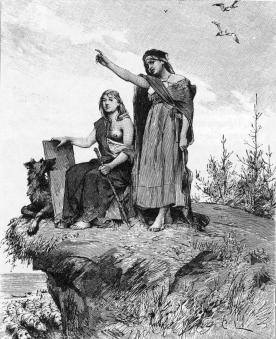
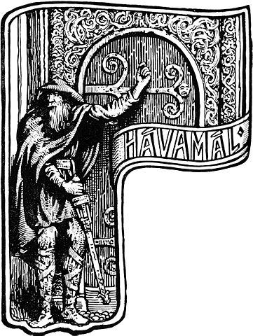
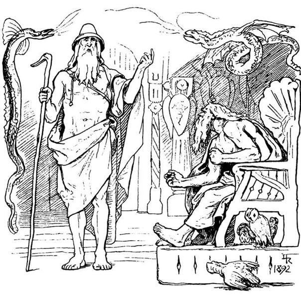
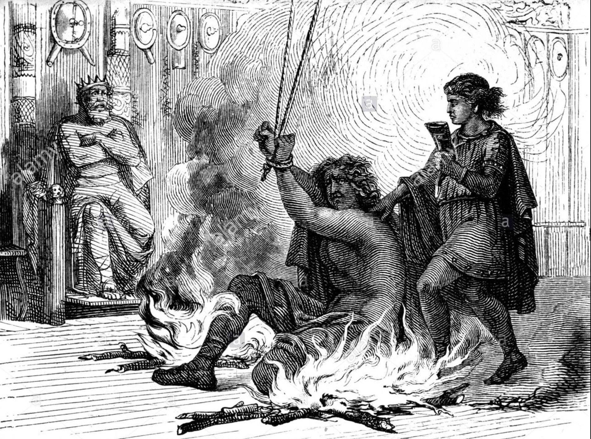
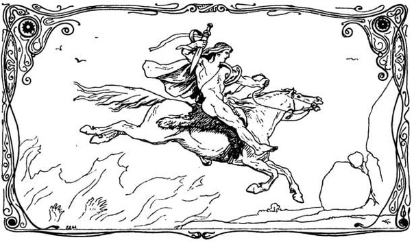
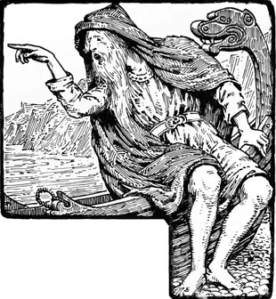
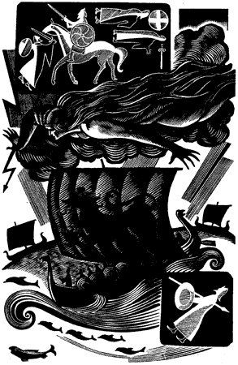
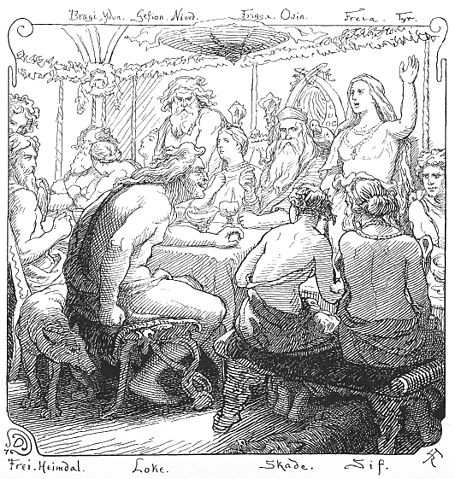
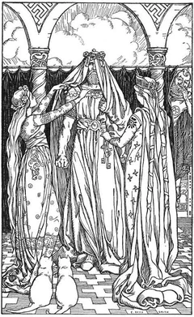
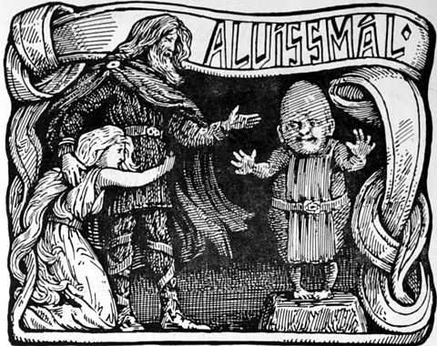

Старшая Эдда
«Ста́ршая Э́дда» (или «Э́дда Сэ́мунда», или «Пе́сенная Э́дда») — поэтический сборник древнеисландских песен о богах и героях скандинавской мифологии и истории, сохранившийся в древнеисландской рукописи второй половины XIII века, авторство которой некоторыми исследователями приписывается Сэмунду Мудрому. В то же время известны имена исландских скальдов, которые заявляли о своём авторском праве на исполняемые ими песни. Как долго они бытовали в устной традиции, где и когда возникли — неизвестно. По мнению Михаила Стеблина-Каменского, большая часть героических песен основана на сказаниях южногерманского происхождения.
По мнению Арона Гуревича свидетельством их архаичности является то, что песни не развёртываются в широкую эпопею, как это происходит в произведениях англосаксонского и германского эпоса. При этом он ссылается на Тацита и готского историка Иордана, последний из которых упоминает о неких древних песнях (лат. in priscis eorum carminibus), когда рассказывает о начале племени готов и их выходе с острова «Скандзы». Гуревич не сомневается в том, что до нас дошли не все древние песни, а некоторые из сохранившихся и записанных в разные периоды истории испытали на себе влияние христианства.
- Песни о Богах
- Прорицание вёльвы
- Речи Высокого
- Речи Вафтруднира
- Речи Гримнира
- Поездка Скирнира
- Песни о Харбарде
- Песнь о Хюмире
- Перебранка Локи
- Песнь о Трюме
- Речи Альвиса
- Песни о героях
- Песнь о Вёлунде
- Первая Песнь о Хельги Убийце Хундинга
- Песнь о Хельги, сыне Хьёрварда
- Вторая Песнь о Хельги Убийце Хундинга
- Пророчество Грипира
- Речи Регина
- Речи Фафнира
- Речи Сигрдривы
- Отрывок Песни о Сигурде
- Первая Песнь о Гудрун
- Краткая Песнь о Сигурде
- Поездка Брюнхильд в Хель
- Вторая Песнь о Гудрун
- Третья Песнь о Гудрун
- Гренландская Песнь об Атли
- Гренландские Речи Атли
- Подстрекательство Гудрун
- Речи Хамдира
- Эддические песни
Песни о Богах
Прорицание вёльвы

1 Внимайте мне все
священные роды,
великие с малыми
Хеймдалля дети!
О́дин, ты хочешь,
чтоб я рассказала
о прошлом всех сущих,
о древнем, что помню.
2 Великанов я помню,
рожденных до века,
породили меня они
в давние годы;
помню девять миров
и девять корней
и древо предела,
еще не проросшее.
3 В начале времен,
когда жил Имир,
не было в мире
ни песка, ни моря,
земли еще не было
и небосвода,
бездна зияла,
трава не росла.
4 Пока сыны Бора,
Мидгард создавшие
великолепный,
земли не подняли,
солнце с юга
на камни светило,
росли на земле
зеленые травы.
5 Солнце, друг месяца,
правую руку
до края небес
простирало с юга;
солнце не ведало,
где его дом,
звезды не ведали,
где им сиять,
месяц не ведал
мощи своей.
6 Тогда сели боги
на троны могущества
и совещаться
стали священные,
ночь назвали
и отпрыскам ночи —
вечеру, утру
и дня середине —
прозвище дали,
чтоб время исчислить.
7 Встретились асы
на Идавёлль-поле,
капища стали
высокие строить,
сил не жалели,
ковали сокровища,
создали клещи,
орудья готовили.
8 На лугу, веселясь,
в тавлеи играли,
все у них было
только из золота, —
пока не явились
три великанши,
могучие девы
из Ётунхейма.
9 Тогда сели боги
на троны могущества
и совещаться
стали священные:
кто должен племя
карликов сделать
из Бримира крови
и кости Блаина.
10 Мотсогнир старшим
из племени карликов
назван тогда был,
а Дурин — вторым;
карлики много
из глины слепили
подобий людских,
как Дурин велел.
11 Нии и Ниди,
Нордри и Судри,
Аустри и Вестри,
Альтиов, Двалин,
Бивёр и Бавёр,
Бёмбур, Нори,
Ан и Анар,
Аи, Мьёдвитнир,
12 Гандальв и Вейг,
Виндальв, Траин,
Текк и Торин,
Трор, Вит и Лит,
Нар и Нюрад —
вот я карликов —
Регин и Радсвинн —
всех назвала.
13 Фили и Кили,
Фундин, Нали,
Хефти, Вили,
Ханар, Свиор,
Фрар и Хорнбори,
Фрег и Лони,
Аурванг, Яри,
Эйкинскьяльди.
14 Еще надо карликов
Двалина войска
роду людскому
назвать до Ловара;
они появились
из камня земли,
пришли через топь
на поле песчаное.
15 Это был Драупнир
и Дольгтрасир с ним,
Хар и Хаугспори,
Хлеванг и Глои,
Дори и Ори,
Дув и Андвари,
Скирвир, Вирвир,
Скафинн и Аи,
16 Альв и Ингви,
Эйкинскьяльди,
Фьялар и Фрости,
Финн и Гиннар;
перечень этот
предков Ловара
вечно пребудет,
пока люди живы.
17 И трое пришло
из этого рода
асов благих
и могучих к морю,
бессильных увидели
на берегу
Аска и Эмблу,
судьбы не имевших.
18 Они не дышали,
в них не было духа,
румянца на лицах,
тепла и голоса;
дал Один дыханье,
а Хёнир — дух,
а Лодур — тепло
и лицам румянец.
19 Ясень я знаю
по имени Иггдрасиль,
древо, омытое
влагою мутной;
росы с него
на долы нисходят;
над источником Урд
зеленеет он вечно.
20 Мудрые девы
оттуда возникли,
три из ключа
под древом высоким;
Урд имя первой,
вторая Верданди, —
резали руны, —
Скульд имя третьей;
судьбы судили,
жизнь выбирали
детям людей,
жребий готовят.
21 Помнит войну она
первую в мире:
Гулльвейг погибла,
пронзенная копьями,
жгло ее пламя
в чертоге Одина,
трижды сожгли ее,
трижды рожденную,
и все же она
доселе живет.
22 Хейд ее называли,
в домах встречая, —
вещей колдуньей, —
творила волшбу
жезлом колдовским;
умы покорялись
ее чародейству
злым женам на радость.
23 Тогда сели боги
на троны могущества
и совещаться
стали священные:
стерпят ли асы
обиду без выкупа
иль боги в отмщенье
выкуп возьмут.
24 В войско метнул
Один копье,
это тоже свершилось
в дни первой войны;
рухнули стены
крепости асов,
ваны в битве
врагов побеждали.
25 Тогда сели боги
на троны могущества
и совещаться
священные стали:
кто небосвод
сгубить покусился
и Ода жену
отдать великанам?
26 Разгневанный Тор
один начал битву —
не усидит он,
узнав о подобном! —
крепкие были
попраны клятвы,
тот договор,
что досель соблюдался.
27 Знает она,
что Хеймдалля слух
спрятан под древом,
до неба встающим;
видит, что мутный
течет водопад
с залога Владыки, —
довольно ли вам этого?
28 Она колдовала
тайно однажды,
когда князь асов
в глаза посмотрел ей:
«Что меня вопрошать?
Зачем испытывать?
Знаю я, Один,
где глаз твой спрятан:
скрыт он в источнике
славном Мимира!»
Каждое утро
Мимир пьет мед
с залога Владыки —
довольно ли вам этого?
29 Один ей дал
ожерелья и кольца,
взамен получил
с волшбой прорицанья, —
сквозь все миры
взор ее проникал.
30 Валькирий видала
из дальних земель,
готовых спешить
к племени готов;
Скульд со щитом,
Скёгуль другая,
Гунн, Хильд и Гёндуль
и Гейрскёгуль.
Вот перечислены
девы Одина,
любо скакать им
повсюду, валькириям.
31 Видала, как Бальдр,
бог окровавленный,
Одина сын,
смерть свою принял:
стройный над полем
стоял, возвышаясь,
тонкий, прекрасный
омелы побег.
32 Стал тот побег,
тонкий и стройный,
оружьем губительным,
Хёд его бросил.
У Бальдра вскоре
брат народился, —
ночь проживя,
он начал сражаться.
33 Ладоней не мыл он,
волос не чесал,
пока не убил
Бальдра убийцу;
оплакала Фригг,
в Фенсалир сидя,
Вальгаллы скорбь —
довольно ли вам этого?
34 Сплел тогда Вали.
страшные узы,
крепкие узы
связал из кишок.
35 Пленника видела
под Хвералундом,
обликом схожего
с Локи зловещим;
там Сигюн сидит,
о муже своем
горько печалясь, —
довольно ли вам этого?
36 Льется с востока
поток холодный,
мечи он несет, —
Слид ему имя.
37 Стоял на севере
в Нидавеллир
чертог золотой, —
то карликов дом;
другой же стоял
на Окольнир дом,
чертог великанов,
зовется он Бримир.
38 Видела дом,
далекий от солнца,
на Береге Мертвых,
дверью на север;
падали капли
яда сквозь дымник,
из змей живых
сплетен этот дом.
39 Там она видела —
шли чрез потоки
поправшие клятвы,
убийцы подлые
и те, кто жен
чужих соблазняет;
Нидхёгг глодал там
трупы умерших,
терзал он мужей —
довольно ли вам этого?
40 Сидела старуха
в Железном Лесу
и породила там
Фенрира род;
из этого рода
станет один
мерзостный тролль
похитителем солнца.
41 Будет он грызть
трупы людей,
кровью зальет
жилище богов;
солнце померкнет
в летнюю пору,
бури взъярятся —
довольно ли вам этого?
42 Сидел на холме,
на арфе играл
пастух великанши,
Эггдер веселый;
над ним распевал
на деревьях лесных
кочет багряный
по имени Фьялар.
43 Запел над асами
Гуллинкамби,
он будит героев
Отца Дружин;
другой под землей
первому вторит
петух черно-красный
у Хель чертога.
44 Гарм лает громко
у Гнипахеллира,
привязь не выдержит —
вырвется Жадный.
Ей многое ведомо,
все я провижу
судьбы могучих
славных богов.
45 Братья начнут
биться друг с другом,
родичи близкие
в распрях погибнут;
тягостно в мире,
великий блуд,
век мечей и секир,
треснут щиты,
век бурь и волков
до гибели мира;
щадить человек
человека не станет.
46 Игру завели
Мимира дети,
конец возвещен
рогом Гьяллархорн;
Хеймдалль трубит,
поднял он рог,
с черепом Мимира
Один беседует.
47 Трепещет Иггдрасиль,
ясень высокий,
гудит древний ствол,
турс вырывается.
49 Гарм лает громко
у Гнипахеллира,
привязь не выдержит —
вырвется Жадный.
Ей многое ведомо,
все я провижу
судьбы могучих
славных богов.
50 Хрюм едет с востока,
щитом заслонясь;
Ёрмунганд гневно
поворотился;
змей бьет о волны,
клекочет орел,
павших терзает;
Нагльфар плывет.
51 С востока в ладье
Муспелля люди
плывут по волнам,
а Локи правит;
едут с Волком
сыны великанов,
в ладье с ними брат
Бюлейста едет.
48 Что же с асами?
Что же с альвами?
Гудит Ётунхейм,
асы на тинге;
карлики стонут
пред каменным входом
в скалах родных —
довольно ли вам этого?
52 Сурт едет с юга
с губящим ветви,
солнце блестит
на мечах богов;
рушатся горы,
мрут великанши;
в Хель идут люди,
расколото небо.
53 Настало для Хлин
новое горе,
Один вступил
с Волком в сраженье,
а Бели убийца
с Суртом схватился, —
радости Фригг
близится гибель.
54 Гарм лает громко
у Гнипахеллира,
привязь не выдержит —
вырвется Жадный.
Ей многое ведомо,
все я провижу
судьбы могучих
славных богов.
55 Сын тут приходит
Отца Побед,
Видар, для боя
со зверем трупным;
меч он вонзает,
мстя за отца, —
в сердце разит он
Хведрунга сына.
56 Тут славный приходит
Хлодюн потомок,
со змеем идет
биться сын Одина,
в гневе разит
Мидгарда страж,
все люди должны
с жизнью расстаться, —
на девять шагов
отступает сын Фьёргюн,
змеем сраженный —
достоин он славы.
57 Солнце померкло,
земля тонет в море,
срываются с неба
светлые звезды,
пламя бушует
питателя жизни,
жар нестерпимый
до неба доходит.
58 Гарм лает громко
у Гнипахеллира,
привязь не выдержит —
вырвется Жадный.
Ей многое ведомо,
все я провижу
судьбы могучих
славных богов.
59 Видит она:
вздымается снова
из моря земля,
зеленея, как прежде;
падают воды,
орел пролетает,
рыбу из волн
хочет он выловить.
60 Встречаются асы
на Идавёлль-поле,
о поясе мира
могучем беседуют
и вспоминают
о славных событьях
и рунах древних
великого бога.
61 Снова найтись
должны на лугу
в высокой траве
тавлеи золотые,
что им для игры
служили когда-то.
62 Заколосятся
хлеба без посева,
зло станет благом,
Бальдр вернется,
жить будет с Хёдом
у Хрофта в чертогах,
в жилище богов —
довольно ли вам этого?
63 Хёнир берет
прут жеребьевый,
братьев обоих
живут сыновья
в доме ветров —
довольно ли вам этого?
64 Чертог она видит
солнца чудесней,
на Гимле стоит он,
сияя золотом:
там будут жить
дружины верные,
вечное счастье
там суждено им.
65 Нисходит тогда
мира владыка,
правящий всем
властелин могучий.
66 Вот прилетает
черный дракон,
сверкающий змей
с Темных Вершин;
Нидхёгг несет,
над полем летя,
под крыльями трупы —
пора ей исчезнуть.
Речи Высокого

1 Прежде чем в дом
войдешь, все входы
ты осмотри,
ты огляди, —
ибо как знать,
в этом жилище
недругов нет ли.
2 Дающим привет!
Гость появился!
Где место найдет он?
Торопится тот,
кто хотел бы скорей
у огня отогреться.
3 Дорог огонь
тому, кто с дороги,
чьи застыли колени;
в еде и одежде
нуждается странник
в горных краях.
4 Гостю вода
нужна и ручник,
приглашенье учтивое,
надо приветливо
речь повести
и выслушать гостя.
5 Ум надобен тем,
кто далёко забрел, —
дома все тебе ведомо;
насмешливо будут
глядеть на невежду,
средь мудрых сидящего.
6 Умом пред людьми
похваляться не надо —
скрывать его стоит;
если мудрец
будет молчать —
не грозит ему горе,
ибо нет на земле
надежнее друга,
чем мудрость житейская.
7 Гость осторожный,
дом посетивший,
безмолвно внимает —
чутко слушать
и зорко смотреть
мудрый стремится.
8 Счастливы те,
кто заслужил
похвалу и приязнь;
труднее найти
добрый совет
в груди у других.
9 Счастливы те,
кто в жизни славны
разумом добрым;
неладный совет
часто найдешь
у другого в груди.
10 Нету в пути
драгоценней ноши,
чем мудрость житейская,
дороже сокровищ
она на чужбине —
то бедных богатство.
11 Нету в пути
драгоценней ноши,
чем мудрость житейская,
хуже нельзя
в путь запастись,
чем пивом опиться.
12 Меньше от пива
пользы бывает,
чем думают многие;
чем больше ты пьешь,
тем меньше покорен
твой разум тебе.
13 Цапля забвенья
вьется над миром,
рассудок крадет;
крылья той птицы
меня приковали
в доме у Гуннлёд.
14 Пьяным я был,
слишком напился
у мудрого Фьялара;
но лучшее в пиве —
что хмель от него
исчезает бесследно.
15 Осторожным быть должен
конунга отпрыск
и смелым в сраженье;
каждый да будет
весел и добр
до часа кончины.
16 Глупый надеется
смерти не встретить,
коль битв избегает;
но старость настанет —
никто от нее
не сыщет защиты.
17 Глазеет глупец,
приехавший в гости,
болтая иль молча;
а выпьет глоток —
и сразу покажет,
как мало в нем мудрости,
18 Знает лишь тот,
кто много земель
объездил и видел, —
коль сам он умен, —
что на уме
у каждого мужа.
19 Пей на пиру,
но меру блюди
и дельно беседуй;
не прослывешь
меж людей неучтивым,
коль спать рано ляжешь.
20 Без толку жадный
старается жрать
себе на погибель;
смеются порой
над утробой глупца
на пиршестве мудрых.
21 Знают стада,
что срок наступил
покинуть им пастбища;
а кто неумен,
меры не знает,
живот набивая.
22 Кто нравом тяжел,
тот всех осуждает,
смеется над всем;
ему невдомек,
а должен бы знать,
что сам он с изъяном.
23 Глупый не спит
всю ночь напролет
в думах докучных;
утро настанет —
где же усталому
мудро размыслить.
24 Муж неразумный
увидит приязнь
в улыбке другого;
с мудрыми сидя,
глупец не поймет
над собою насмешки.
25 Муж неразумный
увидит приязнь
в улыбке другого;
а после на тинге
едва ли отыщет
сторонников верных.
26 Муж неразумный
все знает на свете,
в углу своем сидя;
но не найдет он
достойных ответов
в дельной беседе.
27 Муж неразумный
на сборище людном
молчал бы уж лучше;
не распознать
в человеке невежду,
коль он не болтлив,
но невежда всегда
не видит того,
что болтлив он безмерно.
28 Мудрым слывет,
кто расспросит других
и расскажет разумно;
скрыть не умеют
люди в беседах,
что с ними случилось.
29 Кто молчать не умеет,
тот лишние речи
заводит нередко;
быстрый язык
накличет беду,
коль его не сдержать.
30 Насмешливых взглядов
не надо бросать
на гостей приглашенных
не спросишь иного —
он мнит, что разумен,
и мирно пирует.
31 Доволен глумливый,
коль, гостя обидев,
удрать ухитрился;
насмешник такой
не знает, что нажил
гневных врагов.
32 Люди друзьями
слывут, но порой
на пиру подерутся;
распри всегда
готовы возникнуть:
гость ссорится с гостем.
33 Рано поешь,
а в гости сбираясь,
есть надо плотно:
или голодным
будешь в гостях —
не сможешь беседовать.
34 Путь неблизок
к другу плохому,
хоть двор его рядом;
а к доброму другу
дорога пряма,
хоть далек его двор.
35 Гость не должен
назойливым быть
и сидеть бесконечно;
даже приятель
станет противен,
коль долго гостит он.
36 Пусть невелик
твой дом, но твой он,
и в нем ты владыка;
пусть крыша из прутьев
и две лишь козы, —
это лучше подачек.
37 Пусть невелик
твой дом, но твой он,
и в нем ты владыка;
кровью исходит
сердце у тех,
кто просит подачек.
38 Муж не должен
хотя бы на миг
отходить от оружья;
ибо как знать,
когда на пути
копье пригодится.
39 Не знаю радушных
и щедрых, что стали б
дары отвергать;
ни таких, что, в ответ
на подарок врученный,
подарка б не приняли.
40 Добра не жалей,
что нажито было,
не скорби о потере;
что другу обещано,
недруг возьмет —
выйдет хуже, чем думалось.
41 Оружье друзьям
и одежду дари —
то тешит их взоры;
друзей одаряя,
ты дружбу крепишь,
коль судьба благосклонна.
42 Надобно в дружбе
верным быть другу,
одарять за подарки;
смехом на смех
пристойно ответить
и обманом — на ложь.
43 Надобно в дружбе
верным быть другу
и другом друзей его;
с недругом друга
никто не обязан
дружбу поддерживать.
44 Если дружбу ведешь
и в друге уверен
и добра ждешь от друга, —
открывай ему душу,
дары приноси,
навещай его часто.
45 Но если другому
поверил оплошно,
добра ожидая,
сладкою речью
скрой злые мысли
и лги, если лжет он.
46 Так же и с теми,
в ком усомнишься,
в ком видишь коварство, —
улыбайся в ответ,
скрывай свои мысли, —
тем же отплачивай.
47 Молод я был,
странствовал много
и сбился с пути;
счел себя богачом,
спутника встретив, —
друг — радость друга.
48 Щедрые, смелые
счастливы в жизни,
заботы не знают;
а трус, тот всегда
спасаться готов,
как скупец — от подарка.
49 В поле я отдал
одежду мою
двум мужам деревянным;
от этого стали
с людьми они сходны:
жалок нагой.
50 Сосна, у дома
возросшая, сохнет,
корой не укрыта;
и человек,
что людям не люб, —
зачем ему жить!
51 Жарко приязнь
пылает пять дней
меж дурными друзьями;
а пятый прошел —
погаснет огонь,
и дружба вся врозь.
52 Подарок большой
не всюду пригоден,
он может быть малым;
неполный кувшин,
половина краюхи
мне добыли друга.
53 У малых песчинок,
у малых волн
мудрости мало;
не все мудрецы, —
глупых и умных
поровну в мире.
54 Следует мужу
в меру быть умным,
не мудрствуя много;
лучше живется
тем людям, чьи знанья
не слишком обширны.
55 Следует мужу
в меру быть умным,
не мудрствуя много;
ибо редка
радость в сердцах,
если разум велик.
56 Следует мужу
в меру быть умным,
не мудрствуя много;
тот, кто удел свой
не знает вперед,
всего беззаботней.
57 Головня головне
передать готова
пламя от пламени;
в речах человек
познает человека,
в безмолвье глупеет.
58 Рано встает,
кто хочет отнять
добро или жизнь;
не видеть добычи
лежачему волку,
а победы — проспавшему.
59 Рано встает,
кто без подмоги
к труду приступает;
утром дремота
работе помеха —
кто бодр, тот богат.
60 Мера бересты
и балок для кровли
известна хозяину,
и сколько потребно
в полгода поленьев
сжигать в очаге.
61 Сытым и чистым
на тинг собирайся,
хоть и в бедной одежде;
сапог и штанов
стыдиться не надо,
а также коня,
коль он неказист.
62 Вытянув шею,
орел озирает
древнее море;
так смотрит муж,
в чуждой толпе
защиты не знающий.
63 Вопросит и ответит
умный всегда,
коль слыть хочет сведущим;
должен один
знать, а не двое, —
у трех все проведают.
64 Силу свою
должен мудрец
осторожно показывать;
в том убедится
бившийся часто,
что есть и сильнейшие.
65 Бывает, ты слово
скажешь другому,
а после поплатишься.
66 Случалось, я рано
в гости являлся
иль поздно порою:
там выпили пиво,
а там не варили —
кто не мил, тот некстати.
67 Повсюду меня
приглашали бы в гости,
но только без трапез
иль если бы, окорок
съевши у друга,
я два отдавал бы.
68 Драгоценен огонь
для сынов человека
и солнца сиянье;
если телом ты здрав,
то здоровье, а также
жизнь без порока.
69 Хворый судьбой
не совсем обездолен:
этот счастлив сынами,
этот близкой родней,
этот богатством,
а этот деяньями.
70 Лучше живым быть,
нежели мертвым;
живой — наживает;
для богатого пламя,
я видел, пылало,
но ждала его смерть.
71 Ездить может хромой,
безрукий — пасти,
сражаться — глухой;
даже слепец
до сожженья полезен —
что толку от трупа!
72 Сын — это счастье,
хотя бы на свете
отца не застал он;
не будет и камня
у края дороги,
коль сын не поставит.
73 Двое — смерть одному;
голове враг — язык;
под каждым плащом
рука наготове.
74 Ночь тому не страшна,
кто сделал запасы;
коротки реи;
ненастна ночь осенью;
сменится ветер
не раз за пять дней,
несчетно — за месяц.
75 Иной не постигнет,
что вреден подчас
достаток рассудку;
один — богатей,
другой же — бедняк
и в том невиновен.
76 Гибнут стада,
родня умирает,
и смертен ты сам;
но смерти не ведает
громкая слава
деяний достойных.
77 Гибнут стада,
родня умирает,
и смертен ты сам;
но знаю одно,
что вечно бессмертно:
умершего слава.
78 У Фитьюнга были
сыны богачами
и бедность изведали;
может внезапно
исчезнуть достаток —
друг он неверный.
79 Если глупцу
достается в удел
любовь иль богатство,
не добудет ума он,
но чванство умножит
и спесью прославится.
80 Вот что отвечу,
когда вопрошаешь
о рунах божественных,
что создали сильные,
а вырезал Вещий:
благо в молчанье.
81 День хвали вечером,
жен — на костре,
меч — после битвы,
дев — после свадьбы,
лед — если выдержит,
пиво — коль выпито.
82 Лес руби на ветру,
жди погоды для гребли,
с девой беседуй
во тьме — зорок день;
у ладьи — быстрота,
у щита — оборона,
удар — у меча,
поцелуи — у девы.
83 Пиво пей у огня,
по льду скользи,
коня купи тощего,
меч — заржавелый,
корми коня дома,
а пса — у чужих.
84 Не доверяй
ни девы речам,
ни жены разговорам —
на колесе
их слеплено сердце,
коварство в груди их.
85 Непрочному луку,
жаркому пламени,
голодному волку,
горластой вороне,
визжащей свинье,
стволу без корней,
встающему валу,
котлу, что кипит,
86 летящей стреле,
отходящему валу,
тонкому льду,
змее, что свилась,
жены объясненьям,
с изъяном мечу,
медведя проделкам,
и конунга сыну,
87 скотине больной,
рабу своевольному,
лести колдуньи,
врагу, что сражен,
88 всходам ранним
не должно нам верить,
ни сыну до срока:
погоде для сева
и сына уму
доверять не дерзай.
89 Брата убийце,
коль встречен он будет,
горящему дому,
коню слишком резвому, —
конь захромает —
куда он годится, —
всему, что назвал я,
верить не надо!
90 Женщин любить,
в обманах искусных, —
что по льду скакать
на коне без подков,
норовистом, двухлетнем
коне непокорном,
иль в бурю корабль
без кормила вести,
иль хромцу за оленем
в распутицу гнаться.
91 Откровенно скажу
о мужах и о женах:
мужи тоже лживы;
красно говоря,
но задумав коварство, —
улестим даже умных.
92 Красно говори
и подарки готовь,
чтобы жен соблазнять;
дев красоту
неустанно хваля,
будь уверен в успехе.
93 Никто за любовь
никогда осуждать
другого не должен;
часто мудрец
опутан любовью,
глупцу непонятной.
94 Мужей не суди
за то, что может
с каждым свершиться;
нередко бывает
мудрец безрассудным
от сильной страсти.
95 Твоей лишь душе
ведомо то,
что в сердце твоем;
худшей на свете
хвори не знаю,
чем духа томленье.
96 Изведал я это:
милую ждал я,
таясь в тростниках;
дороже была мне,
чем тело с душой,
но моею не стала.
97 Солнечноясную
Биллинга дочь
нашел я на ложе;
мне ярла власть
не была так желанна,
как светлая дева.
98 «Вечером, Один,
прийди, чтоб деву
к согласью склонить:
будет неладно,
если другие
про это проведают».
99 Ее я оставил —
казалось, от страсти
мой разум мутился;
таил я надежду,
что будет моей
дева любимая.
100 Вновь я пришел,
увидел, что воины
стали стеной, —
факелы блещут,
завалы из бревен
мне путь преградили.
101 А перед утром, —
все почивали, —
явился я вновь;
лишь сука была
привязана к ложу
девы достойной.
102 Девы нередко,
коль их разгадаешь,
коварство таят;
изведал я это,
деву пытаясь
к ласкам склонить;
был тяжко унижен
жестокой и все ж
не достиг я успеха.
103 Будь дома весел,
будь с гостем приветлив,
но разум храни;
прослыть хочешь мудрым —
в речах будь искусен, —
тебя не забудут;
глупцом из глупцов
прослывет безмолвный —
то свойственно глупым.
104 От старого турса
вернулся назад я;
промолчал бы — что пользы!
Но речи я вел
и удачи добился
в палатах у Суттунга.
105 Гуннлёд меня
угостила медом
на троне из золота;
плату недобрую
деве я отдал
за ласку, любовь,
за всю ее скорбь.
106 Рати клыкам
в камень велел я
крепко вгрызаться;
ётунов стены
меня обступили,
мне гибель грозила.
107 Хитростью вдоволь
я насладился,
все умный сумеет;
так ныне Одрёрир
в доме священном
людей покровителя.
108 Не удалось бы
выбраться мне
из жилья исполинов,
когда бы не помощь
Гуннлёд прекрасной,
меня обнимавшей.
109 Назавтра собрались
и двинулись хримтурсы
к палатам Высокого
спросить у Высокого:
Бёльверк — спросили —
вернулся к богам
иль сразил его Суттунг?
110 Клятву Один
дал на кольце;
не коварна ли клятва?
Напиток достал он
обманом у Суттунга
Гуннлёд на горе.
111 Пора мне с престола
тула поведать
у источника Урд;
смотрел я в молчанье,
смотрел я в раздумье,
слушал слова я;
говорили о рунах,
давали советы
у дома Высокого,
в доме Высокого
так толковали:
112 Советы мои,
Лоддфафнир, слушай,
на пользу их примешь,
коль ты их поймешь:
ночью вставать
по нужде только надо
иль следя за врагом.
113 Советы мои,
Лоддфафнир, слушай,
на пользу их примешь,
коль ты их поймешь:
с чародейкой не спи,
пусть она не сжимает
в объятьях тебя.
114 Заставит она
тебя позабыть
о тинге и сходках;
есть не захочешь,
забудешь друзей,
сон горестным станет.
115 Советы мои,
Лоддфафнир, слушай,
на пользу их примешь,
коль ты их поймешь:
чужую жену
не должен ты брать
в подруги себе.
116 Советы мои
Лоддфафнир, слушай,
на пользу их примешь,
коль ты их поймешь:
в горах ли ты едешь
или по фьордам —
еды бери вдоволь.
117 Советы мои,
Лоддфафнир, слушай,
на пользу их примешь,
коль ты их поймешь:
с дурным человеком
несчастьем своим
делиться не должно;
ведь люди дурные
тебе не отплатят
добром за доверье.
118 Я видел однажды,
как муж был погублен
злой женщины словом;
коварный язык
уязвил клеветой,
обвиняя облыжно.
119 Советы мои,
Лоддфафнир, слушай,
на пользу их примешь,
коль ты их поймешь:
есть друг у тебя,
кому доверяешь, —
навещай его часто;
высокой травой
и кустами покрыты
неторные тропы.
120 Советы мои,
Лоддфафнир, слушай,
на пользу их примешь,
коль ты их поймешь:
с мужем достойным
мирно беседуй,
добивайся доверья.
121 Советы мои,
Лоддфафнир, слушай,
на пользу их примешь,
коль ты их поймешь:
дружбу блюди
и первым ее
порвать не старайся;
скорбь твое сердце
сожжет, коль не сможешь
другу довериться.
122 Советы мои,
Лоддфафнир, слушай,
на пользу их примешь,
коль ты их поймешь:
глупцу не перечь,
с мужем неумным
в спор не вступай,
123 ибо дурной
тебе не отплатит
благом за благо,
а добрый ответит
на дружбу всегда
похвалой и приязнью.
124 Хорошему другу
что только хочешь
правдиво поведай;
всегда откровенность
лучше обмана;
не только приятное
другу рассказывай.
125 Советы мои,
Лоддфафнир, слушай,
на пользу их примешь,
коль ты их поймешь:
с тем, кто хуже тебя,
спорить не надо;
нападет негодяй,
а достойный уступит.
126 Советы мои,
Лоддфафнир, слушай,
на пользу их примешь,
коль ты их поймешь:
обтесывай древки
и обувь готовь
лишь себе самому;
если обувь плоха
или погнуто древко —
проклятья получишь.
127 Советы мои,
Лоддфафнир, слушай,
на пользу их примешь,
коль ты их поймешь:
злые поступки
злыми зови,
мсти за злое немедля.
128 Советы мои,
Лоддфафнир, слушай,
на пользу их примешь,
коль ты их поймешь:
дурным никогда
доволен не будь,
дорожи только добрым.
129 Советы мои,
Лоддфафнир, слушай,
на пользу их примешь,
коль ты их поймешь;
вверх не смотри,
вступая в сраженье, —
нс сглазил бы враг, —
воины часто
разум теряют.
130 Советы мои,
Лоддфафнир, слушай,
на пользу их примешь,
коль ты их поймешь:
если встречи с красавицей
ищешь и ею
насладиться намерен —
обещанья давай
и крепко держи их!
Добро не прискучит.
131 Советы мои,
Лоддфафнир, слушай,
на пользу их примешь,
коль ты их поймешь:
будь осторожен,
но страха чуждайся,
пиву не верь
и хитрому вору,
не доверяй
и жене другого.
132 Советы мои,
Лоддфафнир, слушай,
на пользу их примешь,
коль ты их поймешь:
потешаться не вздумай
над путником дальним,
глумиться над гостем.
133 Не ведают часто
сидящие дома,
кто путник пришедший;
изъян и у доброго
сыщешь, а злой
не во всем нехорош.
134 Советы мои,
Лоддфафнир, слушай,
на пользу их примешь,
коль ты их поймешь:
над седым стариком
никогда не смейся;
цени слово старца;
цедится мудрость
из старого меха,
что висит возле шкур,
качаясь средь кож,
с сычугами в соседстве.
135 Советы мои,
Лоддфафнир, слушай,
на пользу их примешь,
коль ты их поймешь:
над гостями не смейся,
в дверь не гони их,
к несчастным будь щедр.
136 Ворота сломаешь,
коль всех без разбора
впускать будешь в дом;
кольцо подари,
не то пожеланья
плохие получишь.
137 Советы мои,
Лоддфафнир, слушай,
на пользу их примешь,
коль ты их поймешь:
если ты захмелел —
землей исцелишься,
ведь землей лечат хмель,
а пламенем — хвори,
понос лечат дубом,
колосьями — порчу,
безумье — луной,
бузиною — желтуху,
червями — укусы
и рунами — чирьи,
земля ж выпьет влагу.
138 Знаю, висел я
в ветвях на ветру
девять долгих ночей,
пронзенный копьем,
посвященный Одину,
в жертву себе же,
на дереве том,
чьи корни сокрыты
в недрах неведомых.
139 Никто не питал,
никто не поил меня,
взирал я на землю,
поднял я руны,
стеная их поднял —
и с древа рухнул.
140 Девять песен узнал я
от сына Бёльторна,
Бестли отца,
меду отведал
великолепного,
что в Одрёрир налит.
141 Стал созревать я
и знанья множить,
расти, процветая;
слово от слова
слово рождало,
дело от дела
дело рождало.
142 Руны найдешь
и постигнешь знаки,
сильнейшие знаки,
крепчайшие знаки,
Хрофт их окрасил,
а создали боги
и Один их вырезал,
143 Один у асов,
а Даин у альвов,
Двалин у карликов,
у ётунов Асвид,
и сам я их резал.
144 Умеешь ли резать?
Умеешь разгадывать?
Умеешь окрасить?
Умеешь ли спрашивать?
Умеешь молиться
и жертвы готовить?
Умеешь раздать?
Умеешь заклать?
145 Хоть совсем не молись,
но не жертвуй без меры,
на дар ждут ответа;
совсем не коли,
чем без меры закалывать.
Так вырезал Тунд
до рожденья людей;
вознесся он там,
когда возвратился.
146 Заклинанья я знаю —
не знает никто их,
даже конунгов жены;
помощь — такое
первому имя —
помогает в печалях,
в заботах и горестях.
147 Знаю второе, —
оно врачеванью
пользу приносит.
148 Знаю и третье, —
оно защитит
в битве с врагами,
клинки их туплю,
их мечи и дубины
в бою бесполезны.
149 Четвертое знаю, —
коль свяжут мне члены
оковами крепкими,
так я спою,
что мигом спадут
узы с запястий
и с ног кандалы.
150 И пятое знаю, —
коль пустит стрелу
враг мой в сраженье,
взгляну — и стрела
не долетит,
взору покорная.
151 Знаю шестое, —
коль недруг корнями
вздумал вредить мне, —
немедля врага,
разбудившего гнев мой,
несчастье постигнет.
152 Знаю седьмое, —
коль дом загорится
с людьми на скамьях,
тотчас я пламя
могу погасить,
запев заклинанье.
153 Знаю восьмое, —
это бы всем
помнить полезно:
где ссора начнется
средь воинов смелых,
могу помирить их.
154 Знаю девятое, —
если ладья
борется с бурей,
вихрям улечься
и волнам утихнуть
пошлю повеленье.
155 Знаю десятое, —
если замечу,
что ведьмы взлетели,
сделаю так,
что не вернуть им
душ своих старых,
обличий оставленных.
156 Одиннадцатым
друзей оберечь
в битве берусь я,
в щит я пою, —
побеждают они,
в боях невредимы,
из битв невредимы
прибудут с победой.
157 Двенадцатым я,
увидев на дереве
в петле повисшего,
так руны вырежу,
так их окрашу,
что он оживет
и беседовать будет.
158 Тринадцатым я
водою младенца
могу освятить, —
не коснутся мечи его,
и невредимым
в битвах он будет.
159 Четырнадцатым
число я открою
асов и альвов,
прозванье богов
поведаю людям, —
то может лишь мудрый.
160 Пятнадцатое
Тьодрёрир пел
пред дверью Деллинга;
напел силу асам,
и почести — альвам,
и Одину — дух.
161 Шестнадцатым я
дух шевельну
девы достойной,
коль дева мила,
овладею душой,
покорю ее помыслы.
162 Семнадцатым я
опутать смогу
душу девичью;
те заклятья, Лоддфафнир,
будут тебе
навек неизвестны;
хотя хороши они,
впрок бы принять их,
на пользу усвоить.
163 Восемнадцатое
ни девам, ни женам
сказать не смогу я, —
один сбережет
сокровеннее тайну, —
тут песня пресеклась —
откроюсь, быть может,
только жене
иль сестре расскажу.
164 Вот речи Высокого
в доме Высокого,
нужные людям,
ненужные ётунам.
Благо сказавшему!
Благо узнавшим!
Кто вспомнит — воспользуйся!
Благо внимавшим!
Речи Вафтруднира

[Один сказал:]
1 «Дай, Фригг, мне совет,
в путь я собрался
к Вафтрудниру в гости!
В древних познаньях
помериться силой
хочу я с мудрейшим».
[Фригг сказала:]
2 «Лучше останься,
Ратей Отец,
в чертогах богов —
Вафтруднир слывет
сильнейшим из ётунов,
кто с ним сравнится!»
[Один сказал:]
3 «Я странствовал много,
беседовал много
с благими богами;
видеть хотел бы,
как Вафтруднир в доме
живет у себя».
[Фригг сказала:]
4 «Странствуй здоровым,
здоровым вернись,
доброй дороги!
Пусть мудрость тебе
там помощью будет
с ётуном в споре!»
5 Отправился в путь
Один, чтоб мудрость
турса изведать;
Игг прибыл к владеньям
Има отца
и в палату вошел.
[Один сказал:]
6 «Привет тебе, Вафтруднир!
Вот я пришел
поглядеть на тебя;
хочу я постичь
познанья твои,
все ли, мудрый, ты ведаешь».
[Вафтруднир сказал:]
7 «Что за пришелец
в дом мой проник
и слова в меня мечет?
Ты дом не покинешь,
коль не победишь,
состязаясь со мною».
[Один сказал:]
8 «Гагнрад мне имя,
мучим я жаждой,
в пути утомился,
жду приглашенья —
долог был путь мой, —
прими меня, ётун».
[Вафтруднир сказал:]
9 «Будь у нас, Гагнрад,
гостем в палате,
садись на скамью!
Посмотрим сейчас,
кто в знаньях сильней,
старый турс или ты».
[Один сказал:]
10 «Должен молчать
или дельно беседовать
бедный с богатым;
в речах своих буду
меру блюсти,
с хладноребрым сойдясь».
[Вафтруднир сказал:]
11 «Гагнрад, скажи,
коль стоя ты хочешь
спорить со мною:
что за конь поутру
день нам приносит,
как имя коню?»
[Один сказал:]
12 «Скинфакси конь
сияющий день
поутру нам приносит;
слывет у героев
он лучшим конем
с гривой сверкающей».
[Вафтруднир сказал:]
13 «Гагнрад, скажи,
коль стоя ты хочешь
спорить со мною:
кто конь, несущий
сумрак ночной
над богами благими?»
[Один сказал:]
14 «Хримфакси конь
сумрак несет
над богами благими;
пену с удил
роняет на долы
росой на рассвете».
[Вафтруднир сказал:]
15 «Гагнрад, скажи,
коль стоя ты хочешь
спорить со мною:
как имя реки,
где проходит рубеж
меж богами и турсами?»
[Один сказал:]
16 «Ивинг — река,
где проходит рубеж
меж богами и турсами;
воды ее
не застынут вовек,
льдом не оденутся».
[Вафтруднир сказал:]
17 «Гагнрад, скажи,
коль стоя ты хочешь
спорить со мною:
как имя равнины,
где встретится Сурт
в битве с богами?»
Один [сказал:]
18 «Вигрид — равнина,
где встретится Сурт
в битве с богами,
по сто переходов
в каждую сторону
поле для боя».
Вафтруднир [сказал:]
19 «Гость мой, ты сведущ,
садись на скамью,
побеседуем сидя!
Голову мы,
гость мой, назначим
ставкою в споре!»
Один [сказал:]
20 «Дай первый ответ,
если светел твой ум
и все знаешь, Вафтруднир:
как создали землю,
как небо возникло,
ётун, открой мне?»
Вафтруднир [сказал:]
21 «Имира плоть
стала землей,
стали кости горами,
небом стал череп
холодного турса,
а кровь его морем».
Один [сказал:]
22 «Второй дай ответ,
если светел твой ум
и все знаешь, Вафтруднир:
луна как возникла
во тьме для людей,
как создано солнце?»
Вафтруднир [сказал:]
23 «Мундильфёри
зовется отец
солнца с луною;
небо обходят
они каждый день,
то времени мера».
Один [сказал:]
24 «Дай третий ответ,
коль мудрым слывешь
и все знаешь, Вафтруднир:
откуда начало
дня над людьми
и ночи с луною?»
Вафтруднир [сказал:]
25 «Деллингом звать
день породившего,
Нёр — ночи отец;
измыслили боги
луны измененья,
чтоб меру дать времени».
Один [сказал:]
26 «Дай четвертый ответ,
коль умным слывешь
и все знаешь, Вафтруднир:
кто создал зиму
и теплое лето
у богов всеблагих?»
Вафтруднир [сказал:]
27 «Виндсваль дал зиму,
а Свасуд — лето,
они им отцы».
Один сказал:
28 «Дай пятый ответ,
коль умным слывешь
и все знаешь, Вафтруднир:
кто в начале времен
был старшим из асов
и родичей Имира?»
Вафтруднир [сказал:]
29 «За множество зим
до созданья земли
был Бергельмир турс,
Трудгельмир — имя
турса отца,
и Аургельмир — деда».
Один сказал:
30 «Шестой дай ответ,
коль мудрым слывешь
и все знаешь, Вафтруднир:
откуда меж турсов
Аургельмир явился,
первый их предок?»
Вафтруднир [сказал:]
31 «Брызги холодные
Эливагара
ётуном стали;
отсюда свой род
исполины ведут,
оттого мы жестоки».
Один сказал:
32 «Седьмой дай ответ,
коль мудрым слывешь
и все знаешь, Вафтруднир:
как же мог ётун,
не знавший жены,
отцом быть потомства?»
Вафтруднир сказал:
33 «У ётуна сильного
дочка и сын
возникли под мышкой,
нога же с ногой
шестиглавого сына
турсу родили».
Один сказал:
34 «Восьмой дай ответ,
коль мудрым слывешь
и все знаешь, Вафтруднир:
что первое ведаешь,
помнишь древнейшее,
турс многомудрый?»
Вафтруднир сказал:
35 «За множество зим
до созданья земли
был Бергельмир турс;
в гроб его
при мне положили —
вот что первое помню».
Один сказал:
36 «Дай девятый ответ,
коль мудрым слывешь
и все знаешь, Вафтруднир:
ветер откуда
слетает на волны?
Для людей он невидим».
Вафтруднир сказал:
37 «Хресвельг сидит
у края небес
в обличье орла;
он ветер крылами
своими вздымает
над всеми народами».
[Один сказал:]
38 «Дай десятый ответ,
коль судьбы богов
ты ведаешь, Вафтруднир:
как меж асами
Ньёрд появился?
Посвящают ему
капища, храмы,
но сам он не ас».
[Вафтруднир сказал:]
39 «У ванов в жилище
рожден и в залог
отдан был асам;
когда же настанет
мира конец,
он к ванам вернется».
[Один сказал:]
40 «Скажи мне еще,
где каждый день
битвы кипят?»
[Вафтруднир сказал:]
41 «Эйнхерии все
рубятся вечно
в чертоге у Одина;
в схватки вступают,
а кончив сраженье,
мирно пируют».
[Один сказал:]
42 «Скажи мне теперь,
откуда ты ведаешь
судьбы богов;
о тайнах великих
богов и турсов
ты правду поведал,
турс многомудрый».
[Вафтруднир] сказал:
43 «О тайнах великих
богов и турсов
поведал я правду:
все девять миров
до дна прошел
и Нифльхель увидел,
куда смерть уводит».
[Один] сказал:
44 «Много я странствовал,
много беседовал
с благими богами;
кто будет жить
после конца
зимы великанов?»
[Вафтруднир] сказал:
45 «Спрячется Лив
и Ливтрасир с нею
в роще Ходдмимир;
будут питаться
росой по утрам
и людей породят».
[Один] сказал:
46 «Я странствовал много,
беседовал много
с благими богами;
как солнце на глади
небесной возникнет,
коль Волк его сгубит?»
[Вафтруднир] сказал:
47 «Прежде чем Волк
Альврёдуль сгубит,
дочь породит она;
боги умрут,
и дорогою матери
дева последует».
[Один] сказал:
48 «Я странствовал много,
беседовал много
с благими богами;
какие три девы
высоко над морем
парят в поднебесье?»
Вафтруднир сказал:
49 «Три мощных потока
текут над жильем
дочерей Мёгтрасира;
для людей эти девы —
духи благие,
хоть предки их — турсы».
Один сказал:
50 «Я странствовал много,
беседовал много
с благими богами;
кто наследьем богов
завладеет, когда
пламя Сурта погаснет?»
[Вафтруднир] сказал:
51 «Будут Видар и Вали
в Асгарде жить,
когда пламя погаснет,
Моди и Магни
Мьёлльнир возьмут.
когда Вингнис погибнет».
[Один] сказал:
52 «Я странствовал много,
беседовал много
с благими богами;
как Один свою
жизнь завершит,
когда боги погибнут?»
Вафтруднир сказал:
53 «Фенрир проглотит
отца всех людей,
но мстить будет Видар;
пасть разорвет он
свирепую волчью,
возмездье свершая».
Один сказал:
54 «Я странствовал много,
беседовал много
с благими богами;
что сыну Один
поведал, когда
сын лежал на костре?»
Вафтруднир сказал:
55 «Никто не узнает,
что потаенно
ты сыну сказал!
О кончине богов
я, обреченный,
преданья поведал!
С Одином тщился
в споре тягаться:
ты в мире мудрейший!»
Речи Гримнира

У конунга Храудунга было два сына: одного звали Агнар, другого — Гейррёд. Агнару было десять зим, а Гейррёду
—
восемь. Однажды они поехали вдвоем на лодке со своею снастью половить рыбу. Ветер унес их в открытое море. В
ночной темноте их лодка разбилась о берег, они вышли на него и встретили там старика. У него они
перезимовали.
Старуха ходила за Агнаром, а старик — за Гейррёдом. Весной старик дал им лодку. А когда старик и старуха
провожали их к берегу, старик поговорил с глазу на глаз с Гейррёдом. Им выдался попутный ветер, и они
приплыли к
пристани своего отца. Гейррёд был на носу лодки; он выскочил на берег, оттолкнул лодку и сказал: «Плыви
туда,
где тролли возьмут тебя!» Лодку вынесло в море, а Гейррёд пошел ко двору своего отца. Его хорошо приняли;
отец
его тогда уже умер. Гейррёд был выбран конунгом и стал знаменитым мужем.
Один и Фригг сидели однажды на престоле Хлидскьяльв и смотрели на все миры. Один сказал: «Видишь ты Агнара,
твоего питомца, который народил детей с великаншей в пещере? А Гейррёд, мой питомец, — конунг и правит
страной!»
Фригг говорит: «Он так скуп на еду, что морит голодом своих гостей, если ему кажется, что их слишком много
пришло». Один говорит, что это величайшая ложь, и они бьются об заклад об этом.
Фригг послала свою служанку Фуллу к Гейррёду. Она велела остеречь его против чар колдуна, который пришел в
его
земли, и сказала, что его легко узнать по тому, что ни одна собака, как бы она ни была зла, не нападет на
него.
Что Гейррёд скуп на еду, было действительно величайшей неправдой. Но человека, на которого собаки не стали
лаять, он все же велел схватить. Пришелец был в синем плаще и назвался Гримнир. Больше он о себе ничего не
сказал, как его ни расспрашивали. Конунг велел пыткой добиться от него ответа и посадить между двух костров.
Так
он просидел восемь ночей.
У конунга Гейррёда был сын десяти зим от роду, и он звался Агнар в честь брата его отца. Агнар подошел к
Гримниру, дал ему напиться из полного рога и сказал, что конунг плохо поступает, пытая его, безвинного.
Гримнир
отпил. Огонь в это время подобрался так близко к Гримниру, что на нем затлел плащ. Он сказал:
1 Жжешь ты меня,
могучее пламя,
огонь, отойди!
Тлеющий мех
потушить не могу я,
пылает мой плащ.
2 Восемь ночей
я в муках провел
без питья и без пищи:
лишь Агнар меня
напоил, и он будет
властителем воинов,
Гейррёда сын.
3 Счастлив будь, Агнар, —
тебе пожелал
Бог Воинов блага:
какую награду
выше найдешь ты
за влаги глоток!
4 Священную землю
вижу лежащей
близ асов и альвов;
а в Трудхейме будет
Тор обитать
до кончины богов.
5 Идалир — имя
месту, где Улль
палаты построил.
Некогда Альвхейм
был Фрейром получен
от богов на зубок.
6 Третий есть двор,
серебром он украшен
богами благими;
Валаскьяльв двор тот,
он асом воздвигнут
в древнее время.
7 Четвертый — то
Сёкквабекк,
плещут над ним
холодные волны;
там Один и Сага
пьют каждый день
из чаш златокованых.
8 Гладсхейм — то пятый,
там золотом пышно
Вальгалла блещет;
там Хрофт собирает
воинов храбрых,
убитых в бою.
9 Легко отгадать,
где Одина дом,
посмотрев на палаты:
стропила там — копья,
а кровля — щиты
и доспехи на скамьях.
10 Легко отгадать,
где Одина дом,
посмотрев на палаты:
волк там на запад
от двери висит,
парит орел сверху.
11 Трюмхейм — шестой,
где некогда Тьяци
турс обитал;
там Скади жилище,
светлой богини,
в доме отцовом.
12 Седьмой — это Брейдаблик,
Бальдр там себе
построил палаты;
на этой земле
злодейств никаких
не бывало от века.
13 Восьмой — то Химинбьёрг,
Хеймдалль, как слышно,
там правит в палате:
там страж богов
сладостный мед
в довольстве вкушает.
14 Фолькванг — девятый,
там Фрейя решает,
где сядут герои;
поровну воинов,
в битвах погибших,
с Одином делит.
15 Глитнир столбами
из золота убран,
покрыт серебром;
Форсети там
живет много дней
и ладит дела.
16 И Ноатун тоже —
Ньёрд себе там
построил палаты;
людей повелитель,
лишенный пороков,
владеет святилищем.
17 Видара край
покрыли кусты
и высокие травы;
там на коне
герой обещает
отмстить за отца.
18 Андхримнир варит
Сехримнира-вепря
в Эльдхримнире мясо —
дичину отличную;
немногие ведают
яства эйнхериев.
19 Гери и Фреки
кормит воинственный
Ратей Отец;
но вкушает он сам
только вино,
доспехами блещущий.
20 Хугин и Мунин
над миром все время
летают без устали;
мне за Хугина страшно,
страшней за Мунина, —
вернутся ли вороны!
21 Тунд шумит,
Тьодвитнира рыба
играет в стремнине;
поток нелегко
вброд перейти
тем, кто в битве убит.
22 Вальгринд — ворота,
стоящие в поле
у входа в святилище;
неведомы людям
древних ворот
замки и запоры.
24 Пять сотен палат
и сорок еще
Бильскирнир вмещает;
из всех чертогов
владеет мой сын
самым просторным.
23 Пять сотен дверей
и сорок еще
в Вальгалле, верно;
восемьсот воинов
выйдут из каждой
для схватки с Волком.
25 Хейдрун коза,
на Вальгалле стоя,
ест Лерад листву;
мед сверкающий
в чан она цедит,
тот мед не иссякнет.
26 Эйктюрнир олень,
на Вальгалле стоя,
ест Лерад листву;
в Хвергельмир падает
влага с рогов —
всех рек то истоки:
27 Сид и Вид,
Сёкин и Эйкин,
Свёль и Гуннтро,
Фьёрм и Фимбультуль,
Рейн и Реннанди,
Гипуль и Гёпуль,
Гёмуль и Гейрвимуль
у жилища богов,
Тюн и Вин,
Тёлль и Хёлль,
Град и Гуннтраин.
28 Вина — одна,
Вегсвин — другая,
Тьоднума — третья,
Нют и Нёт,
Нённ и Хрённ,
Слид и Хрид,
Сильг и Ильг,
Виль и Ван,
Вёнд и Стрёнд,
Гьёль и Лейфтр, —
те — в землях людей,
но в Хель стремятся.
29 Кермт и Эрмт
и Керлауг обе
Тор вброд переходит
в те дни, когда асы
вершат правосудье
у ясеня Иггдрасиль;
в ту пору священные
воды кипят,
пламенеет мост асов.
30 Гюллир и Глад,
Глер и Скейдбримир,
Синир и Сильвринтопп,
Фальхофнир, Гисль,
Гулльтопп и Леттфети —
те кони носят
асов на суд,
что вершится под сенью
ясеня Иггдрасиль.
31 Три корня растут
на три стороны
у ясеня Иггдрасиль:
Хель под одним,
под другим исполины
и люди под третьим.
32 Рататоск белка
резво снует
по ясеню Иггдрасиль;
все речи орла
спешит отнести она
Нидхёггу вниз.
33 И четыре оленя,
рога запрокинув,
гложут побеги:
Даин и Двалин,
Дунейр и Дуратрор.
34 Глупцу не понять,
сколько ползает змей
под ясенем Иггдрасиль:
Гоин и Моин —
Граввитнира дети, —
Грабак и Граввёллуд,
Офнир и Свафнир, —
они постоянно
ясень грызут.
35 Не ведают люди,
какие невзгоды
у ясеня Иггдрасиль:
корни ест Нидхёгг,
макушку — олень,
ствол гибнет от гнили.
36 Христ и Мист
пусть рог мне подносят,
Скеггьёльд и Скёгуль,
Хильд и Труд,
Хлёкк и Херфьётур,
Гейр и Гейрёлуль,
Рандгрид и Радгрид
и Регинлейв тоже
цедят пиво эйнхериям.
37 Арвак и Альсвинн
солнце наверх
усталые тащат;
боги меха
кузнечные им
положили под плечи.
38 Свалин зовется
щит, он скрывает
солнца сиянье;
коль упадет он,
пламя охватит
и горы и море.
39 Сколль имя Волка,
за солнцем бежит он
до самого леса;
а Хати другой,
Хродвитнира сын,
предшествует солнцу.
40 Имира плоть
стала землей,
кровь его — морем,
кости — горами,
череп стал небом,
а волосы — лесом.
41 Из ресниц его Мидгард
людям был создан
богами благими;
из мозга его
созданы были
темные тучи.
42 Боги и Улль
тем благо даруют,
кто пламя размечет;
если снимут котлы,
откроется взорам
мир сынов асов.
43 Ивальда отпрыски
некогда стали
Скидбладнир строить
для сына Ньёрда,
светлого Фрейра,
струг самый крепкий.
44 Дерево лучшее —
ясень Иггдрасиль,
лучший струг — Скидбладнир,
лучший ас — Один,
лучший конь — Слейпнир,
лучший мост — Бильрёст,
скальд лучший — Браги
и ястреб — Хаброк,
а Гарм — лучший пес.
45 Лик свой открыл я
асов сынам,
близко спасенье;
скоро все асы
собраны будут
за Эгира стол,
на Эгира пир.
46 Звался я Грим,
звался я Ганглери,
Херьян и Хьяльмбери,
Текк и Триди
Тунд и Уд,
Хар и Хельблинди;
47 Санн, и Свипуль,
и Саннгеталь тоже,
Бильейг и Бальейг,
Бёльверк и Фьёльнир,
Хертейт и Хникар,
Гримнир и Грим,
Глапсвинн и Фьёльсвинн;
48 Сидхётт, Сидскегг,
Сигфёдр, Хникуд,
Альфёдр, Вальфёдр,
Атрид и Фарматюр;
с тех пор как хожу
средь людей, немало
имен у меня.
49 Гримнир мне имя
у Гейррёда было
и Яльк у Асмунда,
Кьялар, когда
сани таскал;
Трор на тингах,
Видур в боях,
Оски и Оми,
Явнхар и Бивлинди,
Гёндлир и Харбард.
50 У Сёккмимира я
был Свидур и Свидрир,
старого турса
перехитрил я,
Мидвитнира сына
в схватке сразив.
51 Пьян ты, Гейррёд!
Пил ты не в меру,
отныне лишен ты
подмоги моей,
эйнхериев помощи,
милости Одина.
52 Много я рассказал,
но мало ты помнишь;
друг тебя предал;
вижу я меч
прежнего друга —
кровью покрыт он.
53 Игг получит
мечом пораженного,
конец твой настал;
разгневаны дисы,
увидишь ты Одина,
коль смеешь — приблизься!
54 Один ныне зовусь,
Игг звался прежде,
Тунд звался тоже,
Вак и Скильвинг,
Вавуд и Хрофтатюр,
Гаут и Яльк у богов,
Офнир и Свафнир,
но все имена
стали мной неизменно.
Конунг Гейррёд сидел, держа на коленях меч, наполовину обнаженный. Услыхав, что Один тут, он встал, чтобы оградить его от огня. Меч выскользнул у него рукоятью вниз. Конунг споткнулся и упал ничком, а меч пронзил его, и он умер. Тогда Один исчез. Агнар же стал конунгом и долго правил.
Поездка Скирнира
Фрейр, сын Ньёрда, сидел однажды на престоле Хлидскьяльв и обозревал все миры. Он взглянул на Ётунхейм и
увидел
красивую девушку. Она в это время шла из дома своего отца в кладовую. Увидев эту девушку, Фрейр очень
опечалился.
Скирниром звали слугу Фрейра. Ньёрд попросил его поговорить с Фрейром. Тогда Скади сказала:
1 «Скирнир, вставай,
ты должен сейчас
у нашего сына
все разузнать —
чем так разгневан
муж многомудрый».
Скирнир сказал:
2 «Словом недобрым
Фрейр мне ответит,
коль стану пытаться
все разузнать,
чем так разгневан
муж многомудрый».
Скирнир [сказал:]
3 «Фрейр, ответь мне,
владыка богов,
поведай, прошу я:
отчего дни за днями
один ты сидишь
в палате пустой?»
Фрейр [сказал:]
4 «Как я поведаю,
воин юный,
о тягостном горе?
Альвов светило
всем радость несет,
но не любви моей».
Скирнир [сказал:]
5 «Так ли любовь
твоя велика,
чтоб о ней не поведать?
Смолоду вместе
мы всюду с тобой
и верим друг другу».
Фрейр [сказал:]
6 «Близ дома Гюмира
мне довелось
желанную видеть;
от рук ее свет
исходил, озаряя
свод неба и воды.
7 Со страстью моей
в мире ничья
страсть не сравнится,
но согласья не жду
на счастье с нею
от альвов и асов».
Скирнир [сказал:]
8 «Дай мне коня,
пусть со мною проскачет
сквозь полымя мрачное,
и меч, разящий
ётунов род
силой своею!»
[Фрейр сказал:]
9 «Вот конь, возьми,
пусть с тобою проскачет
сквозь полымя мрачное,
и меч, разящий
ётунов род,
если мудрый им бьется».
Скирнир сказал коню:
10 «Сумрак настал,
нам ехать пора
по влажным нагорьям
к племени турсов;
доедем ли мы,
или нас одолеет
ётун могучий?»
Скирнир поскакал в Ётунхейм к жилищу Гюмира. Там были злые псы, привязанные у ворот ограды, окружавшей дом Герд. Он подъехал к пастуху, сидевшему на холме, и приветствовал его:
11 «Скажи мне, пастух, —
ты сидишь на холме,
стережешь все дороги, —
как бы мне слово
деве сказать?
В том псы мне помеха».
[Пастух] сказал:
12 «К смерти ты близок
иль мертвым ты стал?
. . . . . . . . . . . . . . . . .
С дочерью Гюмира
речи вести
тебе не придется».
[Скирнир] сказал:
13 «Что толку скорбеть,
если сюда
путь я направил?
До часа последнего
век мой исчислен
и жребий измерен».
[Герд] сказала:
14 «Что там за шум
и грохот я слышу
в нашем жилище?
Земля затряслась,
и Гюмира дом
весь содрогается».
Служанка сказала:
15 «То воин приехал,
сошел он с коня
и пастись пустил его».
[Герд] сказала:
16 «Гостя проси
в палату войти
и меда отведать!
Хоть я и страшусь,
что это приехал
брата убийца.
17 Ведь ты не из асов
и не из альвов,
не ванов ты сын?
Зачем ты промчался
сквозь бурное пламя
и к нам прискакал?»
[Скирнир сказал:]
18 «Я не из асов
и не из альвов,
не ванов я сын,
но я промчался
сквозь бурное пламя
и к вам прискакал.
19 Одиннадцать яблок
со мной золотых,
тебе я отдам их,
если в обмен
ты Фрейра сочтешь
желаннее жизни».
[Герд сказала:]
20 «Одиннадцать яблок
в обмен на любовь
никогда не возьму я:
Фрейр никогда
назваться не сможет
мужем моим».
[Скирнир] сказал:
21 «Кольцо тебе дам,
что на костре
Бальдра сгорело!
Восемь колец
в девятую ночь
из него возникают».
[Герд] сказала:
22 «Кольца не возьму,
что на костре
Бальдра сгорело!
Вдоволь добра
у Гюмира в доме,
отцовых сокровищ».
[Скирнир] сказал:
23 «Видишь ты меч
в ладони моей,
изукрашенный знаками?
Голову им
Герд отрублю,
коль согласья не даст».
[Герд сказала:]
24 «Угроз не стерплю,
согласьем на них
никогда не отвечу;
но если с Гюмиром
встретишься ты,
вы оба, я знаю,
схватку затеете».
[Скирнир сказал:]
25 «Видишь ты меч
в ладони моей,
изукрашенный знаками?
Старого турса
я им поражу,
в поединке падет он.
26 Жезлом укрощенья
ударю тебя,
покоришься мне, дева;
туда ты пойдешь,
где люди тебя
вовек не увидят.
27 На орлиной скале
ты будешь сидеть,
не глядя на мир,
Хель озирая;
еда тебе будет
противней, чем змеи
для взора людского!
28 Чудищем станешь,
для всех, кто увидит!
Пусть Хримнир глазеет,
всяк пусть глазеет!
Прославишься больше,
чем сторож богов,
сквозь решетку глядящая!
29 Безумье и муки,
бред и тревога,
отчаянье, боль
пусть возрастают!
Сядь предо мной —
нашлю на тебя
черную похоть
и горе сугубое!
30 Тролли вседневно
тебя будут мучить
в жилье исполинов;
в дом турсов инея
будешь всегда
безвольно плестись,
неизбежно плестись;
не радость познаешь,
но тяжкое горе
и скорбные слезы.
31 Трехглавого станешь
турса женой
или замуж не выйдешь!
От похоти сохни,
зачахни от хвори!
Будь, как волчец,
что под камень кладут,
жатву закончив!
32 Я в рощу пошел,
в сырую дубраву
за прутом волшебным;
взял прут волшебный.
33 Ты разгневала Одина,
асов главу,
Фрейр тебе враг:
преступная дева,
навлекла ты богов
неистовый гнев.
34 Слушайте, ётуны,
слушайте, турсы,
Суттунга семя,
и сами асы!
Запрет налагаю,
заклятье кладу
на девы утехи,
на девичьи услады!
35 Хримгримнир турc
за решетку смерти
посадит тебя;
тролли напоят
тебя под землею
козьей мочой;
вкуснее питья
ты не получишь,
не по воле твоей,
но по воле моей!
36 Руны я режу —
«турc» и еще три:
похоть, безумье
и беспокойство;
но истреблю их,
так же как резал,
когда захочу».
[Герд сказала:]
37 «Нет, лучше прими
привет мой и кубок
старого меда!
Не помышляла я,
что полюблю
ванов потомка».
[Скирнир сказал:]
38 «Хочу я прямой
ответ получить
до отъезда отсюда:
когда с сыном Ньёрда
свидеться хочешь
и соединиться?»
[Герд сказала:]
39 «Барри зовется
тихая роща,
знакомая нам;
через девять ночей
там Герд подарит
любовь сыну Ньёрда».
Тогда Скирнир поехал назад. Фрейр стоял у входа и приветствовал его и спросил, что слышно:
40 «Скирнир, скажи мне,
прежде чем сбросишь
с коня ты седло:
добился ли ты
девы согласья,
исполнил ли просьбу?»
[Скирнир сказал:]
41 «Барри зовется
тихая роща,
знакомая нам;
через девять ночей
там Герд подарит
любовь сыну Ньёрда».
[Фрейр сказал:]
42 «Ночь длинна,
две ночи длиннее,
как вытерплю три!
Часто казался мне
месяц короче,
чем ночи предбрачные».
Песни о Харбарде
Тор возвращался с востока и подошел к какому-то проливу. По ту сторону пролива был перевозчик с лодкой. Тор крикнул:
1 «Что там за парень
стоит у пролива?»
Тот ответил:
2 «Что за старик
кричит за проливом?»
[Тор сказал:]
3 «Переправь-ка меня!
Дам пищи на завтра:
за спиною в корзине
еда — нет вкуснее!
В путь отправляясь,
наелся я вдоволь
селедок с овсянкой
и сыт до сих пор».
[Перевозчик сказал:]
4 «Похвалился едой,
а жребий свой знаешь ли?
У тебя, наверно,
и матери нет».
[Тор сказал:]
5 «Весть такая
каждому тягостна —
горько мне слышать
о смерти матери!»
[Перевозчик сказал:]
6 «Едва ли тремя ты
дворами владеешь,
если ты бос
и одет как бродяга:
даже нет и штанов!»
[Тор сказал:]
7 «Правь-ка сюда,
я скажу, где пристать;
чей ты у берега
держишь челнок?»
[Перевозчик сказал:]
8 «Хильдольв челнок
мне поручил,
воин, живущий
в Радсейярсунде;
конокрадов возить
и бродяг не велел он,
но добрых людей
и людей мне известных;
назовись, и тогда
тебя повезу я».
[Тор сказал:]
9 «Назову свое имя,
хоть я средь врагов,
и о роде скажу:
я Одина сын,
Мейли я брат
и Магни отец;
ты с владыкой богов
беседуешь — с Тором!
Знать я хочу,
как сам ты зовешься».
[Перевозчик сказал:]
10 «Харбард мне имя,
скажу откровенно».
Тор сказал:
11 «А зачем бы тебе скрывать
свое имя, если ты не в распре?»
[Харбард сказал:]
12 «Хотя бы и в распре,
спасусь от тебя,
если мне смерти
судьба не сулит».
[Тор сказал:]
13 «Неохота мне вброд
брести по заливу
и ношу мочить;
не то проучил бы
тебя, сопляка,
за брань и насмешки,
на берег выйдя!»
[Харбард сказал:]
14 «Я здесь постою,
поджидая тебя;
храбрецов ты не видел
со смерти Хрунгнира».
[Тор сказал:]
15 «О том говоришь ты,
как с Хрунгниром, турсом
каменноглавым,
славно я бился,
но я поразил его
в жарком бою.
А что ты делал, Харбард?»
[Харбард сказал:]
16 «Сидел я у Фьёльвара
целых пять зим,
на острове том,
что Альгрён зовется;
бились мы там,
убивали врагов,
и то еще делали —
дев соблазняли».
[Тор сказал:]
17 «Ну и как у вас шло с ними дело?»
[Харбард сказал:]
18 «Милыми были,
когда покорялись,
разумными были,
верность храня;
веревку они
из песка свивали,
землю копали
в глубокой долине;
я всех был хитрей —
с семью я сестрами
ложе делил,
их любовью владел.
А что ты делал, Тор?»
Тор [сказал:]
19 «Я Тьяци убил,
турса могучего,
бросил глаза я
Альвальди сына
в ясное небо;
вот лучший памятник
подвигам Тора,
все видят его.
А что ты делал, Харбард?»
Харбард [сказал:]
20 «Соблазнял я искусно
наездниц ночных,
отнимал у мужей их;
жезл волшебства
Хлебард мне отдал,
турс храбрый, а я
рассудка лишил его».
Тор сказал:
21 «Злом отплатил ты
за добрый подарок».
Харбард сказал:
22 «Срежь ветви дубка —
другой разрастется;
всяк занят собой.
А что ты делал, Тор?»
Тор сказал:
23 «На востоке я был,
там истреблял я
злобных жен турсов,
в горы бежавших;
когда б то не сделал,
разросся бы род их
и в Мидгарде люди
жить не смогли б.
А что ты делал, Харбард?»
Харбард сказал:
24 «Я в Валланде был,
в битвах участвовал,
князей подстрекал,
не склонял их к миру;
у Одина — ярлы,
павшие в битвах,
у Тора — рабы».
Тор сказал:
25 «Неравно бы ты
людей разделил,
если властью владел бы».
Харбард сказал:
26 «У Тора сил вдоволь,
да смелости мало;
со страху ты раз
залез в рукавицу,
забыв, кто ты есть;
от страха чихать
и греметь ты не смел, —
не услышал бы Фьялар».
Top сказал:
27 «Харбард срамной!
Я убил бы тебя,
да пролив мне помеха».
Харбард сказал:
28 «Что спешишь за пролив, —
я не в распре с тобой.
А что ты делал, Тор?»
[Тор сказал:]
29 «На востоке я был,
поток охранял,
со мною схватились
Сваранга дети;
камни кидали,
да нечем кичиться им —
первыми стали
мира просить.
А что ты делал, Харбард?»
Харбард сказал:
30 «На востоке я был,
беседовал с девой,
с белокурой я тешился,
тайно встречаясь,
одарял ее щедро, —
она отдалась мне».
Тор [сказал:]
31 «То встречи изрядные».
Харбард сказал:
32 «Ты мне бы помог
сохранить эту деву».
Тор [сказал:]
33 «Если ведал бы чем,
помог бы охотно».
Харбард сказал:
34 «Поверил бы я,
коль не ждал бы обмана».
[Тор сказал:]
35 «Не кусаю я пяток,
как старая обувь».
[Харбард сказал:]
36 «А что ты делал, Тор?»
Тор [сказал:]
37 «Я жен берсерков
на Хлесей разил;
они извели
волшбою народ».
Харбард [сказал:]
38 «Вот дело позорное —
жен истреблять».
Тор [сказал:]
39 «То были волчицы,
а вовсе не жены:
разбили мой струг,
на подпорках стоявший,
грозили дубинами
и Тьяльви прогнали.
А что ты делал, Харбард?»
[Харбард сказал:]
40 «Был я в дружине,
спешившей сюда
стяг битвы поднять
и копье окровавить».
Тор сказал:
41 «Ты о том говоришь,
чем хотел досадить нам!»
Харбард сказал:
42 «Кольцом я готов
тебе отплатить,
если нам помириться
посредники скажут».
Тор сказал:
43 «Ты где научился
речам глумливым?
Глумливее слов
не слыхал никогда я».
Харбард сказал:
44 «Я их перенял
у древних людей
из домашних курганов».
Тор сказал:
45 «Ты ладно придумал
могильные кучи
курганами звать».
Харбард сказал:
46 «Так придумать я вправе».
Тор сказал:
47 «Отплачу я тебе
за обидные речи,
пролив переплыв:
громче волка ты будешь
выть, коль ударю
молотом мощным!»
Харбард сказал:
48 «С любовником Сив
повстречайся в доме, —
важнее тебе
свершить этот подвиг!»
Тор сказал:
49 «Изрыгаешь ты все,
что в рот тебе лезет,
чтоб мне досадить,
воин трусливый!
Сдается, что врешь ты!»
Харбард сказал:
50 «Правду я молвил,
в пути ты мешкаешь,
был бы далеко,
челн захватив мой».
Тор сказал:
51 «Харбард срамной,
задержал ты меня!»
Харбард сказал:
52 «Я не думал, что станет
Асатору помехой
в пути перевозчик».
Тор сказал:
53 «Слушай совет мой:
греби-ка сюда!
Брань прекратим,
переправь отца Магни!»
Харбард сказал:
54 «Переправы не жди,
уходи от пролива!»
Тор сказал:
55 «Как в обход мне идти,
коль везти ты не хочешь?»
Харбард сказал:
56 «Быстр был отказ мой,
твой путь будет долог:
до бревна ты дойдешь
и дальше — до камня,
влево возьми —
дойдешь ты до Верланда;
там с сыном Тором
встретится Фьёргюн,
она объяснит
путь в Одина земли,
дорогу к родне».
[Тор] сказал:
57 «Доберусь ли сегодня?»
[Харбард] сказал:
58 «На рассвете с трудом».
[Тор] сказал:
59 «Кратко скажу я
в ответ на глумленья:
тебе за отказ
отомщу при встрече!»
[Харбард сказал:]
60 «Да возьмут тебя тролли!»
Песнь о Хюмире

1 Раз боги с охоты
вернулись с добычей,
затеяли пир,
чтобы всласть насытиться;
прутья кидали,
глядели на кровь —
узнали, что вдоволь
котлов у Эгира.
2 Сидел житель гор,
как ребенок веселый,
похожий на сына
Мискорблинди,
грозно сын Игга
глядел на него:
«Пир асам обильный
ты должен устроить!»
3 Дал турсу задира
заботу немалую;
турс отомстить
порешил всем асам:
мужа Сив он котел
достать попросил,
«в котором я смог бы
сварить вам пиво».
4 Не ведали долго
боги великие,
где им найти
котел подходящий,
пока Тюр по дружбе
Тору не подал —
ему одному —
добрый совет.
5 «Живет на восток
от реки Эливагар
Хюмир премудрый
у края небес,
хранит мой отец
огромный котел,
котлище великий
с версту глубиной».
[Тор сказал:]
6 «Добудем ли мы
тот влаговаритель?»
[Тюр сказал:]
«Если дело хитро,
друг, поведем».
7 День целый быстро
из Асгарда ехали,
пока не достигли
Эгиля дома;
он в стойла козлов
круторогих поставил;
в палаты вошли,
во владенья Хюмира.
8 Ненавистную бабку
юноша встретил,
было у ней
девять сотен голов;
другая ж хозяйка
вся в золоте вышла,
светлобровая пиво
вынесла сыну.
[Мать Тюра сказала:]
9 «Ётуна родич!
Укрыть под котлом
хочу я обоих
вас, храбрецов;
злобен супруг мой
часто бывает
и скуп на еду,
принимая гостей».
10 Но поздно вернулся
распрей зачинщик,
Хюмир суровый,
домой с охоты;
в дом он вошел,
зазвенели льдины,
обмерз у вошедшего
лес на щеках.
[Мать Тюра сказала:]
11 «Будь, Хюмир, здоров
и духом весел!
Сын появился
в палатах твоих,
ждали его мы
из дальнего странствия.
Приехал с ним вместе
Хродра противник,
людям он друг;
прозывается Веор.
12 Видишь, сидят
у торцовой стены,
спрятались оба,
их столб заслоняет».
Typc посмотрел,
и надвое треснул
столб, но прежде
балка сломалась.
13 Восемь котлов
с перекладины рухнуло,
один не разбился,
он крепко был выкован.
Вышли они,
а древний ётун
врагов провожал
пристальным взором;
14 добра он не ждал,
в палате увидев
того, кто принес
великаншам горе.
Три были взяты
быка из стада,
ётун велел
к столу их готовить;
15 все три на голову
стали короче,
в яму сложили
печься их туши.
Прежде чем лечь,
муж Сив один
съел двух быков
Хюмира ётуна;
16 показался седому
приятелю Хрунгнира
Хлорриди ужин
очень хорошим.
[Хюмир сказал:]
«Вечером завтра
нам всем троим
придется уловом
нашим питаться».
17 Веор сказал,
что готов выйти в море,
если приманку
даст ему ётун.
[Хюмир сказал:]
«В стадо иди,
если смелости хватит,
приманки там есть,
турсов губитель!
18 Сдается мне так,
что в стаде быков
приманку для рыбы
легко ты добудешь».
Юноша быстро
в рощу пошел,
увидел он черного
в роще быка;
19 у быка оторвал
турсов губитель
высокую башню
крепких рогов.
. . . . . . . . . . . .
[Хюмир сказал:]
«Стало не лучше
лодки хозяину,
чем если бы дома
мирно сидел ты».
20 Хозяин козлов
обезьяны родича
подальше просил
направить ладью;
но ётун сказал,
что не станет далеко
в открытое море
в ладье отплывать.
21 Вытащил храбрый
Хюмир китов, —
двух сразу взял
на одно удилище;
а на корме
Одина родич
Веор искусно
вил себе леску.
22 Насадил на крючок
защитник людей,
убийца змея,
голову бычью;
пасть разинул,
наживку увидя,
враждебный богам
пояс земли.
23 Тор-победитель
к борту ладьи
вытащил смело
пестрого змея,
молотом бить
стал он по мерзкой
вершине волос
родича Волка.
24 Взревели чудовища,
стали гудеть
подводные скалы,
земля содрогнулась,
канула снова
на дно эта рыба.
. . . . . . . . . . . .
25 Невесел был турс,
когда плыли назад;
Хюмир, гребя,
угрюмо молчал,
руль повернул он
в обратную сторону.
[Хюмир сказал:]
26 «Исполни работу
со мной пополам!
Китов донеси
до двора моего
или волн козла
привяжи покрепче!»
27 Хлорриди струг
ухватил за нос,
втащил коня моря,
воду не вычерпав;
с веслами вместе
снес он черпак
и вепрей прибоя
двух приволок
меж склонов лесистых
через долину.
28 И все-таки турс,
упорный во всем,
спор продолжал
о силе Тора:
молвил, что в море
может грести он,
но кубок разбить
будет не в силах.
29 И Хлорриди взял
кубок в ладони,
с силой метнул его
в каменный столб;
раздроблен был камень
кубком на части,
но без трещины кубок
вернулся к Хюмиру.
30 Тору подруга
прекрасная турса
добрый совет
подала, ей ведомый:
«В голову Хюмира
кубок метни!
Ётуна череп
крепче, чем кубок!»
31 Встал, колени согнув,
хозяин козлов,
всю силу аса
собрал и напряг он;
невредимой осталась
шлема основа,
а пива податель
разбился на части.
32 «С немалым сокровищем
я распростился,
кубок мой ценный
разбит на куски, —
ётун промолвил, —
как прежде бывало,
сказать не смогу:
ты сварено, пиво!
33 Я ставлю условием,
чтоб вы унесли
без чьей-либо помощи
пива корабль».
Дважды попробовал
Тюр его сдвинуть;
даже не дрогнул
ни разу котел.
34 Моди отец
взялся за край
и к двери пошел
через палату;
вскинул на голову
муж Сив котел:
забренчали о пятки
котельные кольца.
35 Недалеко отъехали.
Одина сын
оглянулся и видит:
из каменных груд
с Хюмиром вместе
с востока идет
войско могучее
многоголовых.
36 Сбросив тогда
тяжкий котел, —
поднял он Мьёлльнир,
смерть приносящий,
и лавы китов
всех перебил.
37 Недалеко отъехали,
вдруг полумертвый
упал на дорогу
Тора козел:
постромок скакун
охромел неожиданно;
Локи зловредный
в том был повинен.
38 Но, как вы слышали, —
каждый, кто знает
слова о богах,
об этом поведает, —
Тор получил
от жителя лавы
обоих детей,
чтоб утрату восполнить.
39 К асам на тинг
Тор возвратился,
котел он принес
Хюмира турса,
и асы теперь
каждую зиму
досыта пили
пиво у Эгира.
Перебранка Локи
Эгир, который иначе назывался Гюмир, наварил асам пива, когда получил огромный котел, о чем только что было
рассказано. На этот пир пришли Один и Фригг, его жена. Тор не пришел, потому что он был в то время на
востоке.
Сив была там, жена Тора, Браги и Идун, жена его. Тюр был там, он был однорукий, Волк Фенрир откусил ему
руку,
когда Волка связывали. Там был Ньёрд и жена его Скади, Фрейр и Фрейя, Видар, сын Одина. Локи был там и слуги
Фрейра — Бюггвир и Бейла. Много там было асов и альвов. У Эгира было двое слуг — Фимафенг и Эльдир.
Светящееся
золото освещало палату. Пиво само лилось в кубки. Все должны были соблюдать там мир. Гости с большой
похвалой
говорили, какие у Эгира хорошие слуги. Локи не стерпел этого и убил Фимафенга. Тогда асы стали потрясать
щитами
и кричать на Локи. Они прогнали его в лес, а сами сели пировать.
Локи вернулся и встретил Эльдира. Локи обратился к нему:
1 «Эльдир, ответь,
прежде чем ты
с места сойдешь:
о чем на пиру
за пивом хмельным
беседуют боги?»
Эльдир [сказал:]
2 «Об оружье своем,
о смелости в битвах
беседуют боги;
но никто из них другом
тебя не зовет —
ни асы, ни альвы».
Локи сказал:
3 «К Эгиру в дом —
войти я решил
и на пир посмотреть;
раздор и вражду
я им принесу,
разбавлю мед злобой».
Эльдир сказал:
4 «Если в палаты
войти ты решил,
на пир посмотреть
и асов забрызгать
грязной бранью —
об тебя ж оботрут ее».
Локи сказал:
5 «Знаешь ли, Эльдир,
если начнем мы
обидно браниться,
я ответами буду
богаче тебя,
если ты не замолкнешь».
После этого Локи вошел в палату. Но когда сидевшие внутри увидели, кто вошел, они все замолкли. Локи сказал:
6 «Я, Лофт, издалека,
жаждой томимый,
в палату пришел,
асов прошу я,
чтоб кто-нибудь подал
мне доброго меда.
7 Что ж вы молчите,
могучие боги,
что слова не скажете?
Пустите меня
на пиршество ваше
иль прочь прогоните!»
Бра[ги сказал:]
8 «Не пустят тебя
на пиршество наше
боги могучие;
ибо ведомо им,
кого надлежит
на пир приглашать».
[Локи сказал:]
9 «Один, когда-то —
помнишь ли? — кровь
мы смешали с тобою, —
сказал ты, что пива
пить не начнешь,
если мне не нальют».
[Один сказал:]
10 «Видар, ты встань,
пусть Волка отец
сядет за стол наш,
чтоб Локи не начал
бранить нечестиво
гостей в доме Эгира».
Тогда Видар встал и налил кубок Локи, но тот, прежде чем выпить, обратился к асам:
11 «Славьтесь, асы,
и асиньи, славьтесь,
могучие боги!
Одного я не стану
приветствовать — Браги,
что сел в середине».
[Браги] сказал:
12 «Меч и коня
тебе я вручу,
и кольцом откуплюсь я;
не начал бы только
ты ссор затевать;
бойся гнева богов!»
[Локи] сказал:
13 «Не дашь ты коня
и кольца ты не дашь:
посул твой напрасен;
из асов и альвов,
что здесь собрались,
ты самый трусливый
и схваток страшишься».
[Браги] сказал:
14 «Когда бы не здесь,
не у Эгира в доме
с тобою сошлись мы,
своею рукой
твою голову снял бы
в отплату за ложь».
[Локи] сказал:
15 «Сидя ты храбр —
украшенье скамьи, —
но в битве беспомощен!
Смелость свою
покажи в сраженье!
Кто смел, тот не медлит».
[Идун] сказала:
16 «Браги, не надо
У Эгира в доме
ссориться с Локи;
уместны ли распри
среди сыновей
родных и приемных!»
[Локи] сказал:
17 «Ты, Идун, молчи!
До мужчин ты всех боле
из женщин жадна,
ведь руки твои
того обнимали,
кем брат твой убит».
[Идун] сказала:
18 «Локи я словом
не оскорбляла
у Эгира в доме:
я Браги смирить
хмельного старалась
и распрю пресечь».
[Гевьон] сказала:
19 «Зря вы, два аса,
друг друга язвите
речами бранчливыми:
ведает Лофт,
что слывет шутником
и любимцем богов».
[Локи] сказал:
20 «Ты, Гевьон, молчи!
О юнце я напомню,
тебя совратившем:
дарил он уборы
в обмен на твои
любовные ласки».
Один [сказал:]
21 «Безумен ты, Локи,
что дерзостно вздумал
Гевьон гневить:
ведь ей, как и мне,
открыты и ясны
судьбы всех сущих».
[Локи] сказал:
22 «Ты, Один, молчи!
Ты удачи в боях
не делил справедливо:
не воинам храбрым,
но трусам победу
нередко дарил ты».
[Один] сказал:
23 «Коль не воинам храбрым,
но трусам победу
нередко дарил я,
то ты под землей
сидел восемь зим,
доил там коров,
рожал там детей,
ты — муж женовидный».
[Локи] сказал:
24 «А ты, я слышал,
на острове Самсей
бил в барабан,
средь людей колдовал,
как делают ведьмы, —
ты — муж женовидный».
[Фригг сказала:]
25 «К чему говорить
о прежних делах,
о том, что свершали
вы, двое асов,
в давнее время;
что старое трогать!»
[Локи сказал:]
26 «Ты, Фригг, молчи!
Ты Фьёргюна дочь
и нравом распутна:
хоть муж тебе Видрир,
ты Вили и Ве
обнимала обоих».
[Фригг сказала:]
27 «Будь тут со мной
у Эгира в доме
Бальдру подобный,
ты б не покинул
пиршество асов
без схватки жестокой».
[Локи сказал:]
28 «Хочешь ты, Фригг,
дальше послушать
дерзкие речи:
из-за меня ведь
Бальдр не вернется
к тебе никогда».
[Фрейя сказала:]
29 «Безумен ты, Локи,
зачем о злодействах
рассказ ты завел:
все судьбы Фригг,
я думаю, знает,
хоть в тайне хранит их».
[Локи сказал:]
30 «Ты, Фрейя, молчи!
Тебя ль мне не знать;
ты тоже порочна:
всем ты любовь
свою отдавала —
всем асам и альвам».
[Фрейя сказала:]
31 «Лжив твой язык;
тебя он, я знаю,
к беде приведет:
разгневаны асы
и асиньи тоже,
понурым вернешься ты».
Локи [сказал:]
32 «Ты, Фрейя, молчи!
Ты, злобная ведьма,
погрязла в разврате:
не тебе ли пришлось —
пойманной с братом —
визжать с перепугу!»
Ньёрд [сказал:]
33 «Беды нет великой,
коль женщина делит
ложе с мужчиной,
хуже, что ас
женовидный, рожавший,
на пир наш пришел».
Локи [сказал:]
34 «Ты, Ньёрд, молчи!
Не ты ли богами
был послан заложником;
дочери Хюмира
в рот твой мочились,
как будто в корыто».
Ньёрд [сказал:]
35 «Пусть я далеко
заложником был,
но тем я утешен,
что сына родил я, —
дорог он всем,
он — первый из асов».
Локи [сказал:]
36 «Ньёрд, перестань!
Похваляться не смей!
Не стану скрывать я:
прижил ты сына
с сестрою родной, —
что может быть хуже!»
Тюр [сказал:]
37 «Фрейр самый лучший
в чертоге богов
воинственный всадник;
не обижал он
дев или жен,
отпускал полоненных».
Локи [сказал:]
38 «Ты, Тюр, молчи!
Мирить не умел ты
в распре врагов:
правую руку
твою помяну я,
что Фенрир отгрыз».
Тюр [сказал:]
39 «Я лишился руки,
а Хродрвитнир где твой!
Оба терпим потерю;
но тяжко и Волку
в цепях дожидаться
заката богов».
Локи [сказал:]
40 «Ты, Тюр, молчи!
От меня родила
жена твоя сына;
за бесчестье с тобой
я не расчелся —
стерпел ты, презренный!»
Фрейр [сказал:]
41 «Волк должен лежать
в устье реки
до кончины богов;
если ты не замолкнешь —
тотчас же будешь
закован, злодей!»
Локи [сказал:]
42 «Ты золото отдал
за Гюмира дочь
и меч свой в придачу;
чем драться ты будешь,
коль Муспелля дети
сквозь Мюрквид поскачут?»
Бюггвир [сказал:]
43 «Был бы я равен
Ингунар-Фрейру
в чертоге счастливом,
я б растерзал,
разорвал бы я в клочья
ворону зловредную».
Локи [сказал:]
44 «Что там за мелочь
виляет хвостом,
пресмыкаясь пред сильными?
Вечно подачек
ты просишь у Фрейра,
за жерновом ноя».
[Бюггвир сказал:]
45 «Бюггвир зовусь,
меж людей и богов
быстрым прослыл я;
почетно сидеть мне
с сынами Хрофта
на пиршестве пышном».
[Локи сказал:]
46 «Ты, Бюггвир, молчи!
Не умел никогда ты
пищу подать;
не ты ль под столами
в соломе скрывался
при каждом сраженье!»
[Хеймдалль сказал:]
47 «Ты, Локи, от пива
рассудка лишился;
замолкнешь ли, Локи?
Язык свой не в силах
тот обуздать,
кто не в меру напьется».
[Локи сказал:]
48 «Ты, Хеймдалль, молчи!
От начала времен
удел твой нелегок:
с мокрой спиной
на страже богов
неустанно стоишь ты».
[Скади сказала:]
49 «Локи, ты весел,
но будешь недолго
резвиться на воле,
ибо к скале тебя
сына кишками
боги привяжут».
[Локи сказал:]
50 «Если к скале меня
сына кишками
боги привяжут —
знай, что я первым
был и последним
в час гибели Тьяци».
[Скади сказала:]
51 «Если ты первым
был и последним
в час гибели Тьяци,
то в доме моем
всегда тебе будут
гибель готовить».
[Локи сказал:]
52 «Ласковей ты
призывала когда-то
Локи на ложе:
стоит то вспомнить,
коль начали счет мы
деяний недобрых».
Тогда вышла вперед Сив, налила Локи в хрустальный кубок меду и сказала:
53 «Привет тебе, Локи!
Кубок хрустальный
с медом прими
и меня на пиру
могучих богов
в речах не порочь!»
Он взял рог и выпил.
54 «Порочить не стал бы,
когда б ты и впрямь
была неприступной;
но знаю, с одним —
и мне ли не знать! —
изменила ты мужу, —
то был злобный Локи».
[Бейла сказала:]
55 «Горы дрожат,
то едет, я думаю,
Хлорриди грозный;
принудит молчать он
того, кто поносит
могучих богов».
[Локи сказал:]
56 «Ты, Бейла, молчи!
Ты, жена Бюггвира,
мрази вместилище;
выродок ты
меж богами великими,
скотница грязная!»
Тут вошел Тор и сказал:
57 «Мерзостный, смолкни!
Принудит к молчанью
тебя молот Мьёлльнир!
Скалу твоих плеч
с плеч я снесу, —
конец твой настанет».
[Локи сказал:]
58 «Вот и сын Ёрд
прибыл сюда:
что ж браниться ты начал?
Не будешь ты смелым,
с Волком сражаясь,
что Одина сгубит».
[Тор сказал:]
59 «Мерзостный, смолкни!
Принудит к молчанью
тебя молот Мьёлльнир!
Вверх я заброшу
тебя на восток, —
сгинешь совсем ты».
[Локи сказал:]
60 «Полно тебе
поминать о походах
твоих на восток, —
ты в рукавице
прятался там,
не опомнясь от страха».
[Тор сказал:]
61 «Мерзостный, смолкни!
Принудит к молчанью
тебя молот Мьёлльнир!
Правой рукой
на тебя я обрушу
Хрунгнира гибель».
[Локи сказал:]
62 «Еще доведется
долго мне жить,
угроз не страшусь я;
Скрюмира были
крепки ремни,
до еды не достать —
от голода гиб ты».
[Тор сказал:]
63 «Мерзостный, смолкни!
Принудит к молчанью
тебя молот Мьёлльнир!
Хрунгнира гибель
швырнет тебя в Хель
к воротам смерти».
[Локи сказал:]
64 «Я высказал асам,
я высказал асиньям
все, не таясь,
тебе ж уступлю
и отсюда уйду, —
ты станешь сражаться.
65 Пива ты, Эгир,
немало припас,
но напрасно старался:
пусть все, чем владеешь,
в пламени сгинет,
пусть опалит
огонь тебе спину!»
После этого Локи, в образе лосося, спрятался в водопаде фьорда Франангр. Там асы поймали его. Он был связан кишками сына своего Нари, а сын его Нарви превратился в волка. Скади взяла ядовитую змею и повесила ее над лицом Локи. Из змеи капал яд. Сигюн, жена Локи, сидела там и подставляла чашу под капающий яд. А когда чаша наполнялась, она ее выносила, и в это время яд из змеи капал на Локи. Тогда он корчился так сильно, что вся земля дрожала. Теперь это называется землетрясением.
Песнь о Трюме

1 Винг-Тор от сна
разъяренный встал;
увидел, что Мьёлльнир
молот пропал,
бородою взмахнул,
волосами затряс,
сын Ёрд повсюду
искать стал и шарить.
2 И речь он такую
повел сначала:
«Слушай-ка, Локи,
тебе я скажу
то, что не знают
ни на земле,
ни в поднебесье:
похищен мой молот!»
3 Пошли они к дому
Фрейи прекрасному,
и речь он такую
повел сначала:
«Фрейя, не дашь ли
наряд свой из перьев,
чтоб я свой молот
мог бы сыскать?»
Фрейя сказала:
4 «Отдала бы его,
будь золотым он;
ссудила б его,
будь он серебряным».
5 Полетел тогда Локи —
шумели перья, —
умчался он прочь
от жилища асов,
примчался он в край,
где ётуны жили.
6 Трюм на кургане
сидел, князь турсов,
ошейники псам
из золота плел он
и гривы коням
густые приглаживал.
Трюм сказал:
7 «Что там у асов?
Что там у альвов?
Зачем ты один
в Ётунхейм прибыл?»
[Локи сказал:]
«Неладно у асов!
Неладно у альвов!
Не ты ли запрятал
Хлорриди молот?»
[Трюм сказал:]
8 «Да, я запрятал
Хлорриди молот
на восемь поприщ
в землю глубоко;
никто не возьмет
молот обратно,
разве что Фрейю
в жены дадут мне».
9 Полетел тогда Локи, —
шумели перья, —
умчался из края,
где ётуны жили,
примчался назад
к жилищу асов.
Тор его встретил
среди строений,
и речь он такую
повел сначала:
10 «Успешны ли были
молота поиски?
Прежде чем сел ты,
скорее поведай!
Бывает, кто сядет,
весть позабудет,
тот же, кто ляжет,
лгать начинает».
[Локи сказал:]
11 «Успешными были
молота поиски:
у Трюма он спрятан,
у конунга турсов;
никто не возьмет
молот обратно,
разве что Фрейю
в жены дадут ему».
12 Отправились оба
к Фрейе прекрасной,
и речь он такую
повел сначала:
«Брачный убор,
Фрейя, надень!
В Ётунхейм мы
поедем вдвоем».
13 Разгневалась Фрейя,
зафыркала так,
что затряслись
асов палаты,
с нее сорвалось
ожерелье Брисингов:
«Меня бы распутной
назвать пристало,
коль в Ётунхейм я
поеду с тобою!»
14 Тотчас собрались
все асы на тинг
и асиньи все
сошлись на совет,
о том совещались
сильные боги,
как им вернуть
Хлорриди молот.
15 Хеймдалль сказал,
светлейший из асов, —
ванам подобно
судьбу он провидел;
«Тору наденем
брачный убор!
Украсим его
ожерельем Брисингов!
16 Связка ключей
бренчать будет сзади,
женская скроет
колени одежда,
камней драгоценных
на грудь нацепим,
голову пышным
убором накроем!»
17 Тор отвечал,
отважнейший ас:
«Меня назовут
женовидным асы,
если наряд я
брачный надену!»
18 Локи сказал,
рожденный Лаувейей:
«Тор, ты напрасно
об этом толкуешь!
Асгард захватят
ётуны тотчас,
если свой молот
не сможешь вернуть».
19 Тору надели
брачный убор,
украсили грудь
ожерельем Брисингов,
связка ключей
забренчала сзади,
женская скрыла
колени одежда,
камней дорогих
на грудь нацепили,
голову пышным
убором накрыли.
20 Локи сказал,
рожденный Лаувейей:
«Буду тебе я
служанкой доброй,
вместе поедем
с тобою в Ётунхейм!»
21 Пригнали козлов
к дому поспешно
и тотчас впрягли их
для резвого бега.
Горела земля,
рушились горы:
в Ётунхейм ехал
Одина сын.
22 Сказал тогда Трюм,
ётунов конунг:
«Скорей застилайте,
ётуны, скамьи!
Фрейю везут мне,
невесту прекрасную,
Ньёрдом рожденную
из Ноатуна!
23 Коровы тут ходят
золоторогие,
черных быков
немало у турса;
вдоволь сокровищ,
вдоволь каменьев,
только мне Фрейи
одной не хватало».
24 Путники вечером
рано приехали;
ётунам пиво
подано было.
Гость съел быка
и восемь лососей
и лакомства съел,
что для жен припасли,
и три бочки меду
Тор опростал.
25 Сказал тогда Трюм,
ётунов конунг:
«Где виданы девы,
жаднее жевавшие?
Не знал я невест,
наедавшихся так,
и дев, что по стольку
пива глотали!»
26 Рядом сидела
служанка разумная,
слово в ответ
ётуну молвила:
«Восемь ночей
не ела Фрейя,
так не терпелось ей
к турсам приехать».
27 Откинул покров,
поцелуй дать хотел,
но прочь отпрянул
оторопело:
«Что так у Фрейи
сверкают глаза?
Пламя из них
ярое пышет!»
28 Рядом сидела
служанка разумная,
слово в ответ
ётуну молвила:
«Восемь ночей
без сна была Фрейя,
так не терпелось ей
к турсам приехать».
29 Вошла тут проклятая
турсов сестра,
стала просить
даров у невесты;
«Дай мне запястья,
червонные кольца,
коль добиваешься
дружбы моей,
дружбы моей
и приязни доброй».
30 Сказал тогда Трюм,
ётунов конунг:
«Скорей принесите
молот сюда!
На колени невесте
Мьёлльнир кладите!
Пусть Вар десница
союз осенит!»
31 У Хлорриди дух
рассмеялся в груди,
когда могучий
свой молот увидел;
пал первым Трюм,
ётунов конунг,
и род исполинов
был весь истреблен.
32 Убил он старуху,
турсов сестру,
что дары у невесты
раньше просила:
вместо даров
ей удары достались,
вместо колец
колотил ее молот.
Так Тор завладел
молотом снова.
Речи Альвиса

[Альвис сказал:]
1 «Скамьи готовят,
домой собираться
не время ль невесте?
Всякий решит —
сватовство торопил я;
вернуться пора нам!»
[Тор сказал:]
2 «Что за пришелец?
Что бледен твой лик?
Не спал ли ты с трупом?
Ты с великанами
сходен обличьем, —
в мужья не годишься!»
[Альвис сказал:]
3 «Альвис зовусь,
под землей я живу,
и дом мой под камнем:
к Возничему ныне
я в гости пришел;
надо слово держать!»
[Тор сказал:]
4 «Не соблюдешь ты
слово свое, —
отец я невесты.
Не был я в пору
сговора дома
и не дал согласья».
[Альвис сказал:]
5 «Кто этот воин,
который невесте
запретом грозит?
Кто здесь, бродяга,
знает тебя?
Кто твой дурень-отец?»
[Тор сказал:]
6 «Винг-Тор зовусь я,
пришел издалека,
я Сидграни сын.
Против воли моей
деву возьмешь ты
и в брак с нею вступишь».
[Альвис сказал:]
7 «Хочу обещанье
твое получить
и согласье на свадьбу;
белоснежную деву
в жены возьму,
или жизнь не нужна мне».
[Тор сказал:]
8 «Девы любовь
будет с тобой,
мой гость многомудрый,
если ты сможешь
о каждом мире
поведать мне правду.
9 Альвис, скажи мне, —
про все, что есть в мире,
наверно, ты знаешь, —
названьем каким
зовется земля
в разных мирах».
[Альвис сказал:]
10 «Землей — у людей
и Долом — у асов,
Путями — у ванов,
Зеленой — у турсов,
Родящей — у альвов,
у богов она — Влажная».
[Тор сказал:]
11 «Альвис, скажи мне, —
про все, что есть в мире,
наверно, ты знаешь, —
названьем каким
небо зовется
в разных мирах».
[Альвис сказал:]
12 «У людей это — Небо,
а Твердь — у богов,
Ткач Ветра — у ванов,
Верх Мира — у турсов
и Кровля — у альвов,
Дом Влажный — у карликов».
[Тор сказал:]
13 «Альвис, скажи мне, —
про все, что есть в мире,
наверно, ты знаешь, —
как месяц зовется,
что люди видят,
в разных мирах».
[Альвис сказал:]
14 «Месяц он у людей,
Луна — у богов,
а в Хель — Колесо,
у карликов — Светоч,
Спешащий — у турсов,
у альвов — Счет Лет».
[Тор сказал:]
15 «Альвис, скажи мне, —
про все, что есть в мире,
наверно, ты знаешь, —
как солнце зовется,
что люди видят,
в разных мирах».
[Альвис сказал:]
16 «Солнцем люди зовут,
а боги — Светилом,
Друг Двалина — карлики,
турсы — Пылающим,
Ободом — альвы
и асы — Пресветлым».
[Тор сказал:]
17 «Альвис, скажи мне, —
про все, что есть в мире,
наверно, ты знаешь, —
как тучу зовут,
что дождь проливает,
в разных мирах».
[Альвис сказал:]
18 «Тучей — люди, а боги —
Надеждой на Дождь,
ваны — Ветром Гонимой,
альвы — Мощь Ветра,
Влажною — турсы,
в Хель — Шлем-Невидимка».
[Тор сказал:]
19 «Альвис, скажи мне, —
про все, что есть в мире,
наверно, ты знаешь, —
как ветер зовут,
что дальше всех носится,
в разных мирах».
[Альвис сказал:]
20 «Люди Ветром зовут,
а боги — Летящим,
он Ржущий у асов,
Ревущий — у турсов,
Шумящий — у альвов,
а в Хель он Порывистый».
[Тор сказал:]
21 «Альвис, скажи мне, —
про все, что есть в мире,
наверно, ты знаешь, —
как называть
привыкли затишье
в разных мирах».
[Альвис сказал:]
22 «Люди — Затишьем,
Спокойствием — боги,
ваны — Безветрием,
ётуны — Зноем,
Тишью Дня — альвы,
Покоем Дня — карлики».
[Тор сказал:]
23 «Альвис, скажи мне, —
про все, что есть в мире,
наверно, ты знаешь, —
как море зовут,
струги несущее,
в разных мирах».
[Альвис сказал:]
24 «Люди Морем зовут,
а Водами — боги,
Волнами — ваны,
Влагою — альвы,
Дом Угря — великаны,
а карлики — Глубью».
[Тор сказал:]
25 «Альвис, скажи мне, —
про все, что есть в мире,
наверно, ты знаешь, —
как зовется огонь,
что горит пред людьми,
в разных мирах».
[Альвис сказал:]
26 «Огнем — у людей,
Жаром — у асов,
у ванов — Бушующим,
Жадным — у турсов,
Жгущим — у карликов,
в Хель он Стремительный».
[Тор сказал:]
27 «Альвис, скажи мне, —
про все, что есть в мире,
наверно, ты знаешь, —
как лес зовется,
что вырастает,
в разных мирах».
[Альвис сказал:]
28 «Он Лес у людей,
у богов — Грива Поля,
в Хель — Поросль Склонов,
Дрова он у турсов,
у альвов — Ветвистый,
у ванов он Прутья».
[Тор сказал:]
29 «Альвис, скажи мне, —
про все, что есть в мире,
наверно, ты знаешь, —
как имя ночи,
дочери Нёра,
в разных мирах».
[Альвис сказал:]
30 «Ночь — у людей,
Мгла — у богов,
Покров — у божеств,
у ётунов — Тьма,
у альвов — Сна Радость,
Грёзы Ньёрун — у карликов».
[Тор сказал:]
31 «Альвис, скажи мне, —
про все, что есть в мире,
наверно, ты знаешь, —
как нивы зовутся,
где зерна посеяны,
в разных мирах».
[Альвис сказал:]
32 «Ячмень — у людей,
Злак — у богов,
Всходы — у ванов,
у ётунов — Хлеб,
и Солод — у альвов,
а в Хель то — Поникшее».
[Тор сказал:]
33 «Альвис, скажи мне, —
про все, что есть в мире,
наверно, ты знаешь, —
как пиво зовется,
напиток людей,
в разных мирах».
[Альвис сказал:]
34 «Пивом люди зовут,
а Брагою — асы,
ваны — Пьянящим,
в Хель Мёдом зовут,
Чистой Влагою — турсы,
Питьем — сыны Суттунга».
[Тор сказал:]
35 «Чья еще грудь
вместила бы столько
сведений древних!
Но хитростью мощной
тебя обманул я:
ты в доме застигнут
солнечным светом!»
Песни о героях
Песнь о Вёлунде
Жил конунг в Свитьоде, звали его Нидуд. Двое сыновей было у него и дочь по имени Бёдвильд. Жили три брата — сыновья конунга финнов, — одного звали Слагфид, другого Эгиль, третьего Вёлунд. Они ходили на лыжах и охотились. Пришли они в Ульвдалир и построили себе дом. Есть там озеро, зовется оно Ульвсъяр. Рано утром увидели они на берегу озера трех женщин, которые пряли лен, а около них лежали их лебяжьи одежды, — это были валькирии. Две из них были дочери конунга Хлёдвера: Хладгуд Лебяжьебелая и Хервёр Чудесная, а третья была Эльрун, дочь Кьяра из Валланда. Братья увели их с собой, Эгиль взял в жены Эльрун, Слагфид — Лебяжьебелую, а Вёлунд — Чудесную. Так они прожили семь зим. Потом валькирии умчались в битвы и не возвратились. Тогда Эгиль отправился искать Эльрун, Слагфид пошел на поиски Лебяжьебелой. А Вёлунд остался в Ульвдалире. Он был искуснейшим человеком среди всех людей, известных нам из древних сказаний. Конунг Нидуд велел схватить его, как здесь об этом рассказано.
1 С юга летели
над лесом дремучим
девы-валькирии,
битв искавшие;
остановились
на отдых у озера,
лен драгоценный
начали прясть.
2 Первая дева, —
нет ее краше, —
на плечи Эгилю
руки вскинула;
Сванхвит вторая,
в одежде белой
из перьев лебяжьих;
а третья сестра
Вёлунда шею
рукой обвила.
3 Семь протекло
зим спокойных,
а на восьмую
тоска взяла их,
а на девятой
пришлось расстаться;
прочь устремились
в чащу леса
девы-валькирии,
битв искавшие.
4 Вернулись с охоты
стрелок зоркоглазый,
Слагфид и Эгиль
в дом опустелый,
бродили, искали,
вокруг озираясь.
За Эльрун к востоку
Эгиль на лыжах
и Слагфид на юг
за Сванхвит помчались.
5 А Вёлунд один,
в Ульвдалире сидя,
каменья вправлять стал
в красное золото,
кольца, как змеи,
искусно сплетал он;
все поджидал —
вернется ли светлая?
Жена возвратится ли
снова к нему?
6 Ньяров владыка,
Нидуд проведал,
что Вёлунд один
остался в Ульвдалире.
В кольчугах воины
ночью поехали,
под ущербной луной
щиты их блестели.
7 С седел сойдя
у двери жилища,
внутрь проникли,
прошли по дому.
Видят — на лыке
кольца подвешены, —
было семьсот их
у этого воина.
8 Стали снимать их
и снова нанизывать,
только одно
кольцо утаили.
Вёлунд пришел,
стрелок зоркоглазый,
из дальних мест
с охоты вернулся;
9 мясо зажарить
медвежье хотел он;
горела как хворост
сосна сухая, —
высушил Вёлунду
ветер дрова.
10 Сидя на шкуре,
кольца считал
альвов властитель, —
нет одного —
подумал: взяла его,
в дом возвратясь,
Хлёдвера дочь,
валькирия юная.
11 Долго сидел,
наконец заснул.
Проснулся и видит —
беда стряслась:
крепкой веревкой
руки связаны,
стянуты ноги
путами тесными.
[Вёлунд сказал:]
12 «Чьи это воины
здесь появились?
Кто меня накрепко
лыком связал?»
13 Ньяров владыка,
Нидуд крикнул:
«Откуда ж ты, Вёлунд,
альвов властитель,
в краю этом мог
добыть наше золото?»
[Вёлунд сказал:]
14 «Грани поклажи
здесь ты не встретишь, —
Рейна холмы
отселе далёко.
Помню я: больше
было сокровищ
в дни, когда вместе
жили мы, родичи:
15 Хладгуд и Хервёр,
Хлёдвера дочери,
и Кьяра дочь
красавица Эльрун».
. . . . . . . . . .
16 В дом войдя,
прошла вдоль палаты,
стала и молвила
голосом тихим:
«Из леса идущий
другом не станет».
Конунг Нидуд отдал дочери своей Бёдвильд золотое кольцо, которое он снял с лыковой веревки у Вёлунда, а сам он стал носить меч Вёлунда. Тогда жена Нидуда сказала:
17 «Увидит ли меч он,
кольцо ли у Бёдвильд —
зубы свои
злобно он скалит;
глаза у него
горят, как драконьи;
скорей подрежьте
ему сухожилья, —
пусть он сидит
на острове Севарстёд!"
Так и было сделано: ему подрезали сухожилья под коленями и оставили его на острове, что был недалеко от берега и назывался Севарстёд. Там он ковал конунгу всевозможные драгоценности. Никто не смел посещать его, кроме конунга. Вёлунд сказал:
18 «На поясе Нидуда
меч мой сверкает,
его наточил я
как можно острее
и закалил
как можно крепче;
мой меч навсегда
от меня унесли,
не быть ему больше
в кузнице Вёлунда;
19 вот и у Бёдвильд
кольцо золотое
жены моей юной…
Как отмстить мне!»
20 Сон позабыв,
молотом бил он —
хитрую штуку
готовил Нидуду.
Двое сынов
Нидуда вздумали
взглянуть на сокровища
острова Севарстёд.
21 К ларю подошли,
ключи спросили, —
коварство их здесь
подстерегало;
много сокровищ
увидели юноши, —
красного золота
и украшений.
[Вёлунд сказал:]
22 «В другой раз еще
вдвоем приходите, —
золото это
получите оба!
Только молчите:
ни челядь, ни девы
пусть не знают,
что здесь вы были!»
23 Вскоре позвал
юноша брата:
«Брат, пойдем
посмотрим сокровища!»
К ларю подошли,
ключи спросили, —
коварство их здесь
подстерегало.
24 Головы прочь
отрезал обоим
и под меха
ноги их сунул;
из черепов
чаши он сделал,
вковал в серебро,
послал их Нидуду.
25 Ясных глаз
яхонты яркие
мудрой отправил
супруге Нидуда;
зубы обоих
взял и для Бёдвильд
нагрудные пряжки
сделал из них.
26 Бёдвильд пришла
с кольцом поврежденным,
его показала:
«Ты ведь один
в этом поможешь».
Вёлунд сказал:
27 «Так я исправлю
трещину в золоте,
что даже отец
доволен будет;
больше еще
понравится матери,
да и тебе
по душе придется».
28 Пива принес ей,
хитрец, и взял ее,
и на скамье
дева уснула.
«Вот отомстил я
за все обиды,
кроме одной
и самой тяжелой».
Вёлунд сказал:
29 «Теперь взлечу я
на крыльях, что отняли
воины Нидуда!»
Вёлунд, смеясь,
поднялся на воздух;
Бёдвильд, рыдая,
остров покинула:
скорбела о милом,
отца страшилась.
30 У дома стоит
жена его мудрая,
в дом войдя,
прошла вдоль палаты;
а он на ограду
сел отдохнуть:
«Спишь ли, Нидуд,
Ньяров владыка?»
31 «Нет, я не сплю, —
горе томит меня,
до сна ли теперь, —
сынов я лишился;
губительны были
твои советы!
Сказать бы хотел
Вёлунду слово.
32 Молви мне, Вёлунд,
альвов властитель,
как ты сгубил
сынов моих юных?»
[Вёлунд сказал:]
33 «Сперва поклянись мне
крепкой клятвой,
бортом ладьи
и краем щита,
конским хребтом
и сталью меча,
что не сгубил ты
супруги Вёлунда,
что не был убийцей
жены моей милой;
другую жену
мою ты знаешь, —
дитя родит она
в доме твоем!
34 В кузню пойди, —
ты сам ее строил,
кожу с голов
найдешь там кровавую:
головы напрочь
сынам я отрезал
и под меха
ноги их сунул.
35 Из черепов
чаши я сделал,
вковал в серебро
и Нидуду выслал;
ясных глаз
яхонты светлые
мудрой отправил
супруге Нидуда;
36 а из зубов
нагрудные пряжки
я изготовил
и Бёдвильд послал их.
Бёдвильд теперь
беременной стала,
ваша дочь,
вами рожденная».
[Нидуд сказал:]
37 «Горше сло́ва
сказать не мог ты,
не было б слово
другое больнее!
Кто же, могучий,
тебя одолеет!
Кто же стрелой
пронзить тебя сможет,
когда ты паришь
высоко в небе!»
38 Вёлунд, смеясь,
поднялся в воздух.
Нидуд в горе
один остался.
[Нидуд сказал:]
39 «Такрад, вставай,
раб мой лучший,
Бёдвильд зови,
светлоокую деву,
пусть придет,
с отцом побеседует.
40 Правду ли, Бёдвильд,
поведали мне, —
была ли ты с Вёлундом
вместе на острове?»
[Бёдвильд сказала:]
41 «Правду тебе,
Нидуд, сказали:
с Вёлундом я
была на острове,
лучше б не знать мне
этого часа!
Я не смогла
противиться силе,
я не смогла
себя защитить!»
Первая Песнь о Хельги Убийце Хундинга
1 В давние дни
орлы клекотали,
падали воды
со склонов Химинфьёлль;
Хельги тогда,
духом великий,
Боргхильд сын
родился в Бралунде.
2 Ночь была в доме,
норны явились
судьбу предрекать
властителю юному;
судили, что он
будет прославлен,
лучшим из конунгов
прозван будет.
3 Так нить судьбы
пряли усердно,
что содрогались
в Бралунде стены;
нить золотую
свили и к небу —
к палатам луны —
ее привязали.
4 На восток и на запад
концы протянули,
конунга земли
нитью отметили;
к северу бросила
Нери сестра
нить, во владенье
север отдав ему.
5 Горе одно
у славного Ильвинга
и юной жены,
радость родившей:
ворон голодный
каркнул ворону
с ветви высокой:
«Вести узнал я!
6 Сигмунда сын
в кольчуге стоит:
день лишь ему,
но время приспело!
Взор его зорок —
взор воителя,
друг он волкам,
будет нам праздник!»
7 Дружина судила —
витязем станет,
доброе время
настало для воинов;
вождь приехал,
битву покинув,
лук благородный
герою вручил он.
8 Имя дал Хельги
и земли: Хрингстадир,
Сольфьёлль, и Снефьёлль,
и Сигарсвеллир,
Хрингстёд, Хатун
и Химинвангар —
и крови змею
брату Синфьётли.
9 Начал расти
на радость друзьям
вяз благородный,
радости свет;
щедро давал он
верной дружине
жаркое золото,
кровью добытое.
10 Вождь недолго
с войною медлил,
пятнадцать зим
исполнилось князю,
когда убил он
Хундинга храброго,
властителя многих
земель и людей.
11 Виры тогда
требовать стали
Хундинга родичи
у сына Сигмунда;
конунгу месть
замышляли они
за смерть отца
и все, что он отнял.
12 Не дал конунг
выкупа родичам,
не заплатил
за убийство виры;
молвил, что ждет
бури великой,
копий железных
и ярости Одина.
13 Спешат бойцы
на сходку мечей,
быть ей — решили —
у склонов Логафьёлль;
кончен мир Фроди
рыщут по острову
Видрира псы,
трупов алкая.
14 Князь отдыхал
под Камнем Орлиным
после убийства
Альва и Эйольва,
Хьёрварда с Хавардом
Хундинга племя;
род изничтожил он
Мимира копий.
15 Вдруг лучи
блеснули у Логафьёлль,
прянули молнии,
ярко сверкавшие:
девы в шлемах
с просторов небесных
мчались в кольчугах,
обрызганных кровью,
свет излучали
копья валькирий.
16 Рано в лесу,
волчьем жилище,
конунг спросил
у дев валькирий,
с бойцами они
домой не поедут ли
нынче ночью;
а битва гремела.
17 С коня наклонясь,
Сигрун валькирия
конунгу молвила
(битва утихла):
«Есть и другие
у дев заботы,
чем пиво пить
с конунгом щедрым.
18 Дочь отдать
обещал отец мой
грозному воину,
Гранмара сыну;
о Хёдбродде я
тебе говорю,
о конунге злом,
отродье кошачьем.
19 Близится время —
конунг придет,
коль место битвы
ему не укажешь
иль не отнимешь
деву у князя».
20 «Убийцу Исунга,
дева, не бойся!
Мечи загремят,
коль буду живым я!»
21 Гонцов послал
оттуда властитель
по суше, по водам
скликать на битву,
щедро сулил
моря сверканье
воинам сильным
и сыновьям их.
[Хельги сказал:]
22 «Велите скорей
идти к кораблям,
чтобы отплыть
от острова Брандей!»
Там поджидал
конунг прибытья
рати несметной
с острова Хединсей.
23 От тех берегов,
от мыса Ставнснес,
вышли ладьи его,
золотом убраны;
Хельги тогда
спросил у Хьёрлейва:
«Видел ли ты
властителя дерзкого?»
24 Ответил ему
юноша конунг,
что их и не счесть —
у мыса Трёноейр —
драконоголовых
ладей с дружиной,
что выплывали
из Эрвасунда.
25 «Двенадцать сотен
верных мужей,
а вдвое больше
воинов в Хатуне —
вот князя войско, —
близится битва!»
26 Хельги сорвал
шатер на носу
так, что дружина
от сна пробудилась;
воины видят —
рассвет наступил, —
проворно они
паруса расшитые
начали ставить
в Варинсфьорде.
27 Шумели весла,
железо звенело,
гремели щиты,
викинги плыли;
мчалась стремительно
стая ладей,
несла дружину
в открытое море.
28 Грохот вставал,
когда налетали
сестры Кольги
на длинные кили,
как будто прибой
разбивался о скалы.
29 Выше велел
воинам Хельги
поднять паруса,
на смелых пловцов
рушились волны,
Эгира дочь
опрокинуть пыталась
моря коней.
30 Сигрун дружину
оберегала,
валькирия смелая;
стремилась ладья
от Ран ускользнуть,
из рук ее рвался
моря олень
близ Гнипалунда.
31 Вечер настал,
в залив Унавагар
входили ладьи
в убранстве ярком,
смотрели на них
со склона Сваринсхауг,
скорбя, озирали
вражью дружину.
32 Тогда спросил
благородный Гудмунд:
«Кто этот вождь,
с дружиной плывущий?
Чьи рати сюда
к берегу правят?»
33 Синфьётли крикнул,
вздернув на мачту
щит червленый
с каймой золотою;
стражем он был,
в спорах искусным,
который героям
умел ответить!
34 «Вечером скажешь,
скликая свиней
и псов собирая,
чтоб корм раздать им, —
Ильвинги славные,
битвы взалкав,
с востока пришли
из Гнипалунда!
35 Там Хёдбродд найдет
конунга Хельги,
что бегства в бою
никогда не ведал,
нередко в битвах
орлов насыщал он,
пока ты дома
рабынь целовал».
[Гудмунд сказал:]
36 «Князь, позабыл ты
древние саги,
если героев
встречаешь бранью!
Лакомство волчье —
падаль — глотал ты,
брата убийцей
был твоего,
всем ненавистный,
в груде камней
ползал ты, корчась,
и раны зализывал!»
[Синфьётли сказал:]
37 «Колдуньей ты был
на острове Варинсей,
как злобная баба
ложь ты выдумывал;
говорил, что не хочешь
мужей в кольчугах,
что один лишь тебе
Синфьётли нужен!
38 Ведьмой ты был,
злобной валькирией,
ты восставал,
дерзкий, на Одина;
Вальгаллы жители
распрю затеяли,
баба коварная,
из-за тебя!
39 Девять волков
на мысе Саго
мы с тобой вывели, —
был я отцом им!»
[Гудмунд сказал:]
40 «Не был отцом ты
волков свирепых,
не был им старшим:
коль не забыл я,
тебя оскопили
у Гнипалунда
турсов дочери
на мысе Торснес!
41 Валялся в лесу ты,
пасынок Сиггейра,
слушая волчьи
знакомые песни;
все на тебя
обрушились беды,
когда ты вонзил
в брата свой меч,
когда злодейством
себя прославил!»
[Синфьётли сказал:]
42 «Был ты на Бравеллир
Грани женою,
взнузданным был ты,
к бегу готовым,
я на тебе,
усталом и тощем,
немало скакал
по горным склонам!
43 Был ты в те дни
юнцом бесчестным,
когда у Голльнира
коз выдаивал,
потом оборванкой,
дочерью Имд,
был ты однажды;
что мне ответишь?»
[Гудмунд сказал:]
44 «Дай мне раньше
у Волчьего Камня
трупом твоим
воронье насытить,
чем псов и свиней
твоих накормить;
пусть боги тебя
покарают, как должно!»
[Хельги сказал:]
45 «Не лучше ли было б
тебе, Синфьётли,
битву вести
орлам на радость,
чем попусту речи
бросать на ветер,
хотя друг друга
вожди ненавидят?
46 Плохи, сдается мне,
Гранмара дети,
хотя о героях
лгать не годится, —
они показали
при Моинсхеймар,
что славно умеют
мечами разить».
47 Погнали коней,
помчались до Сольхейма,
Свипуд и Свейгьод
их уносили
по склонам росистым
в темные долы,
дрожала земля
от бега коней.
48 У самых ворот
встретили воинов,
сказали, что князь
вражеский близко.
Был тут Хёдбродд
в шлеме железном, —
всадников видя,
так он подумал:
«Что это нынче
не веселы Хнифлунги?»
[Гудмунд сказал:]
49 «К берегу правят
ладьи боевые,
моря олени, —
длинные реи,
гладкие весла;
щитов там сотни, —
то войско морское,
веселы Ильвинги.
50 Пятнадцать дружин
сходят на берег,
еще семь тысяч
осталось в Согне;
у Гнипалунда
в гавани стали
ладьи черно-синие
в убранстве из золота.
Где еще было
столько их видно!
Хельги не станет
медлить с битвой».
[Хёдбродд сказал:]
51 «Пусть кони мчатся
на тинг великий
и скачет Спорвитнир
к Спаринсхейд,
а Мельнир и Мюльнир
до чащи Мюрквид;
пусть не отстанет
никто из воинов,
из тех, чьи мечи
наносят удары!
52 Хёгни зовите
и Хринга сынов,
Ингви и Атли,
старого Альва, —
жаждут они
в битве сразиться;
Вёльсунгов рати
мы разобьем!»
53 Вместе сошлись,
яростно сшиблись
стальные клинки
у Волчьего Камня;
Хельги, убивший
Хундинга в битве,
первым в бою был,
где б ни сражались,
рвался вперед он,
страха не ведал;
желудь духа
княжий был крепок.
54 Ринулись с неба
валькирии в шлемах
князю на помощь,
бой разгорался;
молвила Сигрун —
летали валькирии,
волк пожирал
ворона пищу:
55 «Будешь ты править
долго и счастливо,
конунг достойный,
Ингви потомок;
ты ведь сразил
храброго князя, —
был он убийцей
страх порождавшего.
56 Отныне, властитель,
твои по праву
кольца из золота,
знатная дева;
будешь владеть
долгие годы
дочерью Хёгни
и Хрингстадиром
и многими землями;
кончена битва!»
Песнь о Хельги, сыне Хьёрварда
Конунга звали Хьёрвард. Было у него четыре жены. Одну звали Альвхильд, сын их звался Хедин. Другую звали
Серейд, их сын прозывался Хумлунг. Третья была Синриод, и у них был сын Хюмлинг. Конунг Хьёрвард дал обет
жениться на самой красивой женщине. Он узнал, что у конунга Свафнира есть дочь, которая всех прекраснее.
Звали ее Сигрлинн.
Идмундом звали его ярла. У него был сын Атли. Он поехал сватать Сигрлинн от имени конунга. Он прожил зиму у
конунга Свафнира. Ярла, который воспитывал Сигрлинн, звали Франмаром. У него была дочь по имени Алев. Ярл
дал совет отказать Хьёрварду. И Атли уехал домой.
Атли, сын ярла, стоял однажды у какой-то рощи, а над ним в ветвях сидела птица. Она слышала, что его люди
жен Хьёрварда называют красивейшими женщинами. Птица защебетала, и Атли стал слушать ее. Птица сказала:
1 «Сигрлинн ты видел ли,
Свафнира дочь?
Нет ее краше
в целой вселенной!
Хоть и красивей
Хьёрварда жены
воинам кажутся
в Глясислунде».
Атли сказал:
2 «Мудрая птица,
будешь ли дальше
беседовать с Атли,
Идмунда сыном?»
Птица сказала:
«Буду, коль жертву
князь принесет мне;
сама ее выберу
у конунга в доме».
Атли сказал:
3 «Только не выбери
Хьёрварда князя,
ни его сыновей,
ни жен прекрасных,
жен, которыми
конунг владеет.
Торг будет честный, —
то дружбы обычай!»
Птица сказала:
4 «Выберу храм,
возьму алтари
и коров златорогих
из княжьего стада,
коль Сигрлинн будет
на ложе князя,
если за ним
последует всюду».
Это было до того, как Атли поехал. А когда он вернулся и конунг спросил его, какие вести, — он ответил:
5 «Наши старанья
даром пропали:
кони погибли
в горах высоких,
перебирались мы
вброд через Семорн;
а сватовство
к Свафнира дочери
в пышных уборах
не удалось нам».
Конунг велел им поехать во второй раз и сам поехал с ними. А когда они поднялись на гору, то увидели повсюду
в Сваваланде пожары и большие клубы пыли от скачущих коней. Конунг спустился с горы и остановился на ночь у
одной речки. Атли остался на страже. Он перешел речку и увидел дом. Большая птица сидела на доме, она
сторожила его и заснула. Атли метнул копье в птицу и убил ее. А в доме он нашел Сигрлинн, дочь конунга, и
Алёв, дочь ярла, и увез обеих. Это ярл Франмар обратился в орла и защищал их от воинов колдовством.
Звали Хродмаром конунга, который сватался к Сигрлинн. Он убил конунга свавов, а страну разграбил и пожег.
Конунг Хьёрвард женился на Сигрлинн, а Атли — на Алёв.
У Хьёрварда и Сигрлинн был сын, высокий и красивый. Он был молчалив. У него не было имени. Однажды он сидел
на кургане и увидел, что скачут девять валькирий, и одна из них была самой статной. Она сказала:
6 «Поздно ты, Хельги,
воин могучий,
казной завладеешь
и Рёдульсвеллиром, —
орел кричит рано, —
коль будешь молчать,
пусть даже мужество,
князь, покажешь».
[Хельги] сказал:
7 «Светлая дева,
что дашь в придачу,
коль имя Хельги
ты дать мне властна!
О том, что скажешь,
подумай крепко!
Не будешь моей —
на что мне имя!»
[Валькирия] сказала:
8 «Мечи лежат
на Сигарсхольме,
четырьмя там меньше,
чем пять десятков;
есть там один
самый лучший,
золотом убран, —
гибель для копий.
9 С кольцом рукоять,
храбрость в клинке,
страх в острие
для тех, чьим он станет;
на лезвие змей
окровавленный лег,
другой обвивает
хвостом рукоять».
Одного конунга звали Эйлими. У него была дочь Свава. Она была валькирией и носилась по небу и по морю. Она дала Хельги имя и часто потом защищала его в битвах. Хельги сказал:
10 «Неладно решил ты,
конунг Хьёрвард,
хоть ты и славен,
войск предводитель;
сожрать дал огню
князей жилища,
а ты вреда
не видел от воинов.
11 Но Хродмар владеть
смеет богатством,
что некогда было
у родичей наших;
мало за жизнь
свою он боится,
думает — мертвых
наследьем владеет».
Хьёрвард сказал, что даст Хельги воинов, если тот хочет отомстить за деда. Тогда Хельги добыл меч, на который указала ему Свава. Они поехали с Атли, убили Хродмара и совершили много подвигов. Хельги убил великана Хати, который сидел на некоей горе. Они стояли на якоре в Хатафьорде. Атли был на страже первую половину ночи. Хримгерд, дочь Хати, сказала:
12 «Кто эти воины
в Хатафьорде?
Щиты на бортах,
смелы вы с виду,
ничто не страшит вас;
кто же ваш конунг?»
Атли сказал:
13 «Хельги наш конунг,
ты не смогла бы
зло причинить ему;
наши ладьи
железом окованы, —
ведьм не страшимся мы».
14 «Как ты зовешься,
воин могучий? —
молвила Хримгерд. —
Князь тебе верит,
если велел он
стоять на носу».
[Атли сказал:]
15 «Атли мне имя,
дрожи, ужасайся,
чудищ гублю я;
часто с ладьи
топил я в море
всадниц ночных.
16 Кто ты, ведьма,
жадная к трупам?
Отца назови мне!
В землю ступай,
и пусть из тебя
дерево вырастет!»
[Хримгерд сказала:]
17 «Хримгерд зовусь я,
Хати, отец мой,
великан был могучий;
женщин немало
из дома похитил;
Хельги убил его».
[Атли сказал:]
18 «Пред флотом героя
в устье фьорда
торчала ты, ведьма,
дружину вождя
Ран обрекая,
но копьем пронзена ты».
[Хримгерд сказала:]
19 «Ты, Атли, ошибся,
во сне ты грезишь!
То мать запирала
ладьи во фьорде,
я ж отпрысков Хлёдвера
в море топила.
20 Теперь не заржешь,
холощеный Атли,
коль хвост задеру я!
Не в зад ли ушло
твое сердце, Атли,
хоть голосом конь ты!»
[Атли сказал:]
21 «Испытай на себе —
каков жеребец я:
сойду на берег,
тебя растерзаю!
Стоит мне захотеть —
и хвост ты опустишь!»
[Хримгерд сказала:]
22 «Сойди же на берег,
в силе уверенный, —
жди меня в Варинсвик!
Ребра я выпрямлю
воину храброму,
коль мне попадешься!»
[Атли сказал:]
23 «Нет, не сойду:
уснула дружина,
вождя стерегу я;
не стану дивиться,
под килем ладьи
ведьму увидев».
[Хримгерд сказала:]
24 «Хельги, очнись,
выкуп дай Хримгерд,
Хати убийца!
Ночь бы одну
переспать ей с князем, —
вот был бы выкуп!»
[Атли сказал:]
25 «Лодин — жених твой,
противна ты людям,
на острове Толлей
турс обитает,
злой великан, —
вот муж твой достойный».
[Хримгерд сказала:]
26 «Милей тебе, Хельги,
та, что с дружиной
гавань искала
ночью минувшей;
дева, вся в золоте,
сошла на берег,
ваш флот охраняла;
из-за нее-то
мне не расправиться
с войском конунга».
[Атли сказал:]
27 «Слушай, Хримгерд,
возмещу твое горе,
если князю поведаешь:
одна ли валькирия
флот охраняла
иль много их было?»
[Хримгерд сказала:]
28 «Три раза девять,
но светлая дева
мчалась пред ними;
кони дрожали,
с грив их спадала
роса на долины,
град на леса,
урожай обещая;
претило смотреть мне!»
[Атли сказал:]
29 «Взгляни на восток —
не разит ли Хельги
рунами смерти?
На суше, на море
спаслась дружина
и княжьи ладьи!
30 Атли тебя
задержал до восхода, —
погибнешь теперь;
в камень приметный
у входа в гавань
ты превратишься!»
Конунг Хельги был величайший воин. Он пришел к конунгу Эйлими и посватался к Сваве, его дочери. Хельги и
Свава обменялись обетами и любили друг друга очень сильно. Свава оставалась дома с отцом, а Хельги воевал.
Свава была по-прежнему валькирией. Хедин жил дома, в Норвегии, со своим отцом, конунгом Хьёрвардом.
Ехал Хедин домой из леса в вечер под Йоль и встретил женщину-тролля. Она ехала на волке, и змеи были у нее
удилами. Она предложила Хедину сопровождать его. «Нет!» — сказал он. Она сказала: «За это ты заплатишь,
когда будешь пить обетную чашу!» Вечером стали давать обеты. Привели жертвенного вепря. Люди возлагали на
него руку и давали обеты, выпивая обетную чашу. Хедин дал обет жениться на Сваве, дочери Эйлими,
возлюбленной Хельги, его брата. И так начал в том раскаиваться, что ушел по дикой тропе на юг. Он встретил
Хельги, своего брата. Хельги сказал:
31 «Здравствуй, Хедин,
какие вести?
Что нового слышно
в земле норвежской?
За что тебя, вождь,
из дому выгнали,
почему ты один
идешь мне навстречу?»
[Хедин сказал:]
32 «Худшее горе
меня постигло:
выбрал я деву,
рожденную конунгом, —
о невесте твоей
обет произнес я».
[Хельги сказал:]
33 «Себя не вини!
Может быть, станет
правым обет твой
для нас обоих:
князь меня вызвал
на мыс песчаный,
на третью ночь
туда я направлюсь;
вряд ли смогу
назад возвратиться;
тогда твой обет
будет ко благу».
[Хедин сказал:]
34 «Хельги, сказал ты,
что Хедин достоин
добра от тебя
и даров богатых;
пристойней тебе
свой меч окровавить,
чем мир даровать
дерзким врагам».
Так сказал Хельги, ибо он предчувствовал свою смерть и подозревал, что это его духи-двойники посетили Хедина, когда тот встретил женщину верхом на волке. Альвом звали конунга, сына Хродмара. Это он оградил ореховыми ветвями поле на Сигарсвеллире, чтоб биться там с Хельги на третью ночь. Тогда сказал Хельги:
35 «На волке верхом
ехала в сумерки
та, что хотела
стать его спутницей;
знала она,
что смерть ожидает
Сигрлинн сына
на Сигарсвеллире».
Там была великая битва, и в ней Хельги получил смертельную рану.
36 От Хельги тогда
Сигар был послан
за дочкой единственной
конунга Эйлими, —
пусть соберется
в дорогу скорее,
если живым
застать хочет князя.
[Сигар сказал:]
37 «Хельги меня
сюда отправил,
чтобы с тобой
говорить мне, Свава;
конунг желает
тебя увидеть,
прежде чем он
расстанется с жизнью».
[Свава сказала:]
38 «Что же с Хельги,
Хьёрварда сыном?
Ты мне приносишь
горе жестокое!
В волнах он погиб,
мечом ли зарублен, —
я отомщу
за гибель героя!»
[Сигар сказал:]
39 «Пал поутру
у Волчьего Камня
конунг, что был
лучшим под солнцем;
Альв победой
мог бы гордиться,
только напрасно
ее одержал он».
[Хельги сказал:]
40 «Здравствуй, Свава!
Умерь свою скорбь!
Будет последнею
наша встреча:
кровью исходят
конунга раны;
меч поразил меня
рядом с сердцем.
41 Свава, невеста,
прошу я, не сетуй!
Если меня
послушаться хочешь —
Хедину ты
ложе постелишь,
конунга юного
будешь любить».
[Свава сказала:]
42 «Молвила я
в доме родимом
в день, когда Хельги
кольца мне выбрал:
если погибнет —
безвестного князя
не обниму я
по доброй воле».
[Хедин сказал:]
43 «Поцелуй меня, Свава!
Не суждено мне
ни в Рогхейм вернуться,
ни в Рёдульсфьёлль тоже,
пока не отмщу
за Хьёрварда сына,
что конунгом был
лучшим под солнцем!»
Вторая Песнь о Хельги Убийце Хундинга
Конунг Сигмунд, сын Вёльсунга, был женат на Боргхильд в Бралунде. Они назвали своего сына Хельги в честь Хельги, сына Хьёрварда. Хагаль воспитал Хельги. Одного могущественного конунга звали Хундинг. По его имени страна называется Хундланд. Он был очень воинствен и имел много сыновей, которые воевали. Вражда и столкновения были между конунгом Хундингом и конунгом Сигмундом. Они убивали друг у друга родичей. Конунг Сигмунд и его род назывались Вёльсунги и Ильвинги. Хельги отправился тайно разведать о дружине конунга Хундинга. Хеминг, сын конунга Хундинга, был дома. А когда Хельги уезжал, он встретил пастушка и сказал:F
1 «Хемингу молви,
что Хельги помнит,
какого мужа
убили воины;
серого волка
в доме держали,
конунг Хундинг
думал — то Хамаль».
Хамалем звали сына Хагаля. Конунг Хундинг послал людей к Хагалю, чтобы найти Хельги. А Хельги не мог укрыться иначе, как одеться рабыней и начать молоть зерно. Они искали и не нашли Хельги. Тогда сказал Блинд Злокозненный:
2 «Сверкают глаза
у рабыни Хагаля, —
уж не мужчина ли
жернов вращает?
Ломается жернов,
грохочет основа!
3 Тяжелая доля
досталась герою;
вождю довелось
зерна молоть!
Руке той привычна
меча рукоять,
а вовсе не палка,
что жернов вращает».
Хагаль ответил и сказал:
4 «Дива тут нет,
что грохочет основа, —
конунга дочь
жернов вращает;
носилась она
над облаками,
сражаться могла,
как смелые викинги,
прежде чем Хельги
в плен ее взял;
это сестра
Хёгни и Сигара,
взор ее страшен —
взор Ильвингов девы».
Хельги спасся и отправился на боевой корабль. Он сразил конунга Хундинга, и с тех пор его стали звать Хельги Убийца Хундинга. Он стоял со своим войском в бухте Брунавагар, и там они порезали скот и ели сырое мясо. Одного конунга звали Хёгни. У него была дочь Сигрун. Она была валькирия и носилась по воздуху и по морю. То была родившаяся вновь Свава. Сигрун подъехала к кораблям Хельги и сказала:
5 «Кто там направил
ладью к побережью?
Где вы живете,
смелые воины?
Чего ожидаете
здесь в Брунавагар?
Куда отсюда
вы держите путь?»
[Хельги сказал:]
6 «Хамаль направил
ладью к побережью,
все мы живем
на острове Хлесей,
ветра попутного
здесь поджидаем,
путь мы хотим
держать на восток».
[Сигрун сказала:]
7 «Где ты сражался,
воин могучий,
где ты кормил
гусят валькирий?
Почему кольчуга
обрызгана кровью,
ешь мясо сырое,
шлем не снимая?»
[Хельги сказал:]
8 «Вот что исполнил
на запад от моря
Ильвингов родич,
коль знать желаешь:
медведей убил я
в Брагалунде
и племя орлов
накормил до отвалу;
9 вот и сказал я,
какая причина,
что мало жаркого
в море мы ели».
[Сигрун сказала:]
10 «О победе ты молвишь;
Хельги причина,
что конунг Хундинг
в поле погиб;
битва была,
за родича мщенье,
хлынула кровь
струей на мечи».
[Хельги сказал:]
11 «Точно ли знаешь,
мудрая женщина,
что воинам этим
за родича мстил я?
Много сынов есть
смелых у конунга,
недружелюбных
к нашему роду».
[Сигрун сказала:]
12 «Утром вчера
близко была я,
вождь дружины,
в час гибели князя;
хитрецом назову
Сигмунда сына,
что темные речи
ведет о победе.
13 Тебя я не раз
видала и раньше,
стоял ты в ладье,
залитой кровью,
а вокруг ледяные
волны играли;
что ж хочешь, герой,
от меня таиться?
Хёгни дочь
Хельги узна́ет».
Гранмаром звали могущественного конунга, который жил в Сварингсхауге. У него было много сыновей: первый Хёдбродд, второй Гудмунд, третий Старкад. Хёдбродд был на сходке конунгов. Ему была просватана Сигрун, дочь Хёгни. Но когда она узнала об этом, она поскакала с валькириями по воздуху и морю в поисках Хельги. Хельги был тогда на горе Логафьёлль, он сражался с сыновьями Хундинга. Там сразил он Альва и Эйольва, Хьёрварда и Херварда. Он был очень утомлен боем и сидел под Орлиным Камнем. Там нашла его Сигрун, и бросилась ему на шею, и целовала его, и сказала, почему она пришла к нему, как об этом говорится в Древней Песни о Вёльсунгах:
14 Сигрун пришла
к счастливому князю,
Хельги она
гладила руки
и целовала
его приветно,
конунгу дева
тогда полюбилась.
15 Сказала ему,
что Сигмунда сына
она полюбила
прежде, чем встретила.
[Сигрун сказала:]
16 «Хёдбродду я
в походе обещана,
но за другого
хотела бы выйти;
страшен мне гнев
старшего родича:
волю отца
я не исполнила».
17 Не стала дочь Хёгни
кривить душою,
сказала, что хочет
Хельги любви.
[Хельги сказал:]
18 «Стоит ли гнева
Хёгни страшиться
или вражды
вашего рода!
Дева, ты будешь
всегда со мною;
род твой, прекрасная,
мне не страшен».
Хельги собрал тогда большой флот и отправился к Волчьему Камню. Их застигла в море страшная буря. Над ними стали сверкать молнии, и они попадали прямо в корабль. Воины увидели в воздухе девять скачущих валькирий и узнали Сигрун. Тогда буря улеглась, и они в целости добрались до берега. Сыновья Гранмара сидели на некой горе, когда корабли подплывали к берегу. Гудмунд вскочил на коня и поехал на разведку на гору у гавани. Тогда Вёльсунги убрали паруса. Тут Гудмунд сказал, как об этом было раньше написано в Песни о Хельги:
«Кто этот вождь,
с дружиной плывущий?
Чьи рати сюда
к берегу правят?»
Синфьётли, сын Сигмунда, ответил, и это тоже уже было написано. Гудмунд поехал домой рассказать о приближающемся войске. Тогда сыновья Гранмара собрали рать. Многие конунги пришли туда. Там был Хёгни, отец Сигрун, и его сыновья Браги и Даг. Произошла большая битва, и все сыновья Гранмара пали и вся их знать. Только Даг, сын Хёгни, получил пощаду и дал клятву Вёльсунгам. Сигрун пришла на поле битвы и нашла Хёдбродда умирающего. Она сказала:
\
25 «Не будет у Сигрун,
девы из Севафьёлль,
Хёдбродд-конунг
в объятьях покоиться!
Часто волкам
достаются трупы, —
пали сыны
Гранмара в битве».
Затем она нашла Хельги и очень обрадовалась. Он сказал:
26 «Тебе не во всем,
валькирия, счастье,
в иных событьях
норны повинны:
утром погибли
у Волчьего Камня
Браги и Хёгни, —
я их сразил!
27 А конунг Старкад
пал на Стюрклейвар,
сыны же Хроллауга
на Хлебьёрг убиты;
видел я конунга,
в ярости страшного,
был обезглавлен,
а тело сражалось.
28 Многих родичей
смерть настигла,
трупы их ныне
в землю зарыты;
ты не могла
битве препятствовать,
волей судьбы
раздор ты посеяла».
Тогда Сигрун заплакала. Он сказал:
29 «Сигрун, утешься,
была ты нам Хильд;
судьбы не оспоришь!»
[Сигрун сказала:]
«Оживить бы убитых
и в объятиях твоих
укрыться бы мне!»
Вот что сказал Гудмунд, сын Гранмара:
19 «Кто этот конунг,
ладьи ведущий?
Чей стяг боевой
по ветру вьется?
Мира то знамя
не обещает;
отблеск багряный
вокруг дружины».
Синфьётли сказал:
20 «Хёдбродд может
Хельги узнать,
храброго в битвах,
ладьи ведущего;
наследье богатое
вашего рода,
золото Фьёрсунгов
он захватил».
[Гудмунд сказал:]
21 «Будем сначала
у Волчьего Камня
палками битвы
с врагами спорить!
Хёдбродд, пора
для мести настала,
слишком часто
нас побеждали!»
[Синфьётли сказал:]
22 «Гудмунд, сперва
коз попаси ты,
по скалам крутым
за ними карабкайся,
крепче держи
ветку орешника, —
милей тебе это,
чем сходка мечей!
[Хельги сказал:]
23 «Не лучше ли было б
тебе, Синфьётли,
битву вести
орлам на радость,
чем попусту речи
бросать на ветер,
когда вожди
ненавидят друг друга.
24 Плохи, сдается мне,
Гранмара дети,
хотя о героях
лгать не годится, —
они показали
при Моинсхеймар,
что славно умеют
мечами разить».
Хельги женился на Сигрун, и у них были сыновья. Хельги не дожил до старости. Даг, сын Хёгни, принес Одину жертву, чтобы тот помог отомстить ему за отца. Один дал Дагу свое копье. Даг встретил Хельги, своего зятя, у рощи, которая называется Фьётурлунд. Он пронзил Хельги копьем. Хельги пал, а Даг поехал в горы и рассказал Сигрун, что произошло:
30 «Сестра, не хотел бы
о горе поведать
и слезы твои,
сестра, увидеть, —
убит поутру
под Фьётурлундом
герой, меж князьями
самый достойный,
себе подчинявший
воинов смелых».
[Сигрун сказала:]
31 «Пускай тебя
покарают те клятвы,
которые дал ты
когда-то Хельги,
клялся ты светлой
влагой Лейфтра
и камнем Унн
в холодной росе!
32 Пусть не плывет
отныне корабль твой,
как бы ни дул
ветер попутный!
Пусть не бежит
конь твой послушно,
когда от врагов
спасенья ты ищешь!
33 Пусть не разит
меч твой в битве,
разве что сам ты
сражен им будешь!
Было бы местью
за гибель Хельги,
если б ты волком
скитался в чаще,
нищим и сирым,
вечно голодным,
разве что трупы
тебя б насыщали!»
Даг сказал:
34 «Сестра, ты безумна,
затмился твой разум,
коль беды зовешь
на голову брата!
Один повинен
в этом несчастье,
меж нами руны
раздора посеяв.
35 Золото брат
тебе предлагает,
Вандильсве весь
и Вигдалир тоже;
половина страны
выкупом станет
за горе твое
и твоих сыновей!»
[Сигрун сказала:]
36 «Как ни богато
живу я в Севафьёлль,
жизни не рада
ни утром, ни ночью,
жду, не блеснет ли
войско князя,
Вигблер под князем
сюда не примчится ли,
как бы тогда я
конунга встретила!
37 Так убегали
в страхе безмерном
перед Хельги враги
и родичи их,
как козы бегут
по горным склонам,
страхом гонимы,
спасаясь от волка.
38 Так возвышался
Хельги меж конунгов,
как ясень гордый
в зарослях терна
или олень,
росой обрызганный,
он из зверей
самый высокий,
рога его блещут
у самого неба!»
Холм был насыпан на могиле Хельги. И когда он попал в Вальгаллу, Один предложил ему править всем наравне с ним самим. Хельги сказал:
39 «Хундинг, сначала
всем ноги омоешь,
огонь разведешь,
и привяжешь собак,
и свиньям дашь поило,
коней попасешь, —
тогда только смеешь
об отдыхе думать».
Служанка Сигрун шла мимо кургана Хельги и увидела, что Хельги со многими людьми подъехал к кургану. Служанка сказала:
40 «Чудится мне,
или настал
света конец?
Мертвые скачут!
Что же вы шпорите
ваших коней,
разве дано вам
домой возвратиться?»
[Хельги сказал:]
41 «Нет, не почудилось
все, что ты видишь,
и не настал
света конец,
хоть мы и шпорим
наших коней,
но не дано нам
домой возвратиться».
Сигрун пошла в курган к Хельги и сказала:
43 «Так радуюсь я
встрече с тобою,
как рады взалкавшие
Одина соколы,
что убитых почуяли
теплое мясо
иль видят рассвет,
росою омытые.
44 Сперва поцелую
конунга мертвого,
а ты сними
доспех окровавленный;
иней покрыл
волосы Хельги,
смерти роса
на теле конунга,
руки как лед
у зятя Хёгни;
как мне, конунг,
тебя исцелить?»
[Хельги сказал:]
45 «Ты в том повинна,
Сигрун из Севафьёлль,
что Хельги обрызган
горя росою:
слезы ты льешь,
убрана золотом,
с юга пришедшая,
солнечноясная;
падают слезы
на князя кровавые,
жгут его грудь,
горем насыщены.
46 Будем мы пить
драгоценный напиток,
хоть счастье и земли
мы потеряли!
Не запевайте
горести песен,
видя мои
кровавые раны!
Отныне в кургане
со мною, убитым,
знатная дева
вместе пребудет!»
Сигрун постелила постель в кургане:
47 «Здесь тебе, Хельги,
ложе готово, —
радости ложе,
Ильвингов родич;
в объятьях твоих
уснуть бы хотела,
как с конунгом я
живым уснула б!»
[Хельги сказал:]
48 «Ныне нет ничего,
ни поздно, ни рано,
что невозможным
в Севафьёлль было б,
если в объятьях
мертвого спишь,
в кургане его,
Сигрун, дочь Хёгни,
ты, живая,
рожденная конунгом!
49 Ехать пора мне
по алой дороге,
на бледном коне
по воздушной тропе;
путь мой направлю
на запад от неба,
прежде чем Сальгофнир
героев разбудит».
Хельги и его воины ускакали, а Сигрун со служанкой вернулась домой. На следующий вечер Сигрун велела служанке стоять на страже у кургана. И в сумерки, когда Сигрун пришла к кургану, она сказала:
50 «Если б приехать
сюда собирался
Сигмунда сын
из дома Одина!
Нет, не приедет,
померкла надежда,
если орлы
на ясень садятся,
а люди идут
на тинг сновидений».
[Служанка сказала:]
51 «Не будь безумной,
одна не ходи ты,
конунга дочь,
в мертвых жилище!
Ночью сильней
становятся все
мертвые воины,
чем днем при солнце».
Сигрун вскоре умерла от скорби и печали.
Пророчество Грипира
Грипиром звался сын Эйлими, брат Хьёрдис. Он правил землями и был мудрейшим из всех людей и знал будущее. Сигурд ехал один и приехал в палаты Грипира. Сигурда было легко узнать. Он встретил какого-то человека и обратился к нему снаружи перед домом. Тот назвался Гейтиром. Сигурд вступил с ним в разговор и спросил:
1 «Кто здесь живет
в этих палатах?
Как люди зовут
конунга славного?»
[Гейтир сказал:]
«Грипир зовется
людей повелитель,
народом он правит
и твердой землей».
[Сигурд сказал:]
2 «Мудрого конунга
можно ль увидеть?
Будет ли он
со мной беседовать?
Многое надо мне
молвить владыке,
хочу поскорей
встретиться с Грипиром».
[Гейтир сказал:]
3 «Конунг счастливый
Гейтира спросит,
кто этот герой,
Грипира ищущий».
[Сигурд сказал:]
«Сигурд зовусь я,
Сигмунда сын,
Хьёрдис имя
матери воина».
4 Гейтир пошел
Грипиру молвить:
«Там человек
прибыл неведомый;
обликом он
великолепен;
хочет, конунг,
с тобой говорить».
5 Покинул владыка
мудрый палаты,
приветливо встретил
князя прибывшего:
«Добро пожаловать,
Сигурд, я ждал тебя!
Гейтир, прими
Грани, коня!»
6 Стали тогда
о многом беседовать
герои великие
в эту встречу.
[Сигурд сказал:]
«Молви, коль знаешь,
матери брат:
что суждено
Сигурду в жизни?»
[Грипир сказал:]
7 «Будешь велик,
как никто под солнцем,
станешь превыше
конунгов прочих,
щедр на золото,
скуп на бегство,
обличьем прекрасен
и мудр в речах».
[Сигурд сказал:]
8 «Скажи, благосклонный
конунг, Сигурду,
мудрый, ответь,
если ты знаешь:
какая удача
меня ожидает,
когда со двора
твоего уеду?»
[Грипир сказал:]
9 «Сначала отмстишь
ты, князь, за отца,
за горький конец
конунга Эйлими;
сыновей ты сразишь
конунга Хундинга;
будет твоею
в битве победа».
[Сигурд сказал:]
10 «Скажи мне еще,
родич мой, конунг,
правду открой
в мудрой беседе:
видишь ли Сигурда
смелые подвиги,
каких на земле
еще не свершали?»
[Грипир сказал:]
11 «Один ты убьешь
свирепого змея,
на Гнитахейд он
лежит, ненасытный;
Регина с Фафниром
ты победишь;
правду Грипир
тебе предвещает».
[Сигурд сказал:]
12 «Великое счастье,
если свершу я
подвиг такой,
как ты поведал;
подумай, конунг,
и дальше открой мне,
что еще в жизни
сделать я должен».
[Грипир сказал:]
13 «Фафнира логово
ты отыщешь,
сокровище в нем
большое добудешь,
золота грузом
Грани навьючишь,
к Гьюки отправишься,
конунг воинственный».
[Сигурд сказал:]
14 «Должен еще ты
в мудрой беседе,
конунг смелый,
вот что поведать:
гощу я у Гьюки,
его покидаю, —
что еще будет
в жизни моей?»
[Грипир сказал:]
15 «Спит на горе
конунга дочь,
в доспехах она
по смерти Хельги;
будешь рубить
острым клинком,
броню рассечешь
убийцей Фафнира».
[Сигурд сказал:]
16 «Броню рассеку я,
вымолвит слово
юная дева,
от сна пробуждаясь;
что же скажет
Сигурду дева?
Счастье какое
ему предречет?»
[Грипир сказал:]
17 «Научит тебя
рунам мудрым, —
усердно их люди
узнать стремятся, —
чужим языкам
и травам целебным;
благословен
да будешь ты, конунг!»
[Сигурд сказал:]
18 «Понял тебя,
мудрость постиг я,
прочь оттуда
уехать собрался;
подумай, конунг,
и дальше открой мне,
что еще в жизни
сделать я должен».
[Грипир сказал:]
19 «Ты посетишь
Хеймира дом,
радостным будешь
гостем у конунга;
кончил я, Сигурд,
сказал все, что знаю;
полно тебе
спрашивать Грипира!»
[Сигурд сказал:]
20 «Слово твое
скорбно мне слышать, —
ты в грядущее
зорко глядишь;
о горе великом
Сигурда ведаешь;
Грипир, о нем
все расскажи!»
[Грипир сказал:]
21 «Встала вся юность
твоя предо мной,
ясно твой жребий,
я видел доныне;
напрасно слыву
мудрым провидцем, —
дальше не вижу
жизни твоей!»
[Сигурд сказал:]
22 «Я на земле
никого не знаю,
кто видит грядущее
Грипира зорче;
открой мне его,
пусть оно мерзко
иль в преступленье
я буду повинен!»
[Грипир сказал:]
23 «Нет, в жизни твоей
не будет позора, —
знай это, Сигурд,
конунг достойный;
навеки прославится
между людьми,
бурю копий зовущий,
имя твое!»
[Сигурд сказал:]
24 «Хуже всего,
кажется мне,
Сигурду с князем
на этом расстаться;
путь покажи,
все поведай,
конунг могучий,
матери брат!»
[Грипир сказал:]
25 «Будет Сигурду
сказана правда,
если меня он
к тому принуждает,
нелживое слово
мое послушай,
скажу я о дне
смерти твоей».
[Сигурд сказал:]
26 «Гнев твой навлечь
не хотел бы, Грипир,
конунг достойный,
советы дающий;
правду хочу
узнать, хоть печальную:
какая у Сигурда
будет судьба?»
[Грипир сказал:]
27 «Есть дева у Хеймира,
ликом прекрасная,
Брюнхильд ее
люди зовут,
ей Будли отец,
но отважную деву
конунг смелый
пестует Хеймир».
[Сигурд сказал:]
28 «Что до того мне,
что деву светлую,
ликом прекрасную,
пестует Хеймир?
Должен ты правду,
Грипир, поведать,
ибо мой жребий
ясен тебе».
[Грипир сказал:]
29 «Лишит тебя счастья
ликом прекрасная
светлая дева,
что пестует Хеймир;
забросишь труды,
забудешь людей,
сна лишишься,
с ней не встречаясь».
[Сигурд сказал:]
30 «Как суждено
утешиться Сигурду?
Молви, Грипир,
если ты можешь:
возьму ли в жены,
вено отдам ли
за светлую деву,
конунга дочь?»
[Грипир сказал:]
31 «Все вы клятвы
дадите крепкие,
только из них
немногие сдержите;
едва у Гьюки
ночь прогостишь,
сразу забудешь
светлую деву».
[Сигурд сказал:]
32 «Что же тогда
сбудется, Грипир?
Буду ли я
душою нетверд?
Покину ли я
прекрасную деву,
которую, мнилось,
крепко любил?»
[Грипир сказал:]
33 «Будешь, князь,
коварно обманут,
горе узнаешь
от козней Гримхильд:
дочь ее, дева
светловолосая,
будет тебе
в жены предложена».
[Сигурд сказал:]
34 «Гуннара я
родичем стану,
деву Гудрун
в жены возьму?
Доброй женой
князю была бы,
когда б не жалел он
о том, что сделал».
[Грипир сказал:]
35 «Гримхильд коварно
козни придумает;
будет просить
к Брюнхильд посвататься
ради Гуннара,
готов вождя;
дашь ты согласье
матери конунга».
[Сигурд сказал:]
36 «Вижу теперь —
нависла беда,
горе сулит
Сигурду жребий,
если я стану
свататься к деве,
мне дорогой,
ради другого».
[Грипир сказал:]
37 «Все вы друг другу
клятвы дадите, —
Гуннар и Хёгни
и третьим ты, Сигурд;
в путь отъезжая,
обличьем сменяется
Гуннар с тобой;
Грипир не лжет!»
[Сигурд сказал:]
38 «Что это значит?
Как поменяемся
с князем обличьем,
в путь отъезжая?
Множатся козни,
не перечесть их,
коварных и страшных;
Грипир, скажи мне!»
[Грипир сказал:]
39 «На Гуннара ты
станешь похожим,
но сохранишь
красноречье и мудрость;
ты обручишься
с девой Хеймира;
не отвратить
этой судьбы».
[Сигурд сказал:]
40 «Сигурда люди
осудят за это,
горестный жребий
ему угрожает;
я не хотел бы
хитрить коварно
с достойной девой,
лучшей из дев».
[Грипир сказал:]
41 «Ты будешь покоиться,
князь благородный,
с девою рядом,
как сын возле матери;
будет за это
хвалимо навеки,
вождь народа,
имя твое.
43 Обе свадьбы
вместе сыграют
Сигурд и Гуннар
в палатах Гьюки;
домой возвратясь,
обличьем обменитесь,
но каждый душу
свою сохранит».
[Сигурд сказал:]
42 «За Гуннара дева
достойная выйдет,
славная в мире,
молвишь ты, Грипир,
хоть и пробудет
три ночи подряд
со мною на ложе?
Как мне поверить!
44 К счастью ли будут
эти женитьбы
обоим мужьям?
Молви мне, Грипир!
Будет ли Гуннару
жребием радость,
будет ли радость
уделом моим?»
[Грипир сказал:]
45 «Клятвы ты вспомнишь,
но будешь безмолвен,
с Гудрун станешь
счастливо жить;
а Брюнхильд замужество
горьким покажется,
она за обман
искать будет мести».
[Сигурд сказал:]
46 «Какой же выкуп
дева возьмет
за то, что мы деву
так обманули?
Деве светлой
клятвы давал я,
их не исполнил,
и дева разгневана».
[Грипир сказал:]
47 «Гуннару скажет,
что не сдержал
клятв своих,
ему принесенных,
когда благородный
конунг Гуннар,
Гьюки наследник,
Сигурду верил».
[Сигурд сказал:]
48 «Что тогда, Грипир,
молви скорее!
Правым ли будет
ее обвиненье?
Иль клеветою
на нас обоих
будут слова ее?
Грипир, скажи мне!»
[Грипир сказал:]
49 «Разгневана будет
жена благородная,
от горя жестоко
с тобой обойдется;
не причинил ты
вреда достойной,
но вы обманули
княжью жену».
[Сигурд сказал:]
50 «Поверит ли Гуннар
гневным наветам
и Гутторм с Хёгни —
злым оговорам?
Обагрят ли клинки
Гьюки сыны
кровью их зятя?
Скажи мне, Грипир!»
[Грипир сказал:]
51 «Горе на сердце
ляжет Гудрун, —
братья твоими
убийцами будут,
радость покинет
мудрую женщину;
Гримхильд одна
в горе повинна.
52 В том утешенье,
князь, найдешь ты,
что счастья тебе
суждено немало:
здесь на земле,
под солнца жилищем,
не будет героя,
Сигурду равного!»
[Сигурд сказал:]
53 «Простимся счастливо!
С судьбой не поспорить!
Ты, Грипир, по-доброму
просьбу исполнил;
предрек бы ты больше
удачи и счастья
в жизни моей,
если бы мог!»
Речи Регина
Сигурд пошел в табун Хьяльпрека и выбрал себе коня, который с тех пор стал называться Грани. Еще до этого к Хьяльпреку пришел Регин, сын Хрейдмара. Он был искуснейшим из людей и карлик ростом. Он был мудр, свиреп и владел колдовством. Регин стал воспитателем и учителем Сигурда и очень любил его. Он рассказал Сигурду о своих предках и о том, как однажды Один, Хёнир и Локи пришли к водопаду Андвари. В этом водопаде было много рыбы. Одного карлика звали Андвари, он давно жил в этом водопаде в образе щуки и добывал себе там пищу. У меня был брат по имени Отр, — сказал Регин, — он часто плавал в водопаде в образе выдры. Однажды он поймал лосося, сел на берегу реки и ел, зажмурившись. Локи бросил в него камнем и убил его. Асам показалось это большой удачей, и они содрали с выдры шкуру. В тот самый вечер они искали пристанища у Хрейдмара и показали ему свою добычу. Тогда мы схватили их и предложили откупиться тем, чтобы наполнить шкуру выдры золотом и засыпать ее снаружи красным золотом. Тогда они послали Локи добыть золота. Он пошел к Ран, получил ее сеть, отправился к водопаду Андвари и забросил там сеть, чтобы поймать щуку. Она прыгнула в сеть. Тогда Локи сказал:
1 «Какая в потоке
рыба плывет
и в беду попадает?
Попытайся у Хель
выкупить голову —
сыщи пламя вод!»
[Андвари сказал:]
2 «Андвари мне имя,
Оин — отец мой,
в потоках я плавал;
злобная норна
так мне судила,
что плавать я должен».
Локи сказал:
3 «Молви мне, Андвари,
если ты хочешь
жить с людьми;
какая сынам
человечьим кара,
что словом разят?»
[Андвари сказал:]
4 «Тяжкая кара
для тех, кто Вадгельмир
вброд переходит;
клеветники
за коварные речи
платятся долго».
Локи видел все золото, которое было у Андвари. Когда тот отдавал золото, он утаил одно кольцо, и Локи отнял его у Андвари. Карлик ушел в камень и сказал:
5 «Золото это,
что было у Густа,
братьям двоим
гибелью будет,
смерть восьмерым
принесет героям;
богатство мое
никому не достанется».
Асы отдали Хрейдмару золото, набили шкуру выдры и поставили ее на ноги. Затем они должны были засыпать ее золотом. Когда это было сделано, Хрейдмар подошел, увидел один волосок усов и велел засыпать его. Тогда Один вынул кольцо, принадлежавшее Андвари, и покрыл им волосок. Локи сказал:
6 «Отдано золото,
выкуп немалый
за меня получил ты;
сын твой несчастлив —
смерть вам обоим
выкуп сулит!»
Хрейдмар сказал:
7 «Дары ты принес,
но не чую добра в них,
не от сердца они!
С жизнью простились бы,
если бы раньше
опасность увидел».
[Локи сказал:]
8 «Хуже еще —
я это знаю
родичей ссоры;
конунгам новым,
еще не рожденным,
они суждены».
Хрейдмар сказал:
9 «Золотом красным
владеть собираюсь,
пока буду жив;
угрозы твои
мне не страшны,
прочь убирайся!»
Фафнир и Регин потребовали у Хрейдмара виру, выплаченную за Отра, их брата. Он отказался отдать ее. И Фафнир пронзил мечом Хрейдмара, своего отца, когда тот спал. Хрейдмар стал звать своих дочерей:
10 «Люнгхейд и Лофнхейд!
Знайте — конец мне!
С нуждою не спорят!»
Люнгхейд ответила:
«Чем же сестра,
отца потеряв,
братьям отмстит!»
Хрейдмар сказал:
11 «Дочь хоть роди,
если сына не будет
у князя и девы
с душою волчьей;
дай дочери мужа
в насущной нужде,
тогда их сын
за тебя отмстит!»
Затем Хрейдмар умер, а Фафнир взял золото. Тогда Регин потребовал свою долю наследства, но Фафнир ему ничего не дал. Регин обратился за советом к сестре своей Люнгхейд, спрашивая, как ему получить отцовское наследство. Она сказала:
12 «Брата просить
надо, как друга,
о любви и о золоте;
не подобает
мечом угрожать,
о наследстве радея!»
Регин сказал это Сигурду. Однажды, когда он пришел к Регину, тот его хорошо принял и сказал:
13 «Вот пришел
Сигмунда сын,
юноша смелый,
в наше жилище;
он храбрее,
чем старые люди,
битвы я жду
от жадного волка.
14 Я воспитаю
конунга-воина;
Ингви потомок
у нас появился;
будет он князем
самым могучим,
лежат по всем странам
нити судьбы».
Сигурд был тогда постоянно с Регином, и тот сказал Сигурду, что Фафнир лежит на Гнитахейде, приняв облик
змея. У него был шлем-страшило, которого боялось все живое.
Регин сделал Сигурду меч, который назывался Грам. Он был таким острым, что Сигурд окунал его в Рейн и пускал
по течению хлопья шерсти, и меч резал хлопья, как воду. Этим мечом Сигурд рассек наковальню Регина.
После этого Регин стал подстрекать Сигурда убить Фафнира. Сигурд сказал:
15 «Смеялись бы громко
Хундинга родичи,
которые Эйлими
жизни лишили,
если бы конунг
не мстить за отца,
а красные кольца
искать задумал».
Конунг Хьяльпрек дал Сигурду дружину на кораблях, чтобы отомстить за отца. Их застигла большая буря, и они плыли против ветра у какого-то мыса. На утесе стоял некий человек, и он сказал:
16 «Кого это мчат
Ревиля кони
по высоким валам,
по бурному морю?
Паруса кони
пеной покрыты,
морских скакунов
ветер не сдержит».
Регин ответил:
17 «Это с Сигурдом мы
на деревьях моря;
ветер попутный
и нам и смерти;
волны встают
выше бортов,
ныряют ладьи;
кто нас окликнул?»
[Хникар сказал:]
18 «Хникар я звался,
убийство свершая
и радуя ворона,
Вёльсунг юный,
теперь я зовусь
человек на утесе,
Фенг или Фьёльнир;
возьмите в ладью!»
Они пристали к берегу, человек взошел на корабль, буря утихла.
[Сигурд сказал:]
19 «Хникар, скажи мне,
ты многое знаешь:
какие приметы
для людей и богов
перед сраженьем
добрыми будут?»
Хникар сказал:
20 «Много есть добрых,
знать бы их только,
знамений в битве;
спутник прекрасный
сумрачный ворон
для древа меча.
21 Вторая примета:
если ты вышел,
в путь собираясь, —
увидеть двоих
на дороге стоящих
воинов славных.
22 Есть и третья:
если услышишь
волчий вой,
если увидишь
воинов раньше,
чем будешь замечен.
23 Никто из бойцов
сражаться не должен,
лицо обратив
к закатному солнцу;
те победят,
чьи очи зорки,
кто в сходке мечей
строится клином.
24 Если споткнешься
перед сраженьем —
примета плохая:
дисы коварные
рядом стали, —
раненым будешь.
25 Чист и причесан
должен быть мудрый
и сыт спозаранку,
ибо как знать,
где будет к закату;
блюди свое благо».
У Сигурда была большая битва с Люнгви, сыном Хундинга, и его братьями. В этой битве пал Люнгви и все три брата. После битвы Регин сказал:
26 «Кровавый орел
острым мечом
у Хундинга сына
вырезан сзади!
Всех сильней
траву обагривший
конунга сын
ворона радует!»
Сигурд поехал домой к Хьяльпреку. Тогда Регин стал подстрекать Сигурда убить Фафнира.
Речи Фафнира
Сигурд и Регин отправились на Гнитахейд и нашли там след Фафнира, который он оставил, когда полз к водопою. Сигурд вырыл большую яму возле следа и засел в ней. И когда Фафнир пополз от сокровища, он изрыгал яд, и яд падал на голову Сигурда. И когда Фафнир проползал над ямой, Сигурд вонзил ему в сердце меч. Фафнир затрясся и стал бить головой и хвостом. Сигурд выскочил из ямы, и они увидели друг друга. Фафнир сказал:
1 «Юнец, юнец!
Кем ты рожден?
Чей сын ты, ответь?
О Фафнира ты
свой меч окровавил;
в сердце стоит он!»
Сигурд скрыл свое имя, потому что в древние времена верили, что слова умирающего могущественны, если он проклинает своего недруга, называя его по имени. Он сказал:
2 «Я зверь благородный,
был я всю жизнь
сыном без матери;
нет и отца,
как у людей,
всегда одинок я».
[Фафнир сказал:]
3 «Коль нету отца,
как у людей,
чем же рожден ты?»
[Сигурд сказал:]
4 «Род мой тебе
еще не ведом,
и сам я тоже:
Сигурд зовусь —
Сигмунд отец мой,
мной ты сражен».
[Фафнир сказал:]
5 «Кто тебя подстрекнул,
почему ты решился
жизнь отнять у меня?
Взор твой сверкает,
сын храбреца,
ты с детства был храбрым!»
[Сигурд сказал:]
6 «Смелость вела,
помогали руки
и крепкий клинок мой;
храбрым не станет
стареющий воин,
если в детстве был трусом».
[Фафнир сказал:]
7 «Знаю: если б возрос
на груди у друзей, —
разил бы рьяно;
но, в неволе рожденный,
стал ты рабом
и робеешь, как раб».
[Сигурд сказал:]
8 «К чему твой попрек,
что я далеко
от наследья отца!
Нет, я не раб,
хоть пленником был;
я свободен, ты видишь!»
[Фафнир сказал:]
9 «Слышишь ты всюду
слово вражды,
но прав я, поверь:
золото звонкое,
клад огнекрасный,
погубит тебя!»
[Сигурд сказал:]
10 «Богатством владеть
всем суждено
до какого-то дня,
ибо для всех
время настанет
в могилу сойти».
[Фафнир сказал:]
11 «Норн приговор
у мыса узнаешь
и жребий глупца;
в бурю ты станешь
грести осторожно,
и все ж ты потонешь».
[Сигурд сказал:]
12 «Фафнир, скажи мне,
ты мудр, я слышал,
и многое знаешь:
кто эти норны,
что могут прийти
к женам рожающим?»
[Фафнир] сказал:
13 «Различны рожденьем
норны, я знаю, —
их род не единый:
одни от асов,
от альвов иные,
другие от Двалина».
[Сигурд] сказал:
14 «Фафнир, скажи мне,
ты мудр, я слышал,
и многое знаешь:
как остров зовется,
где кровь смешают
асы и Сурт?»
[Фафнир] сказал:
15 «Оскопнир — остров,
богам суждено там
копьями тешиться;
Бильрёст рухнет,
вплавь будут кони
прочь уносить их.
16 Шлем-страшило
носил я всегда,
на золоте лежа;
всех сильнее
себя я считал,
с кем бы ни встретился».
[Сигурд] сказал:
17 «Шлем-страшило
не защитит
в схватке смелых;
в том убедится
бившийся часто,
что есть и сильнейшие».
[Фафнир] сказал:
18 «Яд изрыгал я,
когда лежал
на наследстве отцовом».
[Сигурд] сказал:
19 «Змей могучий,
шипел ты громко
и храбрым ты был;
оттого сильнее
людей ненавидел,
что шлемом владел ты».
[Фафнир] сказал:
20 «Дам тебе, Сигурд,
совет, — прими его:
вспять возвратись ты!
Золото звонкое,
клад огнекрасный,
погубит тебя!»
[Сигурд] сказал:
21 «С тобой покончено,
я ж поспешу
к золоту в вереске;
Фафнир, валяйся
средь жизни обломков, —
Хель заберет тебя!»
[Фафнир сказал:]
22 «Предан я Регином,
предаст и тебя он,
погибнем мы оба;
сдается мне, Фафнир
с жизнью простится, —
ты, Сигурд, сильнее».
Регина не было, когда Сигурд убивал Фафнира. Он вернулся, когда Сигурд вытирал кровь с меча. Регин сказал:
23 «Привет тебе, Сигурд,
в бою победил ты,
с Фафниром справясь;
из всех людей,
попирающих землю,
ты самый смелый».
[Сигурд сказал:]
24 «Как указать,
когда соберутся
богов сыновья,
кто самый смелый?
Многие смелы,
клинка не омыв
во вражьей крови».
[Регин сказал:]
25 «Рад ты, Сигурд,
с Грама кровь
о траву отирая;
брат мой родной
тобою убит,
в том виновен я тоже».
[Сигурд сказал:]
26 «Виновен ты в том,
что сюда я приехал
по склонам священным;
богатством и жизнью
змей бы владел, —
ты к битве понудил».
Тогда Регин подошел к Фафниру и вырезал у него сердце мечом, который называется Ридиль. Затем он стал пить кровь из раны.
[Регин сказал:]
27 «Спать я пойду,
ты ж подержи
в пламени сердце!
Его я потом
отведать хочу
с напитком кровавым».
Сигурд [сказал:]
28 «Был ты далеко,
когда обагрял я
о Фафнира меч;
силами я
со змеем померился,
пока отдыхал ты».
Регин [сказал:]
29 «Ты дал бы лежать
долго в траве
старику исполину,
если за острый
не взялся бы меч, —
но ведь я его выковал».
[Сигурд] сказал:
30 «Смелость лучше
силы меча
в битве героев, —
доблестный муж
одержит победу
мечом ненаточенным.
31 Смелому лучше,
чем трусу, придется
в играх валькирий;
лучше храбрец,
чем разиня испуганный,
что б ни случилось».
Сигурд взял сердце Фафнира и стал поджаривать его на палочке. Когда он решил, что оно изжарилось, и кровь из сердца запенилась, он дотронулся до него пальцем, чтобы узнать, готово ли оно. Он обжегся и поднес палец ко рту. Но когда кровь из сердца Фафнира попала ему на язык, он стал понимать птичью речь. Он услышал, как щебечут синицы в кустах. Синица сказала:
32 «Вот конунг Сигурд,
обрызганный кровью,
Фафнира сердце
хочет поджарить;
мудрым сочла бы
дарящего кольца,
если б он съел
сердце блестящее».
[Вторая сказала:]
33 «Вот Регин лежит,
он злое задумал,
обманет он князя,
а тот ему верит;
в гневе слагает
злые слова,
за брата отмстит
злобу кующий».
Третья [сказала:]
34 «Тула седого
пусть обезглавит, —
в Хель ему место!
Сокровищем всем,
что Фафнир стерег,
один владел бы».
Четвертая [сказала:]
35 «Умным сочла бы,
когда б он послушался
наших, сестры,
добрых советов;
о себе бы радел
и радовал ворона;
волка узнаешь
по волчьим ушам».
[Пятая сказала:]
36 «Не будет мудрым
ясень сраженья,
каким я войска
считала вершину,
если позволит
уйти человеку,
брат которого
был им убит».
[Шестая сказала:]
37 «Глупо поступит,
когда пощадит
низкого недруга;
Регин лежит здесь,
предавший его,
зло он задумал».
[Седьмая сказала:]
38 «Пусть великану
он голову срубит
и кольца отнимет;
тогда завладеет
золотом всем,
что у Фафнира было».
[Сигурд сказал:]
39 «У судьбы не возьмет
Регин той силы,
что смерть мне сулила б,
вдвоем должны
в Хель поспешать
братья отсюда».
Сигурд отрубил голову Регину. Затем он отведал сердца Фафнира и отпил крови обоих — Регина и Фафнира. Тогда Сигурд услышал, как синицы говорили:
40 «Связывай кольца
красные, Сигурд,
долго тревожиться
конунг не должен!
Знаю, есть дева —
золотом убрана,
прекрасна лицом —
твоей быть могла бы.
41 К Гьюки ведут
зеленые тропы,
страннику путь
укажет судьба!
Конунг достойный
дочь взрастил там,
Сигурд, за деву
ты вено заплатишь.
42 Высокий чертог
на вершине Хиндарфьялль,
весь опоясан
снаружи огнем;
мудрые люди
его воздвигли
из пламени вод,
тьму озарившего.
43 Знаю — валькирия
спит на вершине,
ясеня гибель
играет над нею;
усыпил ее Один,
шипом уколов, —
не того сгубила,
кто был ей указан.
44 Сможешь увидеть
деву под шлемом;
вынес из битвы
Вингскорнир деву;
не в силах Сигрдрива
сон побороть,
конунгов отпрыск, —
так норна велела».
Сигурд поехал по следу Фафнира в его логово и нашел его открытым, и двери были железными, и дверная рама тоже. Железными были также все балки в доме, и дом был закопан в землю. Там Сигурд нашел очень много золота и наполнил им два сундука. Там он взял шлем-страшило, золотую кольчугу, меч Хротти и много сокровищ и нагрузил всем этим Грани. Но конь не хотел идти, пока Сигурд не сел на него.
Речи Сигрдривы
Сигурд поднялся на гору Хиндарфьялль и направился на юг во Фраккланд. На горе он увидел яркий свет, как будто горел огонь, и зарево стояло до самого неба. Когда он приблизился, он увидел ограду из щитов и в ограде — знамя. Сигурд вошел в огражденное место и увидел, что там лежит и спит человек в доспехах. Сигурд сперва снял шлем с его головы, и тут он увидел, что это женщина. Кольчуга сидела на ней крепко, словно приросла к телу. Тогда он рассек Грамом кольчугу от ворота вниз и еще поперек, по обоим рукавам. Затем он снял с нее кольчугу, и женщина проснулась, села, увидела Сигурда и сказала:
1 «Кто кольчугу рассек?
Кто меня разбудил?
Кто сбросил с меня
стальные оковы?»
[Он ответил:]
«Сигмунда сын,
рубил недавно
мясо для воронов
Сигурда меч».
[Она сказала:]
2 «Долго спала я,
долог был сон мой —
долги несчастья!
Виновен в том Один,
что руны сна
не могла я сбросить».
Сигурд сел и спросил, как ее зовут. Тогда она взяла рог, полный меда, и дала ему напиток памяти.
[Она сказала:]
3 «Славься, день!
И вы, дня сыны!
И ты, ночь с сестрою!
Взгляните на нас
благостным взором,
победу нам дайте!
4 Славьтесь, асы!
И асиньи, славьтесь!
И земля благодатная!
Речь и разум
и руки целящие
даруйте нам!»
Она назвалась Сигрдривой и была валькирией. Она рассказала, что два конунга вели войну: одного звали
Хьяльм-Гуннар, он тогда был старым и очень воинственным, и Один обещал ему победу; другого звали Агнар, он
был братом Ауды, и его никто не хотел взять под свою защиту. Сигрдрива погубила в битве Хьяльм-Гуннара. А
Один, в отместку за это, уколол ее шипом сна и сказал, что никогда больше она не победит в битве и что будет
выдана замуж. «Но я ответила ему, что дала обет не выходить замуж ни за кого, кто знает страх».
Тогда он просит поучить его мудрости, раз она знает, что нового во всех мирах. Она сказала:
5 «Клену тинга кольчуг
даю я напиток,
исполненный силы
и славы великой;
в нем песни волшбы
и руны целящие,
заклятья благие
и радости руны.
6 Руны победы,
коль ты к ней стремишься, —
вырежи их
на меча рукояти
и дважды пометь
именем Тюра!
7 Руны пива
познай, чтоб обман
тебе не был страшен!
Нанеси их на рог,
на руке начертай,
руну Науд — на ногте.
8 Рог освяти,
опасайся коварства,
лук брось во влагу;
тогда знаю твердо,
что зельем волшебным
тебя не напоят.
9 Повивальные руны
познай, если хочешь
быть в помощь при родах!
На ладонь нанеси их,
запястья сжимай,
к дисам взывая.
10 Руны прибоя
познай, чтоб спасать
корабли плывущие!
Руны те начертай
на носу, на руле
и выжги на веслах, —
пусть грозен прибой
и черны валы, —
невредимым причалишь.
11 Целебные руны
для врачевания
ты должен познать;
на стволе, что ветви
клонит к востоку,
вырежи их.
12 Познай руны речи,
если не хочешь,
чтоб мстили тебе!
Их слагают,
их составляют,
их сплетают
на тинге таком,
где люди должны
творить правосудье.
13 Познай руны мысли,
если мудрейшим
хочешь ты стать!
Хрофт разгадал их
и начертал их,
он их измыслил
из влаги такой,
что некогда вытекла
из мозга Хейддраупнира
и рога Ходдрофнира.
14 Стоял на горе
в шлеме, с мечом;
тогда голова
Мимира молвила
мудрое слово
и правду сказала,
15 что руны украсили
щит бога света,
копыто Альсвинна
и Арвака уши
и колесницу
убийцы Хрунгнира,
Слейпнира зубы
и санный подрез,
16 лапу медведя
и Браги язык,
волчьи когти
и клюв орлиный,
кровавые крылья
и край моста,
ладонь повитухи
и след помогающий,
17 стекло и золото
и талисманы,
вино и сусло,
скамьи веселья,
железо Гунгнира,
грудь коня Грани,
ноготь норны
и клюв совиный.
18 Руны разные
все соскоблили,
с медом священным
смешав, разослали, —
у асов одни,
другие у альвов,
у ванов мудрых,
у сынов человечьих.
19 То руны письма,
повивальные руны,
руны пива
и руны волшбы, —
не перепутай,
не повреди их,
с пользой владей ими;
пользуйся знаньем
до смерти богов!
20 Теперь выбирай,
коль выбор предложен,
лезвия клен, —
речь иль безмолвье;
решай, а несчастья
судьба уготовит».
[Сигурд сказал:]
21 «Не побегу,
даже смерть увидав,
я не трус от рожденья;
советы благие
твои я приму,
покуда я жив».
[Сигрдрива сказала:]
22 «Первый совет мой —
с родней не враждуй,
не мсти, коль они
ссоры затеют;
и в смертный твой час
то будет ко благу.
23 Совет мой второй —
клятв не давай
заведомо ложных;
злые побеги
у лживых обетов,
и проклят предатель.
24 А третий совет —
на тинг придешь ты,
с глупцами не спорь;
злые слова
глупый промолвит,
о зле не помыслив.
25 Но и смолчать
ты не должен в ответ, —
трусом сочтут
иль навету поверят;
славы дурной
опасайся всегда;
назавтра убей
лжеца — тем отплатишь
за подлую ложь.
26 Четвертый совет —
если в пути
ведьму ты встретишь,
прочь уходи,
не ночуй у нее,
если ночь наступила.
27 Бдительный взор
каждому нужен,
где гневные бьются;
придорожные ведьмы
воинам тупят
смелость и меч.
28 Пятый совет мой —
увидишь красивых
жен на скамьях,
да не смутится
твой сон, и объятьями
не соблазняй их!
29 Совет мой шестой —
если за пивом
свара затеется,
не спорь, если пьян,
с деревом битвы, —
хмель разуму враг.
30 Песни и пиво
для многих мужей
стали несчастьем,
убили иных
или ввергли в беду,
печальна их участь.
31 Совет мой седьмой —
если ты в распре
с мужами смелыми,
лучше сражаться,
чем быть сожженным
в доме своем.
32 Совет мой восьмой —
зла берегись
и рун коварных;
дев не склоняй
и мужниных жен
к любви запретной!
33 Девятый совет —
хорони мертвецов
там, где найдешь их,
от хвори умерших,
в волнах утонувших
и павших в бою.
34 Омой мертвецу
голову, руки,
пригладь ему волосы;
в гроб положив,
мирного сна
пожелай умершему.
35 Десятый совет —
не верь никогда
волчьим клятвам, —
брата ль убил ты,
отца ли сразил:
сын станет волком
и выкуп забудет.
36 Гнев и вражда
и обида не спят;
ум и оружие
конунгу надобны,
чтоб меж людей
первым он был.
37 Последний совет мой —
друзей коварства
ты берегись;
недолго, сдается мне,
жив будет конунг —
множатся распри».
Отрывок Песни о Сигурде
[Хёгни сказал:]
1 . . . . . .
«В чем пред тобою
Сигурд повинен,
что хочешь ты смелого
жизни лишить?»
[Гуннар сказал:]
2 «Сигурд обеты
дал мне и клятвы,
клятвы мне дал
и все нарушил:
меня обманул,
а должен был крепко
клятвы блюсти,
обеты исполнить!»
[Хёгни сказал:]
3 «Брюнхильд тебя,
зло замышляя
и горе готовя,
к гневу понудила!
Не простит она Гудрун
счастливого брака
и то не простит,
что ею владел ты».
4 Жарили волка
одни, а другие
резали змей,
иные же злобно
Готторму дали
вороньего мяса
перед тем, как героя
смогли погубить.
6 Гудрун снаружи
стояла, дочь Гьюки,
такие слова
сказала она:
«Где же Сигурд,
воинов вождь,
если братья мои
первыми едут?»
7 Одно лишь в ответ
вымолвил Хёгни:
«Надвое Сигурда
мы разрубили,
конь склонился
над конунгом мертвым!»
8 Сказала тогда
Брюнхильд, дочь Будли:
«Владейте на счастье
землей и оружьем!
Всем бы владел
Сигурд один,
если бы дольше
жизнь сохранил он.
9 Не подобало
там ему править
Гьюки наследьем,
великой дружиной,
если пять сыновей
вырастил Гьюки,
к битвам готовых,
в правленье умелых!»
10 Брюнхильд тогда
от души рассмеялась,
так что жилье
все загудело:
«Долго владеть вам
землей и дружиной,
если смогли вы
князя убить!»
11 Гудрун ответила,
Гьюки дочь:
«Речь ты ведешь
злую, преступную!
Гуннара, боги,
за зло покарайте!
Могильщика Сигурда
месть ожидает!»
5 Убит был Сигурд
к югу от Рейна, —
с дерева ворон
каркнул громко:
«Атли о вас
клинки окровавит!
Злобных убийц
клятвы погубят!»
12 Поздний был вечер,
выпили много,
каждый слова
говорил веселые,
потом улеглись
и спокойно заснули,
Гуннар один
дольше всех бодрствовал.
13 Стал ногой шевелить,
рассуждая долго,
о том начал думать
дружины губивший,
что ворон с орлом
промолвили с дерева,
когда возвращались
братья домой.
14 Брюнхильд, дочь Будли,
конунга дочь,
рано она,
до рассвета, проснулась:
«Хотите иль нет —
о беде говорю я!
О горе скажу, —
как умолчать мне!»
15 Это услышав,
все замолчали, —
понять не могли,
что с женщиной сталось,
отчего она, плача,
о том говорит,
о чем со смехом
просила героев.
[Брюнхильд сказала:]
16 «Гуннар, я сон
страшный увидела:
холод в палате
и ложе холодное,
а ты, конунг, едешь,
счастья лишенный,
закованный в цепи
между воителей
вражьей дружины:
так погибнет
весь Нифлунгов род, —
вы нарушили клятвы!
17 Гуннар, ответь мне,
разве забыл ты,
что кровь вы смешали
в знак побратимства!
Плохо ему
ты платишь за дружбу, —
первым другом
тебя считал он!
18 Когда отправился
смелый герой
сватать меня,
тогда доказал он,
что не по-вашему
клятве он верен
той, что давал
юному конунгу:
19 меч положил,
убранный золотом,
конунг великий
меж нами на ложе, —
был клинок
в огне закален,
капли яда
таил он в себе…»
Первая Песнь о Гудрун
Гудрун сидела над мертвым Сигурдом. Она не плакала, как другие женщины, но грудь ее разрывалась от горя. Жены
и мужи подходили утешить ее. Но это было нелегко.
Говорят, что Гудрун отведала сердца Фафнира и поэтому понимала язык птиц.
Вот что еще сложено о Гудрун:
1 Так было — смерти
желала Гудрун,
над Сигурдом мертвым
горестно сидя;
не голосила,
руки ломая,
не причитала,
как жены другие.
2 Мудрые ярлы
к ней подходили,
скорбь ее
пытались рассеять.
Не было слез
горючих у Гудрун, —
горе великое
грудь разрывало.
3 Знатные жены
ярлов сидели,
золотом убраны,
против Гудрун;
каждая горе
свое вспоминала,
речь заводила
о самом горьком.
4 Молвила Гьявлауг,
Гьюки сестра:
«Счесть невозможно
несчастья мои, —
я пятерых
мужей потеряла,
трех сестер,
трех сыновей,
восемь братьев —
и все ж живу я!»
5 Не было слез
горючих у Гудрун:
гибель юноши,
конунга смерть,
горе великое
камнем легло.
6 Молвила Херборг,
владычица гуннов:
«Горе мое
еще тяжелее, —
семь сыновей
на юге погибли,
муж мой тоже
в сече зарублен;
7 мать и отец
и четверо братьев
морю достались, —
ветер настиг их,
била волна
о борт корабля.
8 Сама их одела,
сама убрала их,
сама схоронила
тела родимых.
В полгода всех
потерять довелось мне,
не было мне
ни в чем утешенья.
9 В плен тогда же
сама я попала,
рабство изведала
в те полгода;
жену вождя
одевала и обувь
ей подавала
каждое утро.
10 Ревновала она,
бранила меня,
жестокими были
ее побои;
хозяина лучше
нигде не видала,
хозяйки хуже
нигде не встречала!»
11 Не было слез
горючих у Гудрун:
гибель юноши,
конунга смерть,
горе великое
камнем легло.
12 Гулльранд, дочь Гьюки,
молвила так:
«Мудрой слывешь ты,
приемная мать,
а жену молодую
утешить не в силах, —
пусть она видит
мертвого конунга!»
13 Сдернула саван
с тела Сигурда,
к ногам жены
подушку метнула:
«Вот он! Прильни
губами к устам, —
ведь так ты его
живого встречала!»
14 Горестно взор
бросила Гудрун
на голову князя
в сгустках крови,
на очи героя,
померкшие ныне,
на жилье души,
мечом рассеченное.
15 Вскрикнув, грянулась
оземь Гудрун;
косы рассыпались,
вся покраснела,
хлынули слезы
дождем на колени.
16 Горько заплакала
Гудрун, дочь Гьюки,
слез поток
оросил покрывало,
а во дворе
закричали громко
гуси, прекрасные
Гудрун птицы.
17 Молвила Гулльранд,
дочь Гьюки: «Знаю, —
большей любви.
чем ваша, не видели
между людьми,
на земле живущими!
Места себе ты
не находила,
сестра, если Сигурда
нету с тобою!»
[Гудрун сказала:]
18 «Сигурд рядом
с сынами Гьюки
как стебель лука,
из трав встающий,
как в ожерелье
камень сверкающий,
самый ценный
среди каменьев!
19 Чтили меня
воины конунга
больше, чем дев
Одина смелых.
Как ивы листва,
стала я жалкой, —
смерть повелителя
сделала это!
20 Ни на скамье его нет,
ни на ложе, —
в этом повинны
Гьюки сыны!
Гьюки сыны
повинны в несчастье,
горькие слезы
льет их сестра!
21 Как ваши клятвы
ложными были,
пусть ваши земли
так опустеют!
Гуннар, не впрок
пойдет тебе золото;
эти запястья —
гибель твоя,
ты ведь Сигурду
клятвы давал!
22 Двор наш видал
дни веселее,
чем день, когда был
оседлан Грани
и Сигурд к Брюнхильд
свататься ехал, —
к женщине злой,
в час зловещий!»
23 Молвила Брюнхильд,
Будли дочь:
«Пусть потеряет
детей и мужа
та, что нынче
слезы пролить
тебе помогла
и речь вернула!»
24 Молвила Гулльранд,
Гьюки дочь:
«Лучше молчи!
Ненавистна ты всем!
Ты виновна
в смерти героев!
Злой судьбы
волнами гонимая,
ты семерых
конунгов горе,
ты мужьям
гибель несешь!»
25 Молвила Брюнхильд,
Будли дочь:
«Атли тогда
зло совершил,
от Будли рожденный
брат мой родной,
26 когда мы увидели
в доме гуннов
на князе огонь
ложа дракона.
Дорого стоило
то сватовство,
вечно о нем
я сокрушаюсь!»
27 Став у столба,
собирала силы;
взор Брюнхильд,
дочери Будли,
ярко пылал,
ядом дышала,
глядя на раны
мертвого Сигурда.
Гудрун ушла оттуда в лес, в пустыню, поехала в Данию и жила там у Торы, дочери Хакона, семь полугодий.
Брюнхильд не хотела жить после смерти Сигурда. Она велела убить восьмерых своих рабов и пять рабынь. Затем
она пронзила себя мечом насмерть, как об этом рассказывается в Краткой Песни о Сигурде.
Краткая Песнь о Сигурде
1 Давно это было, —
Сигурд-воитель,
юный Вёльсунг,
у Гьюки гостил;
клятвы он принял
от братьев обоих,
верности клятвы
от воинов смелых.
2 Сигурду дали
казну и невесту —
юную Гудрун,
Гьюки дочь;
пиры и беседы
долгими были
у Гьюки сынов
и юного Сигурда,
3 пока не уехали
свататься к Брюнхильд,
и Сигурд с ними
вместе поехал,
юный Вёльсунг,
в битвах искусный.
Женой назвал бы
ее, если б мог!
4 Юноша с юга
меч положил
обнаженный на ложе
меж ней и собой;
женщину он
не целовал,
не обнимал
гуннский конунг,
деву сберег он
для сына Гьюки.
5 Она в своей жизни
позора не знала,
обид от судьбы
еще не изведала,
не знала тревог
ни мнимых, ни истинных,
но путь преградила
злая судьба!
6 Сидя под вечер
около дома,
так, не таясь,
дева сказала:
«Будет Сигурд
в объятьях моих,
юный герой,
или умрет!
7 Так я сказала,
а после раскаюсь:
Гудрун — жена его,
я — жена Гуннара,
норны сулили нам
долгое горе!»
8 Часто выходит,
полная злобы,
на льды и снега
в вечернюю пору,
когда он и Гудрун
в постель ложатся
и Сигурд жену
обвивает покровом
и в объятья берет ее
гуннский конунг.
9 «Нет у меня
ни мужа, ни радости, —
радость из гнева
себе изготовлю!»
10 Ненавидя, она
убийство задумала:
«Гуннар, ты скоро
навек потеряешь
землю мою
и меня вместе с нею —
с конунгом мне
счастья не видеть!
11 Поеду туда,
откуда приехала,
там я жила
у родичей близких:
там я останусь
для жизни сонной,
коль не убьешь ты
конунга Сигурда,
если над ним
ты не возвысишься!
12 Сын пусть отправится
вслед за отцом!
Волка кормить
больше не будет!
Легче вражда
идет к примиренью,
если в живых
нет больше сына».
13 Гуннар печально
повесил голову,
день целый сидел он
в смятенье горестном;
не ведал совсем,
как поступать
ему подобало,
не видел он вовсе,
как поступить
ему в этом деле, —
ибо он знал,
что Вёльсунг погибнет
и будет ужасной
эта потеря.
14 Долгое время
томился в, раздумье:
прежде такого
еще не бывало,
чтоб конунгов жены
царство бросали.
С Хёгни он стал
совещаться тайно,
тот ему верным
во всем был другом.
[Гуннар сказал:]
15 «Всех мне дороже
Брюнхильд, дочь Будли,
всех женщин она
лучше и краше;
скорее готов я
с жизнью расстаться,
чем этой жены
потеряю сокровища!
16 Не хочешь ли князя
убить и богатства
княжьи присвоить?
Отлично владеть
сокровищем Рейна
и жить в довольстве,
правя страною
И радуясь счастью!»
17 Одно лишь в ответ
вымолвил Хёгни:
«Не подобает нам
так поступать —
мечом рассечь
памп данные клятвы,
клятвы, что дали мы,
наши обеты!
18 Не знаем людей
счастливее нас,
пока вчетвером
дружиной мы правим,
пока невредим
гуннский Бальдр войска;
родства на земле
не найти достойнее,
если бы впятером
за долгую жизнь
взрастить сынов
знатного рода!
19 Знаю, откуда
дороги ведут:
Брюнхильд страсть
слишком сильна!»
[Гуннар сказал:]
20 «Готторма мы
толкнем на убийство,
младшего брата,
еще неразумного!
Не произнес он
клятвы, что дали мы,
клятв, что давали мы,
наших обетов».
21 Легко согласился
поспешный в поступках:
Сигурду меч
в сердце вонзил.
22 Отмстить захотел
воинственный конунг,
меч свой метнул
в юнца неразумного:
с силою Грам
брошен был в Готторма,
светлый клинок,
рукою смелого.
23 Надвое был
рассечен убийца,
прочь голова
отлетела с плечами,
рухнули ноги,
назад завалились.
24 Гудрун заснула,
горя не зная,
на ложе своем
с Сигурдом рядом —
но пробудилась
в печали и страхе,
увидев на ложе
кровь друга Фрейра.
25 Так сильно она
всплеснула руками,
что духом могучий
поднялся на ложе:
«Гудрун, не плачь,
жена моя юная, —
братья твои
живы еще!
26 Есть у меня
юный наследник,
как его вызволить
из вражьего дома?
Братья твои
задумали новое,
замыслы их
злобны и пагубны.
27 Сына сестры их
такого но будет,
хотя б семерых
ты породила!
Твердо я знаю
причину беды:
Брюнхильд одна
во всем виновата!
28 Дева любила
меня одного,
но Гуннару я
не нанес ущерба;
узы родства
соблюдал и клятвы,
чтоб другом жены его
не был я прозван».
29 Жена застонала, —
конунг скончался:
так сильно она
всплеснула руками,
что зазвенели
кубки в углу,
а во дворе
откликнулись гуси.
30 Тогда рассмеялась
Брюнхильд, дочь Будли,
единственный раз
от души рассмеялась,
когда на ложе
своем услыхала
рыданья громкие
дочери Гьюки.
31 Сказал тогда Гуннар,
вождь дружины:
«Не от веселья
и не от радости
ты рассмеялась,
злобная женщина!
Отчего покраснела,
чудовищ родившая?
Скоро умрешь ты! —
так мне сдается.
32 Тебе подобало б
своими глазами
увидеть, как Атли
мы изрубили бы,
брата увидеть
раны кровавые,
могла бы ты их
ему перевязывать!»
[Брюнхильд сказала:]
33 «Тебя не виню:
ты храбро бился!
Злобы твоей
не страшится Атли.
Из вас двоих
проживет он дольше,
и силой тебя
он превзойдет.
34 Скажу я, Гуннар, —
ты сам это знаешь, —
поспешно вы
преступленье свершили!
Свободна во всем,
запретов не зная,
в богатстве жила
я в братнином доме.
35 И замуж я
идти не хотела,
покуда вы, Гьюкунги,
к нам не приехали, —
трое верхом,
великие конунги, —
лучше бы не было
этой встречи!
39 Тому обещалась,
кто, в золоте весь.
правил Грани;
ничем на вас
он не был похожим,
ни взором своим,
ни своим обличьем —
хоть вы и казались
князьями великими!
36 Тогда мне Атли
тайно поведал,
что он делить
достоянье нe станет,
ни земли, ни золота,
мне не отдаст
моей половины,
коль замуж не выйду, —
те земли, что мне,
молодой, обещал,
казну ту, что мне,
молодой, отсчитал он.
37 В смятенье тогда
душа моя стала:
убивать ли бойцов мне?
Кольчугу надев,
разить ли дружинников
брату в подмогу?
Все бы тогда
это проведали,
и многим тогда
беды грозили бы.
38 Мы наш уговор
блюсти согласились:
очень хотела я
золото взять —
красные кольца
сына Сигмунда, —
сокровищ иных
я не желала.
40 Один, а не многие,
был мне дорог,
женщины дух
не был изменчивым!
Атли в этом
сам убедится, —
когда он услышит
о смерти моей, —
41 что не слабой была
жена, если заживо
в могилу идет
за мужем чужим, —
то будет месть
за обиду мою!»
42 Поднялся Гуннар,
конунг великий,
на плечи женщине
руки вскинул;
начали все,
один за другим,
ее отговаривать,
силой удерживать.
43 Всех оттолкнула
она от себя,
всех, кто мешал
долгой поездке.
44 Хёгни он стал
звать на совет:
«Хочу, чтобы воины
были в палате
твои и мои!
Эту жену
не должно пускать
в поездку смертельную,
пока не возникнет
помеха другая:
тогда пусть вершится,
что предназначено!»
45 Одно лишь в ответ
вымолвил Хёгни:
«Пусть не мешают
долгой поездке,
не вернется она
никогда оттуда!
Злобной она
родилась у матери,
рожденной была,
чтобы горе чинить,
многих людей
в беду повергая!»
46 Беседу окончив,
печальный ушел он.
А земля ожерелий
делила сокровища.
47 Добро свое все
она оглядела,
мертвых рабынь
и служанок убитых,
надела кольчугу, —
горестно было ей, —
прежде чем меч
в себя вонзила.
48 Упала она
сбоку на ложе
и, сталью пронзенная,
так промолвила:
49 «Пусть подойдут
те, кто золото хочет
и серебро
мое получить!
Каждой я дам
золотые запястья,
покрывала в узорах,
пестрые ткани!»
50 Все были безмолвны,
все размышляли,
и вместе ей
так все ответили:
«Довольно убитых!
Жизнь дорога нам!
Не надо служанкам
оказывать чести».
51 Тогда, подумав,
жена молодая,
в одежде льняной,
слово промолвила:
«Я не хочу,
чтобы жизни лишались,
из-за меня
смерть принимая!
52 Пусть на ваших костях
но будут обильны
уборы богатые,
Меньи сокровища,
когда доведется
встретиться нам.
53 Гуннар, послушай,
вот что скажу я:
жить для меня
не стало надежды.
Но и ваша ладья
на пути опасном,
пусть даже я
с жизнью расстанусь!
54 Скорей, чем думаешь,
с Гудрун помиритесь,
хоть славной жене,
живущей у конунга,
горестно помнить
о муже погибшем.
55 Деву она
там родила, —
будет Сванхильд
как солнечный луч,
будет светлее
ясного дня.
56 Гудрун, что многим
гибель несла,
замуж ты выдашь
за славного мужа,
но брак тот не будет
очень счастливым;
Атли ее
в жены возьмет,
Будли рожденный,
брат мой родной.
57 Много могу я
припомнить недоброго
о том, как жестоко
была я обманута,
как я жила,
лишенная радости!
58 Ты, Гуннар, на Оддрун
захочешь жениться,
но Атли тебе
не даст согласья;
томиться вы станете
тайным желаньем:
полюбит тебя,
как я бы любила,
если б судьбой
то было назначено!
59 Атли тебя
будет преследовать,
будешь ты в яму
змеиную брошен.
60 Вскоре за этим
другое последует:
с жизнью простится
Атли, теряя
земли свои
и своих сыновей,
ибо в отчаянье
Гудрун его
на ложе пронзит
лезвием острым.
61 Лучше бы Гудрун,
вашей сестре,
за первым мужем,
за мертвым последовать,
если б ей дали
добрый совет
иль смелостью мне
была б она равной!
62 С трудом говорю,
но совет мой она
слушать не станет —
себя не убьет:
ее понесут
высокие волны
в иные края,
в Йонакра земли.
63 . . . . . . . . . .
Йонакра дети;
а Сванхильд ушлет
в другую страну,
дочь, от Сигурда
ею рожденную.
64 Погубит Сванхильд
Бикки совет,
ибо Ёрмунрекк
гибель приносит, —
так исчезнет
Сигурда род,
чтоб Гудрун больше
слез проливала.
65 Просьбу одну
тебе я выскажу, —
просьба моя
будет последняя, —
сложить прикажи
костер погребальный,
пусть будет для нас
для всех просторен,
для тех, кто умер
с Сигурдом вместе.
66 Украсьте костер
коврами, щитами,
рабов положите
и яркие ткани;
пусть рядом со мной
сожжен будет конунг.
67 Будет конунг сожжен
рядом с моими
рабами в уборах
богатых и ярких;
двух ястребов
в головах положите,
тогда будет все
как должно исполнено.
68 И пусть лежит
меч между нами
острый клинок,
как в ночи былые,
когда мы с Сигурдом
вместе лежали
и назывались
женой и мужем.
69 И пусть ему
пяту не отрежет
дверь, на которой
кольцо с украшеньем,
если за ним
вслед я поеду —
наш свадебный поезд
бедным не будет!
70 Пять рабынь мы возьмем
и слуг восьмерых
высокого рода
с собой на костер,
рабынь, что выросли
в доме отцовом,
и то наследье,
что Будли мне отдал.
71 Много сказала я,
больше смогла бы,
когда б мне судьба
на то дала время!
Голос мой глух,
раны горят,
правду одну
говорю, умирая!»
Поездка Брюнхильд в Хель
После смерти Брюнхильд было сложено два костра; один — для Сигурда, и этот костер сгорел первым, а Брюнхильд была сожжена на другом костре. Она была в повозке, увешанной драгоценными тканями. Говорят, что Брюнхильд поехала в этой повозке в Хель мимо двора, в котором жила некая великанша. Великанша сказала:
1 «Ты не дерзнешь
через двор мой ехать,
из камня ограда
его окружает;
ткать бы тебе
больше пристало,
чем ехать следом
за мужем чужим!
2 Зачем из Валланда
ты явилась?
Зачем, неверная,
в дом мой проникла?
Золота Вар, —
если знать ты хочешь,
руки твои
в крови человечьей!»
[Брюнхильд сказала:]
3 «Меня не кори,
в камне живущая,
за то, что бывала я
в бранных походах!
Из нас двоих лучшей
я бы казалась,
если бы люди
меня постигли».
[Великанша сказала:]
4 «Брюнхильд, дочь Будли,
для бед великих
тебе довелось
на свет родиться
ты погубила
Гьюки сынов,
ты разорила
дома их и земли».
[Брюнхильд сказала:]
5 «Мудро тебе
из повозки отвечу,
если захочешь
ты, глупая, знать,
как Гьюки сыны
меня заставляли
жить без любви
и обеты нарушить!
6 Конунг смелый
наши одежды,
восьми сестер,
под дубом схватил;
двенадцать зим
мне было в ту пору,
когда обещала я
конунгу помощь.
7 Там в Хлюмдалире
Хильд шлемоносной
меня называли
все мудрые люди.
8 В готском краю
я тогда отправила
в сторону Хель
Хьяльм-Гуннара старого,
победу отдав
Ауды брату:
очень был этим
Один разгневан.
9 Воздвиг для меня
из щитов ограду
белых и красных,
края их смыкались;
судил он тому
сон мой нарушить,
кто ничего
не страшится в жизни.
10 Вокруг ограды
велел он еще
ярко гореть
губителю дерева;
судил лишь тому
сквозь пламя проехать,
кто золото взял
из логова Фафнира.
11 Приехал герой
на Грани своем
туда, где пестун мой
правил владеньем;
лучшим он был,
бойцом храбрейшим,
викинг датский,
во всей дружине.
12 Ложились мы с ним
на ложе одно,
как если б он был
братом моим;
восемь ночей
вместе мы были —
хотя бы рукой
друг друга коснулись!
13 Гудрун, дочь Гьюки,
меня упрекала
за то, что спала я
в объятьях Сигурда;
тут я узнала —
лучше б не знать мне!
горький обман
брачного выбора.
14 Долго придется
в горькой печали
рождаться на свет
мужам и женам!
С Сигурдом я
теперь не расстанусь!
Сгинь, пропади,
великанши отродье!»
Вторая Песнь о Гудрун
Гуннар и Хёгни взяли тогда все золото, наследье Фафнира. Между Гьюкунгами и Атли была тогда вражда. Он обвинял Гьюкунгов в смерти Брюнхильд. Помирились на том, что они должны были отдать ему в жены Гудрун. Они дали ей выпить напиток забвения, прежде чем она согласилась выйти замуж за Атли. Сыновей Атли звали Эрп и Эйтиль. А Сванхильд была дочерью Сигурда и Гудрун. Конунг Атли пригласил к себе Гуннара и Хёгни и послал к ним Винги и Кнефрёда. Гудрун знала коварный замысел и написала им рунами, чтобы они не приезжали. В подтверждение она послала Хёгни кольцо Андвари, которое она обвязала волчьим волосом. Гуннар сватался к Оддрун, сестре Атли, но ему ее не отдали. Тогда он женился на Глаумвёр. А Хёгни был женат на Костбере. Сыновей их звали Солар, Сневар и Гьюки. Когда Гьюкунги приехали к Атли, Гудрун велела своим сыновьям просить оставить Гьюкунгов в живых. Но они не захотели. У Хёгни вырезали сердце, а Гуннара бросили в змеиный ров. Он играл на арфе и усыпил змей, но одна гадюка укусила его в печень. Конунг Тьодрек был у Атли и потерял там большую часть своих людей. Тьодре0к и Гудрун жаловались друг другу на свои несчастья. Она сказала ему,
1 «Девой счастливейшей
в женских хоромах
я родилась,
любила я братьев,
покуда мне Гьюки
золота не дал, —
золото дал он
и выдал за Сигурда.
2 Таким был Сигурд
пред Гьюки сынами,
как стебель лука,
из трав встающий,
как легкий олень
меж тварей лесных,
как золота пламя
пред оловом тусклым.
3 Зависть братьев
моих обуяла —
муж мой был лучшим
между героями;
спать не могли,
ни дела обсуждать,
пока они Сигурда
не погубили.
4 Грани примчался, —
слышен был топот, —
Сигурд тогда
сам не приехал;
были все кони
обрызганы кровью,
в пути утомясь,
убийц привезли они.
5 С Грани пошла я
беседовать, плача,
стала расспрашивать,
слезы роняя;
Грани понурил
голову низко —
знал о беде он:
не стало хозяина.
6 Долго терзалась я,
долго молчала,
все же спросить
решилась у Гуннара.
7 Голову скорбно
Гуннар склонил;
Хёгни сказал мне
о смерти жестокой:
«Лежит изрубленный
там за рекой
убивший Готторма, —
отдан волкам он.
8 Взгляни на юг —
вот Сигурд лежит!
Слушай, как воронов
каркает стая,
добычу орлы
с клекотом делят,
волки над мужем
твоим завывают».
[Гудрун сказала:]
9 «Хёгни, зачем ты
счастья лишенной
о горе подобном
поведать вздумал?
Пусть сердце твое
ворон терзает
в далекой земле,
которой не знаешь ты».
10 Одно лишь Хёгни
молвил в ответ, —
сумрачен был он
от сильного горя:
«Гудрун, тебе бы
сильней горевать
о том, что сердце
склюют мне вороны!»
11 Одна я ушла
после этой беседы
в лес, чтобы взять
волчью добычу:
не голосила,
руки ломая,
не причитала,
как жены другие,
как мертвая, сидя
над телом Сигурда.
12 Ночь мне казалась —
как в новолунье,
когда над Сигурдом
в горе сидела я;
мнилось, что волки
благо бы сделали,
если б меня
жизни лишили!
Если б сгорела
я, как береза!
13 Пять дней я спускалась
по горным склонам,
пока не увидела
Хальва палаты.
14 Прожила я у Торы
семь полугодий,
у дочери Хакона
в датской земле.
Шитьем золотым
меня забавляла,
вышивая палаты
и витязей датских.
15 Вышили с ней мы
конунгов подвиги,
были на тканях
воины князя,
щиты червленые,
гуннов воители,
с мечами и в шлемах
княжья дружина;
16 по морю струги
Сигмунда плыли —
драконьи морды
и штевни резные;
вышили мы,
как бились на юге
Сигар и Сиггейр
на острове Фьоне.
17 Проведала Гримхильд,
готская женщина,
где я живу
Оставила вышивку,
вызвала сына,
чтобы спросить
своенравного воина,
согласен ли он
сестре отплатить
иль выкуп за мертвого
мужа отдаст он.
18 Гуннар готов был —
и Хёгни тоже —
выплатить золото,
выкуп за распрю.
Спросила она,
кто согласится
коня оседлать,
в повозку запрячь,
скакать на коне,
сокола взвить,
луком из тиса
стрелы пуская.
19 Вальдар датский,
и Ярицлейв с ним,
Эймод третий,
а с ними и Ярицкар
в палату вошли,
подобны князьям,
Лангбарда воины,
в красных плащах,
кольчуги их в золоте,
острые шлемы,
мечи у бедра,
волосы темные.
20 Каждый пытался
подарок вручить мне,
подарок вручить
и в печали утешить,
как будто могли
горе мое
этим унять,
но им я не верила.
21 Гримхильд напиток
мне поднесла
терпкий, студеный,
чтоб горе забыла я:
сдобрен он был
силой земли,
холодной волной
и кровью вепря.
22 Были на роге
багряные руны —
что они значат,
прочесть не могла я:
вереска рыба,
Хаддинги края
несрезанный колос,
звериная пасть.
23 Были в той браге
многие беды,
листья и желудя
жженого пепел,
роса очага
и жертв требуха,
печень свиная,
свары гасящая.
24 Забыли тогда,
что совершили
[непонятное место]
Трое князей
ко мне подошли,
прежде чем мне она
молвила слово.
25 «Дам тебе, Гудрун,
золота груду,
все, что отец
в наследье оставил,
кольца червленые,
Хлёдвера земли,
ковер драгоценный
за конунга мертвого.
26 Девушек гуннских,
ткущих искусно,
золотом шьющих
тебе на забаву, —
Будли сокровища
будут твоими,
вся в золоте выйдешь
замуж за Атли!»
[Гудрун сказала:]
27 «Нет, не бывать
браку такому,
никогда я за брата
Брюнхильд не выйду!
Мне не пристало
с отпрыском Будли
род умножать
и радостно жить!»
[Гримхильд сказала:]
28 «Враждебной не будь
к героям воителям,
хоть и повинны
мы пред тобою!
Снова все будет,
как если б жили
Сигурд и Сигмунд, —
роди сыновей лишь!»
[Гудрун сказала:]
29 «Гримхильд, постылы мне
шумные пиршества,
как уступлю я
желаниям Атли,
если трупов чудовище
с Хугином вместе
Сигурда кровь
пили из сердца!»
[Гримхильд сказала:]
30 «Великого конунга
я тебе выбрала,
первым из всех
он признан повсюду;
с ним проживешь ты
до самой смерти,
а не захочешь —
не быть тебе замужем!»
[Гудрун сказала:]
31 «Нет, не стремись,
к сварам привычная,
злое родство
мне навязать!
Гуннару он
зло причинит,
сердце у Хёгни
вырвет из ребер.
Не буду спокойной,
пока не убью
того, кто забавы
мечей затевает».
32 Горько рыдая,
молвила Гримхильд,
беды сынов
и родичей видя,
злые напасти
для них ожидая:
33 «Еще я дам земли
и с ними дружину,
Винбьёрг и Вальбьёрг,
коль взять ты согласна, —
до смерти владей
и счастлива будь!»
[Гудрун сказала:]
34 «Выбор я сделаю,
конунга выберу,
но так поступить
родня принуждает:
не суждено мне
счастливой быть с мужем,
братьев беда
не спасет сыновей!»
35 Воины все
на коней вскочили,
вальские жены
сели в повозки:
семь дней мы ехали
по землям студеным,
семь дней веслами
волны месили
и семь еще дней
посуху шли.
36 Тогда вратари
высокого града
открыли ворота,
чтоб въехать во двор нам.
37 Разбудил меня Атли —
в тревоге была я,
предчувствуя смерть
родичей милых.
[Атли сказал:]
38 «Норны меня
пробудили недавно,
зловещую мне
дали загадку:
мне снилось, ты, Гудрун,
дочь Гьюки, вонзила
отравленный меч
в тело мое».
[Гудрун сказала:]
39 «Сон про железо
огонь предвещает, —
женщины гнев —
желанья пустые:
язву я выжгу
и вылечу хворь,
хоть бы тебя
я ненавидела».
[Атли сказал:]
40 «Снилось еще,
что здесь во дворе
упали побеги, —
их посадил я, —
вырваны с корнем,
облиты кровью,
лежат на столе, —
я должен жевать их.
41 Снилось, что пущены
соколы мною,
голодные птицы,
навстречу погибели;
как будто сердца их,
набухшие кровью,
в горе смешал я
с медом и съел их.
42 Снилось, что пущены
мною щенята,
два их, и воют
оба уныло;
снилось, что падалью
стало их мясо,
что его пожирать
принуждают меня».
[Гудрун сказала:]
43 «То воины будут
улов обсуждать,
у белых рыб
отрывая головы:
дохлыми станут
в недолгое время,
перед рассветом
люди съедят их.
44 Не легла, не спалось мне,
жаждавшей мести,
на ложе моем —
ясно я помню…»
Третья Песнь о Гудрун
Херкьей звалась служанка Атли. Она когда-то была его любовницей. Она сказала Атли, что видела Тьодрека и Гудрун вместе. Атли очень опечалился. Тогда Гудрун сказала:
[Гудрун сказала:]
1 «Что с тобой, Атли,
сын Будли, скажи мне!
Отчего ты невесел,
чем ты встревожен?
Были бы ярлы
более рады,
коль ты привечал бы
людей и меня!»
[Атли сказал:]
2 «Недоброе, Гудрун,
дочь Гьюки, узнал я, —
Херкья сейчас мне
в палате сказала:
с Тьодреком ты
уснула на ложе,
обняв его ласково
под покрывалом».
[Гудрун сказала:]
3 «В том я поклясться
тебе готова
клятвой на белом
священном камне:
с сыном Тьодмара
я не свершала
дел, недостойных
мужчины и женщины!
4 Не обнимала
его никогда я,
вождя дружины,
достойного конунга.
С ним встречаясь,
речи вели мы,
и скорбными были
наши беседы.
5 Тьодрек привел
тридцать воителей,
никто из дружины
в живых не остался!
С близкой родней
меня разлучили.
нет моих братьев.
ни воинов храбрых!
6 За Сакси пошли,
за князем южан:
он может котел
освятить кипящий!»
7 Семь сотен людей
в палату вступили,
прежде чем Гудрун
к котлу подошла.
[Гудрун сказала:]
8 «Гуннара с Хёгни
позвать не могу я,
братьев моих
мне не увидеть, —
Хёгни мечом бы
отмстил за обиду, —
сама я должна
позор этот смыть».
9 Ладонь в кипяток
до дна погрузила,
со дна подняла
драгоценные камни.
[Гудрун сказала:]
«Взгляните, вот суд
свершился священный, —
пусть влага кипит
в котле — я оправдана!»
10 У Атли в груди
душа взыграла,
когда он руки
Гудрун увидел.
[Атли сказал:]
«Пусть Херкья теперь
к котлу подойдет,
та, что сгубить
собиралась Гудрун!»
11 Жалок для взора
вид был у Херкьи,
руки свои
в котле обварившей.
Повели тогда деву
в глухое болото —
так смыть обиду
Гудрун смогла.
Гренландская Песнь об Атли
Гудрун, дочь Гьюки, отомстила за своих братьев, как об этом много рассказывалось: она убила сначала сыновей Атли, а потом самого Атли и сожгла его палаты и всю его дружину. Об этом сложена такая песнь:
1 Атли когда-то
отправил к Гуннару
хитрого мужа
по имени Кнефрёд;
в вотчину Гьюки,
к Гуннару прибыл он,
в дом, к очагу,
к вкусному пиву.
2 Дружинники пили
в вальгалле вино
и гуннам не верили,
молчали предатели;
Кнефрёд воскликнул
недобрым голосом, —
на высокой скамье
сидел южанин.
3 «Атли я послан
сюда с порученьем,
верхом проскакал я
сквозь чащу Мюрквид
просить вас с Гуннаром
к Атли в гости,
в дом свой зовет он
вас, шлемоносные!
4 Дадут вам щиты
и пики на выбор,
в золоте шлемы,
попоны расшитые,
множество гуннов,
рубахи червленые,
стяги на копьях,
ретивых коней!
5 Широкое даст
Гнитахейд поле,
пики звенящие,
челны златоносные.
золота груды,
и Данпа земли,
и лес знаменитый,
что Мюрквид зовется!»
6 Гуннар тогда
повернулся к Хёгни:
«Что скажешь,
брат младший?
Не знаю я золота
с полей Гнитахейд,
что нашей добычей
давно бы не стало!
7 У нас семь палат,
полных мечами,
их рукояти
в резьбе золотой,
конь мой, я знаю,
коней всех ретивей,
острее мой меч,
красивей мой шлем
из Кьярова дома,
кольчуги из золота,
и лук мой лучше
всех гуннских луков!»
[Хёгни сказал:]
8 «Почему нам жена
кольцо прислала
в волчьей одежде?
Остеречь нас хотела?
Волос вплетен был
волчий в кольцо —
по волчьей тропе
придется нам ехать!»
9 Не подстрекали
родичи Гуннара,
молчали советчики,
воины смелые;
велел тогда Гуннар,
как должно владыке
от щедрой души,
на пиршестве княжьем:
10 «Фьёрнир, вставай!
Пусть вкруговую
ковши золотые
пойдут по рукам!
11 Пусть волки наследье
отнимут у Нифлунгов —
серые звери, —
коль я останусь!
Пусть мирные хижины
станут добычей
белых медведей,
коль я не поеду!»
12 Простились люди
с конунгом, плача,
когда уезжал он
из гуннского дома;
сказал тогда юный
наследник Хёгни:
«Путь свой вершите,
как дух вам велит!»
13 Рысью пустили
резвых коней
по горным склонам
сквозь чащу Мюрквид;
Хунмарк дрожал
от топота конского,
гнали покорных
по травам зеленым.
14 Атли владенья
они увидели,
воинов Бикки
на стенах высоких;
в палатах южан
скамьи поставлены,
на стенах тарчи,
щиты и доспехи,
стяги на копьях;
Атли там пил
в вальгалле вино;
стража была
наготове снаружи,
чтоб Гуннара встретить,
когда бы затеял он
с конунгом битву.
15 Первой сестра
братьев приметила —
хмельной не была она —
у входа в палату:
«Гуннар, ты предан!
Гунны коварны,
не справишься с ними, —
спасайся скорее!
16 Лучше б тебе
кольчугу надеть,
а не шлем, окованный
кольцами золота,
ясные дни
проводил бы в седле,
дал бы бледные трупы
норнам оплакивать,
дев гуннских воинственных
впряг в борону бы,
вверг бы ты Атли
в ров змеиный,
а ныне вы сами
в него попадаете!»
[Гуннар сказал:]
17 «Не успеть мне, сестра,
Нифлунгов кликнуть,
далеко искать
удалую дружину,
с холмов красных Рейна
воинов храбрых!»
18 Схвачен был Гуннар,
накрепко скован,
друг бургундов,
связан надежно.
19 Хёгни сразил
мечом семерых,
восьмого спихнул
в огонь пылавший.
Так должен смелый
сражаться с врагом,
как Хёгни бился,
себя защищая.
. . . . . . . . . .
20 Спросили, не хочет ли
готов властитель
золото дать,
откупиться от смерти.
[Гуннар сказал:]
21 «Пусть сердце Хёгни
в руке моей будет,
сердце кровавое
сына конунга,
острым ножом
из груди исторгнуто».
22 Вырвали сердце
у Хьялли из ребер,
на блюде кровавое
подали Гуннару.
23 Гуннар воскликнул,
владыка дружины:
«Тут лежит сердце
трусливого Хьялли,
это не сердце
смелого Хёгни, —
даже на блюде
лежа, дрожит оно, —
у Хьялли в груди
дрожало сильнее!»
24 Вождь рассмеялся —
страха не ведал он, —
когда грудь рассекли
дробящего шлемы
и сердце на блюде
подали Гуннару.
25 Гуннар сказал,
славный Нифлунг?
«Тут лежит сердце
смелого Хёгни,
это не сердце
трусливого Хьялли,
оно но дрожит,
лежа на блюде,
как не дрожало
и прежде, в груди его!
26 Атли, ты радости
так не увидишь,
как не увидишь
ты наших сокровищ!
Я лишь один,
если Хёгни убит,
знаю, где скрыто
сокровище Нифлунгов!
27 Был жив он — сомненье
меня донимало,
нет его больше —
нет и сомненья:
останется в Рейне
раздора металл, —
в реке быстроводной
асов богатство!
Пусть в водах сверкают
вальские кольца,
а не на руках
отпрысков гуннских!»
[Атли сказал:]
28¹ «Готовьте повозку,
пленник закован!»
29 Атли могучий
ехал на Глауме,
[непонятное место]
Гудрун богов
. . . . . . . . . . . . . .
слез не лила,
войдя в палату.
[Гудрун сказала:]
30 «Клятвы тебя
пусть покарают,
которые Гуннару
часто давал ты,
клялся ты солнцем,
Одина камнем,
ложа конем
и Улля кольцом!»
28² И стража сокровищ,
Одина битвы,
поводья рвущий
на гибель повез.
31 Воины конунга
взяли живого,
в ров положили.
где ползали змеи;
в гневе один
Гуннар остался,
пальцами струн
на арфе касаясь;
струны звенели;
так должен смелый —
кольца дарящий —
добро защищать!
32 Атли направил
в путь обратный
коня своего
после убийства.
С топотом копи
теснились в ограде,
звенели доспехи
дружины вернувшейся.
33 Вышла Гудрун,
чтоб Атли встретить
с кубком в руках
золотым, как пристало;
«Конунг, прими
в палатах твоих
от Гудрун зверенышей,
в сумрак ушедших!»
34 Звенели чаши,
от пива тяжелые,
когда собрались
гунны усатые,
в палате толпились
храбрые воины.
35 Плавно вошла
с питьем яснолицая,
еду подала
побледневшему Атли,
сказала ему
слова оскорбленья:
36 «С медом ты съел
сердца сыновей —
кровавое мясо,
мечи раздающий!
Перевари теперь
трупную пищу,
что съедена с пивом,
и после извергни!
37 Не подзовешь,
не возьмешь на колени
Эйтиля с Эрпом,
веселых от пива;
не увидишь, как дротики
крепят на древки,
гривы стригут,
скачут верхом!»
38 Вопили неистово
люди в палате,
коврами увешанной,
плакали гунны;
одна только Гудрун
не стала оплакивать
братьев смелых
и милых сынов,
юных, немудрых,
от Атли рожденных
39 Золото сеяла
лебяжьебелая,
челяди кольца
дарила червонные;
судьбе покорясь,
раздавала сокровища,
капищ она
не жалела, щедрая.
40 Атли беспечный
пьян был от пива,
меча не схватил,
не противился Гудрун
иными бывали
их прежние встречи,
когда он при всех
обнимал ее нежно!
41 Постель она с лезвия
кровью насытила
рукой, в Хель ведущей,
выгнала псов,
дверь заперла,
подняла домочадцев,
дом запалила
в отплату за братьев.
42 Всех предала
огню, кто вернулся
из Мюркхейма вспять
после Гуннара смерти;
рушились балки,
дымилось капище,
Будлунгов двор,
щитоносные девы
падали мертвые
в жаркое пламя.
43 Довольно об этом!
Жены другие
кольчуг не наденут
для мести подобной!
Трем конунгам смерть
она принесла,
прежде чем гибель
ее постигла!
Гренландские Речи Атли
1 Слышали люди
о сходке воителей,
державших совет,
для многих опасный:
беседы их тайные
беды несли,
сынов же Гьюки
измена сгубила.
2 Конунгам гибель
готовил жребий,
Атли ошибся,
хоть не был он глупым! —
он помощь отринул,
с бедой повстречался —
когда братьев жены
призвал он поспешно.
3 Мудро придумала
умная Гудрун,
все она знала
беседы их тайные;
трудно ей было —
чем братьям поможешь! —
По морю к ним
ей плыть невозможно.
4 Руны нарезала,
Винги их спутал,
прежде чем отдал, —
злодейства вершитель;
за Лимфьорд тогда,
где жили герои,
путь свой направили
Атли посланцы.
5 Радушно их встретили,
огонь разожгли, —
не знали коварных
замыслов воинов;
подарки Атли
приняли дружески,
в доброе веря,
на столб их повесили.
6 Костбера вышла,
Хёгни жена, —
обоих приветить
старалась усердно;
с радостью Глаумвёр,
супруга Гуннара,
заботливо стала
гостей принимать.
7 Стали звать Хёгни,
чтоб Гуннар поехал —
взор увидал бы
зоркий ловушку! —
Гуннар сослался
на Хёгни согласье,
Хёгни сказал:
пусть Гуннар решает.
8 Мед наливали,
несли угощенье, —
вдоволь рогов
выпили пива.
9 Ложе постлать
постарались удобное.
Костбера знала,
как руны разгадывать,
при ярком огне
про себя прочитала их, —
язык за зубами
держала крепко, —
но смысл был неясен
спутанных рун.
10 Легли они вместе
с Хёгни на ложе;
не скрыла достойная
снов, что привиделись,
про них, пробудясь,
поведала конунгу:
11 «Ты ехать собрался —
еще поразмысли!
Редкий средь нас
постичь может руны;
разгадала я те,
что резала Гудрун, —
недоброго жди,
горек твой жребий!
12 Одному я дивлюсь,
объяснить не умею,
что с мудрой случилось:
все спутаны руны!
Понять удалось,
что смерть угрожает,
коль вы поспешите
путь свой начать;
ей рун не хватило,
иль чья-то здесь хитрость!»
[Хёгни сказал:]
13 «Подозрительны жены,
мой нрав не таков,
вражды не ищу я,
коль не за что мстить мне!
Подарит нам золото
конунг звенящее;
меня не страшат
слухи тревожные!»
[Костбера сказала:]
14 «Плохо придется вам,
если поедете!
Встречи сердечной
теперь вы не ждите!
Снилось мне, Хёгни, —
скрывать я не буду, —
не выгрести вам,
иль напрасно страшусь я!
15 Мне снилось — огонь
охватил покров твой,
высокое пламя
сквозь дым прорывалось!»
[Хёгни сказал:]
16 «Простынь здесь немало,
не страшен убыток:
сгорят они скоро, —
вот сна объясненье».
[Костбера сказала:]
17 «Мне снилось — в палате
медведь появился,
столбы вырывал
и лапами взмахивал
с топотом громким;
дрожали мы в страхе, —
многие в пасть
к нему попадали!»
[Хёгни сказал:]
18 «Твой сон перемену
погоды сулит нам:
был белым медведь? —
это буря с востока!»
[Костбера сказала:]
19 «Мне снилось: летел
орел вдоль палаты, —
беда нам грозит! —
он обрызгал нас кровью, —
то Атли двойник,
я узнала по клекоту!»
[Хёгни сказал:]
20 «Скот мы зарежем —
вот кровь и прольется;
приснятся орлы —
то быков предвещает!
Нет в Атли предательства,
хоть сны и тревожны».
На том и конец,
как и всякой беседе.
21 Пробудясь, ту же речь
повели благородные:
Глаумвёр встревожилась,
сны вспоминая,
но их объяснили
они различно.
[Глаумвёр сказала:]
22 «Мне снилось: повесить
тебя собирались,
и змеи тебя
живого терзают, —
свершилась судьба, —
как сон разгадаешь?
24 Мне снилось: кровавый
меч извлечен
из одежды твоей, —
об этом молчать бы мне!
Мне снилось: копье
тебе в сердце ударило,
волчий вокруг
слышался вой».
[Гуннар сказал:]
25 «Псы с громким лаем
стаями бегают:
копий полет
их лай предвещает».
[Глаумвёр сказала:]
26 «Мне снилось: поток
течет вдоль палаты,
с ревом свирепым
несется по скамьям,
сбивает вас с ног,
братьев обоих,
не справиться с ним, —
это к несчастью!
28 Мне снилось: умершие
жены сошлись, —
почти без одежды, —
тебя выбирали,
призвать спешили
в палаты свои:
значит, бессильна
защита дис!»
[Гуннар сказал:]
29 «Поздно раздумывать,
так решено уж;
судьбы не избегнуть,
коль в путь я собрался;
похоже, что смерть
суждена нам скоро».
30 Собрались на рассвете,
ехать решили,
удержать их другие
старались усердно.
Впятером поскакали,
а слуг вдвое больше
дома осталось, —
неразумно то было!
Сневар и Солар —
Хёгни сыны —
и брат жены его,
Оркнинг по имени,
воин приветливый,
с ними поехали.
31 До фьорда нарядные
ехали с ними,
напрасно стараясь
назад воротить их.
32 Глаумвёр сказала,
супруга Гуннара, —
с Винги вступить
в беседу решилась:
«За встречу у нас
как вы отплатите?
Звать в гости преступно,
вражду затаив!»
33 В ответ начал клясться
Винги усердно:
пусть его великаны
возьмут, если лжет он!
Пусть удавят его,
если мир он нарушит!
34 Промолвила Бера,
сердцем приветная:
«Доброго плаванья
вам и победы!
Пусть все свершится,
у вас без помехи!»
35 Хёгни ответил —
добра им желал он:
«Полно скорбеть вам,
чтоб там ни свершилось!
Помощи мало
от пожеланий,
не помогают
путникам проводы».
36 Посмотрели они
друг на друга, прощаясь;
так решила судьба —
разошлись их пути.
37 Грести принялись,
полкиля сломали,
гребли очень сильно —
гнев обуял их —
порвали ремни,
разломали уключины;
причалив, корабль
не привязали.
38 Потом увидали,
к цели приблизясь:
двор возвышается —
Будли владенье;
затрещали ворота, —
Хёгни стучал в них.
39 Тогда молвил Винги
(молчал бы лучше!):
«Прочь ступайте отсюда
опасность грозит вам!
Сейчас вас сожгут,
изрубят вас скоро,
я ласково звал вас,
но ложь здесь таилась!
Сделаю петлю, —
повешены будете!»
40 Хёгни ответил —
не стал отступать он,
не страшился грядущих
испытаний суровых:
«Что вздумал пугать нас?
Впустую те речи!
Молчи, или плохо
придется тебе!»
41 На Винги они
набросились вместе,
захрипел он, сраженный
секирами тяжкими.
42 Атли созвал
дружинников смелых;
доспехи надев,
дошли до ограды;
бросали друг другу
брань и угрозы:
«Решили давно мы
лишить вас жизни!»
43 «Не видать, что давно
вы это решили, —
вы еще не готовы,
а воин уж мертв, —
выбыл один
из вашего войска!»
44 Разъярились, услышав
речи такие,
задвигали пальцами,
схватились за копья,
их стали метать,
схоронясь за щитами.
45 Вести дошли
до сидевших в доме,
громко о схватке
крикнул слуга им.
46 В ярости Гудрун
ту весть услыхала,
ожерелья свои
сорвала и бросила,
кольца разбила,
на землю кинув.
47 Вышла во двор,
двери открыв,
бесстрашно вела себя,
братьев встречая,
как подобало,
приветствуя Нифлунгов
приветом последним,
и так им промолвила:
48 «Защитить вас хотела,
не выпустить из дому, —
кто ж рок переспорит —
пришлось вам приехать!»
Мудро просила,
миром не кончат ли, —
отвергли советы,
не стали мириться.
49 Увидела знатная:
беда угрожает —
задумала смелое,
сбросила плащ,
меч обнажила,
родных защищая, —
трудна была схватка
воинов с нею!
50 Двоих повалила
бойцов дочь Гьюки
и еще брата Атли
изранила тяжко,
отсекла ему ногу, —
пришлось унести его.
51 И другого воителя
в Хель отправила,
сразив наповал
твердой рукой.
52 Воспели потом
ту битву великую;
бились отважно
отпрыски Гьюки,
Нифлунги стойко,
до смертного часа
мечами разя,
рассекали кольчуги,
шлемы рубили,
рьяно сражаясь.
53 Утро и полдень
прошли в сраженье,
вечер настал,
и ночь миновала, —
было все поле
залито кровью;
восемнадцать легло
воинов вражьих,
два сына Беры
и брат ее тоже.
54 Атли был гневен,
но все же молвил:
«Страшно взглянуть —
мы в этом виновны!
Тридцать нас было
смелых бойцов:
одиннадцать стало, —
тяжек урон наш!
55 Нас пятеро было —
по смерти Будли, —
двое в Хель уж давно,
и двое убиты.
56 Со многими связан
родством я, не скрою, —
но от родни
счастья не знал я!
Покоя не ведал
с тех пор, как женился:
губила ты родичей,
дом разоряла,
сестру ввергла в Хель, —
вот худшее горе!»
[Гудрун сказала:]
57 «Как можешь ты, Атли,
снова корить меня!
Ты сгубил мою мать
и сокровища отнял,
племянницу смерти
предал голодной.
Смешно, что сам ты
счеты затеял!
За все твои беды
славлю богов я!»
[Атли сказал:]
58 «Жены этой гордой
горе умножить
вам, ярлы, велю, —
я хочу это видеть!
Гудрун заставьте
горько печалиться,
видеть я жажду
великую скорбь ее!
59 Заживо Хёгни
взрежьте ножом,
вырвите сердце, —
вы так должны сделать!
На крепкой веревке
вздерните Гуннара,
к змеям швырнув его,
подвиг свершите!»
Хёгни сказал:
60 «Делай как хочешь!
Готов ко всему я,
бесстрашным я буду, —
бывало и хуже!
Защищались мы стойко,
пока были силы,
но слабеем от ран
и сдаться должны мы!»
61 Бейти промолвил,
Атли приспешник:
«Хьялли возьмем мы,
а Хёгни не тронем!
Пусть умрет нерадивый,
на смерть обречен он;
не долго протянет
прослывший ленивцем».
62 Страх охватил
котла хранителя,
был он труслив,
в бегство пустился;
клял их ссоры,
скорбел о трудах своих,
о жребии тяжком, —
свиней он жалел
и обильную пищу,
к которой привык он.
63 На повара Будли
нож обнажили;
взвыл жалкий раб,
лезвие видя:
клялся, что станет
поля унавоживать,
труд самый грязный
готов он исполнить,
он милости ждал,
молил о пощаде.
64 Позаботился Хёгни, —
кто так поступил бы! —
просил отпустить
раба обреченного:
«Смертные муки
считаю игрой;
зачем нам внимать
воплям несчастного!»
65 Был схвачен могучий —
нельзя было медлить
и воинам замыслы
откладывать злобные:
Хёгни смеяться
начал — то слышали, —
стойко терпел он
муки тяжелые.
66 Арфу взял Гуннар,
ветвями подошвы
по струнам ударил —
плакали жены,
мужи скорбели,
кто только мог слышать;
рвал струны, Гудрун
весть посылая.
67 Утро не кончилось —
умерли славные,
как должно героям,
встретили гибель.
68 Атли был горд
победой над братьями,
мудрую стал он
корить сурово:
«Вот утро, Гудрун,
где ж твои родичи!
Ты тоже виновна
в этом несчастье!»
[Гудрун сказала:]
69 «Счастлив ты, Атли!
Ступай, похваляйся!
Будешь ты каяться,
с бедами встретясь!
Наследством моим
насытишься вдоволь:
не знать тебе счастья,
пока не умру я!»
[Атли сказал:]
70 «Знаю вину свою,
вижу, как мог бы
заставить тебя
забыть о распрях:
рабынь тебе дам,
дорогие уборы,
как снег серебро, —
все будет твоим!»
[Гудрун сказала:]
71 «Надежду оставь —
все это отвергну!
Я мир разорвать
давно уж решила;
была я неистовой —
яростной буду!
Терпела я жизнь,
пока жив был Хёгни.
72 В одном мы доме
вскормлены были,
вместе резвились,
в роще играли;
дарила нам Гримхильд
дорогие уборы;
как позабуду
братьев убийство!
Кто мне поможет
с ним примириться!
73 Жены покорствуют
мужам жестоким, —
ствол весь погибнет,
коль высохли ветви,
корень подрубишь —
и падает дерево:
отныне ты, Атли,
один здесь владыка!»
74 Легковерен был конунг,
коварства не ждал;
обман бы он понял,
когда б остерегся.
Гудрун притворно
правду таила,
веселой казалась,
скрывая коварство;
пиво несла
для тризны по братьям,
и Атли правил
по близким тризну.
76 На том и конец;
наготовила пива,
грозным был пир,
горе сулил он!
Гибель потомкам
Будли готовила
Гудрун, за братьев
месть совершая.
77 Детей позвала,
на постель уложила,
плакать не стали,
хоть было им страшно;
прильнув к ней, спросили,
что сделать задумала.
[Гудрун сказала:]
78 «Молчите! Готовлю
обоим я гибель,
от старости вас
спасти я хочу».
[Мальчики сказали:]
«Кто тебе запретит
зарезать детей, —
но не надолго
местью натешишься!»
79 Так предала смерти
братьев свирепая,
обоим вонзила
лезвие в горло.
Атли спросил,
куда сыновья
играть убежали,
что он их не видит.
[Гудрун сказала:]
80 «Пойти я готова,
чтоб Атли поведать, —
узнаешь всю правду
у дочери Гримхильд;
тебя не порадую
новостью, Атли;
ты зло пробудил,
погубив моих братьев!
81 Сна я не знала,
с тех пор как погибли,
жаждала мщенья:
весть о нем слушай!
Вот утро, — ты молвил, —
мне памятно это!
Что ж, вечер теперь, —
ты иное узнаешь!
82 Сынов ты лишился
своих любимых, —
из их черепов
я сделала чаши,
для крепости пиво
смешала с их кровью.
83 Взялась их сердца
на вертеле жарить,
тебе их дала
и сказала — телячьи:
один ты их съел,
ни с кем не делился,
крепко сжевал
коренными зубами.
84 Теперь все узнал ты, —
не выдумать горше, —
я так поступила,
поверь, не лгала я!»
[Атли сказал:]
85 «Свирепа ты, Гудрун,
коль сделала это,
если кровь сыновей
с пивом смешала,
погубила напрасно
отпрысков наших,
несчастья мои
несчетно умножила!»
[Гудрун сказала:]
86 «Тебя б самого
предала я смерти, —
не выдумать казни
для князя такого!
Ты и прежде свершал
преступлений немало
жестоких и злобных
на этой земле;
теперь совершил ты
злодейство тягчайшее, —
сам себе тризну
ты приготовил!»
[Атли сказал:]
87 «Костер тебя ждет,
камнями побьют тебя, —
все ты получишь
сполна, по заслугам!»
[Гудрун сказала:]
«Жди поутру
подобного горя!
Прекраснее смерть
себе я задумала!»
88 Так в доме своем
друг друга корили,
злобные речи
вели разгневанно.
В ярости Хнифлунг
на подвиг решился,
он Гудрун поведал,
что Атли погубит.
89 Припомнила участь
убитого Хёгни,
сулила успех
убийству грядущему;
скоро для Атли
смерть наступила, —
сын Хёгни отметил
с помощью Гудрун.
90 От сна пробудись
могучий промолвил, —
раны свои
запретил перевязывать:
«Кто смерть причинил
Будли потомку?
То скверная шутка —
не справлюсь я с нею!»
[Гудрун сказала:]
91 «Правды не скроет
дочь Гримхильд, слушай:
я в том виновна,
что ты умираешь,
сын Хёгни нанес
раны смертельные!»
[Атли сказал:]
92 «Взялась ты за меч —
неладно ты сделала:
друг, тебе веривший,
предан тобою!
Тебя против воли
я в жены взял, Гудрун;
93 вдовою была
и властной слыла ты:
недаром тебя
такою считали.
С дружиной великой
сюда мы вернулись, —
и наши пути
нам счастье сулили.
94 Нас окружали
знатные воины,
обилен доход был
от стада огромного,
многим на пользу
богатство мы множили.
95 Вено достойной
досталось немалое, —
тридцать рабов,
семь рабынь хороших,
много к тому
серебра я прибавил.
96 Все это малым
тебе показалось:
доход от земель,
завещанных Будли,
по козням твоим
мне не достался.
Свекровь твоя часто
слезы роняла,
не стало доверия
между супругами».
[Гудрун сказала:]
97 «Неправду сказал ты,
но что до того мне!
Была я строптивой,
во сто раз ты хуже:
вы, юные братья,
вражду разжигали,
и в Хель половина
из вас очутилась,
все сокрушилось —
и богатство и счастье.
98 Было нас трое
ко всем беспощадных,
за Сигурдом вслед
страну мы оставили;
каждый правил
своим кораблем,
когда на восток
судьба привела нас.
99 Конунг убит был,
а край захвачен,
херсиры в страхе
стали покорны;
оружьем могли мы
любого оправдывать,
щедро богатство
делили меж бедными.
100 Умер князь гуннов,
кончилось счастье;
горько мне было
вдовой называтья, —
худо жилось мне
в хоромах Атли,
потерю мою
позабыть не могла я!
101 Знали мы: с тинга
когда б ты ни прибыл —
тяжбу ты вел,
но не видел удачи,
вечно несмелый,
вечно уступчивый,
молчал ты о том,
как тебя обижали».
[Атли сказал:]
102 «Лжешь ты, Гудрун!
Не легче от спора
наша судьба
и страдания наши.
Все приготовь,
как пристало с тобой нам,
когда выносить
меня станут воины!»
[Гудрун сказала:]
103 «Струг раздобуду
и гроб разукрашенный,
саван вощеный
для трупа я сделаю, —
как если бы в мире
вместе мы прожили».
104 Атли скончался,
скорбели родичи.
Все, что сулила,
исполнила светлая.
Гудрун сама
помышляла о смерти,
но дольше пришлось
прожить ей на свете.
105 Счастье тому,
чьи сыны, вырастая,
героями будут,
как Гьюки потомки;
памятны вечно
их смелые подвиги
всюду, где станут
их воспевать!
Подстрекательство Гудрун
Гудрун пошла тогда к морю, после того как она убила Атли. Она вошла в море и хотела покончить с собой. Но она
не могла утонуть. Ее отнесло через фьорд в землю конунга Йонакра. Он на ней женился.
Их сыновей звали Сёрли, Эрп и Хамдир. Там же воспитывалась и Сванхильд, дочь Сигурда. Ее выдали замуж за
Ёрмунрекка Могучего. У него был советник Бикки. Бикки посоветовал Рандверу, сыну конунга, овладеть ею и все
рассказал конунгу. Тот велел повесить Рандвера и приказал, чтобы Сванхильд была растоптана конями. Когда об
этом узнала Гудрун, она обратилась к своим сыновьям.
1 Я слышал укоры,
слова обидные,
в горе великом
их говорила
твердая духом
Гудрун сынам своим,
в битву зовя их
речью суровой:
2 «Что вы сидите?
Что спите беспечно?
Как могут смешить вас
беседы веселые?
Если Ёрмунрекк смел
сестру вашу бросить,
юную деву,
коням под копыта,
вороным и белым,
на дороге войны,
серым, объезженным
готским коням!
3 Нет, вы не схожи
с Гуннаром смелым,
храбрость у вас
не та, что у Хёгни, —
мести искать
за сестру вы должны бы,
будь вы подобны
братьям моим
иль духом крепки,
как гуннские конунги!»
4 Хамдир сказал,
духом отважный:
«Не похвалила б ты
подвига Хёгни,
когда они Сигурда
сон прервали;
платки сине-белые,
пестрые ткани
багряными стали
от крови супруга.
5 Была тебе месть
за братьев горестна,
когда сыновей
предавала ты смерти, —
если б могли мы,
единодушные,
сильному князю
отмстить за сестру!
6 Выносите доспехи
конунгов гуннских!
К тингу мечей
ты нас побудила!»
7 Гудрун, смеясь,
в кладовую пошла,
выбрала шлемы,
что были в ларях,
и кольчуги стальные,
снесла сыновьям, —
на резвых коней
вскочили могучие.
8 Хамдир сказал,
духом отважный:
«Назад вернется
к матери в дом
воин, погибший
в готском краю,
чтоб тризну справила
ты по убитым,
по юной Сванхильд
и сыновьям твоим».
9 Гудрун, дочь Гьюки,
пошла, рыдая,
села, печальная,
перед воротами,
стала в слезах
вспоминать былое,
перебирать
горести прежние?
10 «Три я знала огня,
три очага,
трое мужей
в дом меня брали;
лучшим средь них
был конунг Сигурд, —
братья мои
умертвили его!
11 Горшего я
горя не видела,
но злей для меня
задумали горе,
замуж отдав
за конунга Атли!
12 Мальчиков смелых
к себе призвала я;
одна мне в несчастье
месть оставалась:
сынов обезглавить,
Нифлунгов юных.
13 Пошла я на берег,
на норн озлобясь.
хотела избегнуть
их ярого гнева —
подняли волны
меня высокие,
мне не дало
море погибнуть.
14 Взошла я на ложе —
на счастье надеясь! —
князя могучего,
третьего мужа;
детей родила,
наследство хранящих,
наследство хранящих
Йонакра отпрысков.
15 Около Сванхильд
сидели рабыни,
дочь мне была
детей всех дороже;
ярко сияла
Сванхильд в палате,
как солнечный луч
сияет и блещет!
16 Одевала ее
в драгоценные ткани,
выдала замуж
в готскую землю —
горше не знала я
черного горя:
светлые косы,
волосы Сванхильд
втоптаны в грязь
копытами конскими!
17 И горе не меньшее —
муж мой Сигурд,
победы лишенный,
убит был в постели;
и горе жестокое —
к сердцу Гуннара
змеи блестящие
злобно приблизились;
и острое горе —
из груди конунга
вырезать сердце
враги осмелились.
18 Много я помню
зла и печалей.
Серого, Сигурд,
коня оседлай.
пусть быстрый скакун
сюда прибежит!
Нету со мной
ни невестки, ни дочери,
что Гудрун дары
принесли б драгоценные!
19 Помнишь ли, Сигурд,
что сказано было,
когда мы с тобою
сидели на ложе?
Из Хель ты ко мне
хотел возвратиться,
а я для тебя —
расстаться с миром.
20 Ярлы, сложите
самый высокий
из дуба костер
для мертвого конунга:
пусть огонь пепелит
грудь, полную горя,
злую печаль
в сердце растопит!»
21 Пусть у всех ярлов
несчастье пройдет,
пусть жены забудут
печали свои,
когда о горестях
повесть окончится!
Речи Хамдира
1 Так оно деялось,
дело злое,
в час плача альвов
(печаль приходит
и к людям поутру,
лютые мысли,
скорби прежние,
к ратным детям)
2 не вчера,
не сегодня
(минуло время
с тех пор немалое),
не древле то было,
но в задревние годы
здесь Гудрун взывала,
рожденная Гьюки,
к сынам об отмщении
за дщерь ее Сванхильд:
3 «Была сестра у вас,
прозваньем Сванхильд,
ее под копыта
черным и белым
на дороге рати
Ёрмунрекк бросил,
серым походным
готским коням.
4 Горе вам, горе,
конунговы дети!..
В живых только вы
из моих родовичей,
5 совсем одна я —
на юру осина,
без родни осталась,
что сосна без веток,
счастье улетело —
с дерева листья,
ветром унесенные
в день ненастный».
6 Тут храбрый духом
ей Хамдир молвит:
«Гудрун, не ты ли
винила Хёгни,
когда сон Сигурда
пресек убийца,
когда на ложе
(они же смеялись)
7 сине-белые платы,
тобою тканные,
кровью мужа
насквозь промокли,
и, безутешная,
над телом Сигурда
ты сидела, над мертвым, —
а всему виной Гуннар1.
8 Отплатила ты Атли:
заколола ты Эрпа
и убила Эйтиля —
себе же на горе;
берегись, подымая меч
на другого,
клинок смертоносный
на тебя ж обернется».
9 Тут молвил Сёрли —
был он разумен:
«Мне с матерью нашей
невместно спорить, н
о, как мне кажется,
не все вами сказано;
чего ищешь ты, Гудрун?
или слез тебе мало?
10 Сынов оплакала
и братьев с ними
и всех своих близких,
полегших в распре;
и нас ты, Гудрун,
внедолге оплачешь,
коль скоро навстречу смерти,
коней оседлав, поедем!»
11 Вот из усадьбы,
распалясь, они скачут,
юные воины,
на гуннских конях
по влажным взгорьям
вперед, к отмщенью.
12 Хитрец их встретил
на той дороге.
«Чем, ты, чернявый,
помочь нам можешь?»2
13 Сводный же брат им
в ответ: мол, тем же,
чем ноге помогает нога другая.
(Хамдир сказал:)
«Нога другая
чем же поможет?
Руке ли рука
потребна другая?»
14 Тут Эрп сказал им,
ехавший с ними, —
в седле подбоченясь,
гордый, сидел он;
«Беда, коль непутным
путь покажешь!»
Ему ответили:
осмелел, мол, ублюдок.
15 Железо ножен,
лезвия выхватив,
клинками сверкая
великанше на радость,
сами на треть
свою силу убавили, —
наземь свалился
их юный сродник.
16 Плащами взмахнули,
мечи — на чресла,
надели доспехи, —
богам подобны!
17 Из дорог далеких
нелегкую выбрали,
где сестрина сына3,
к западу от усадьбы,
труп свисал, качался
на ветру остудном,
с волчьего древа
(недоброе ждет их).
18 Гомон в хоромах,
рать пирует,
и конский топот
никто не слышит,
покуда тревогу
рог не сыграл.
19 Услышал Ёрмунрекк
весть, мол, едут,
мол, видит стража
воинов в шлемах —
«Рать, к оружию!
Прибыли сильные
владыки, чью деву
здесь затоптали!»
20 Смеется Ёрмунрекк,
усы расправил, —
за меч не схватился,
на щит — лишь глянул,
от меда веселый,
тряхнул волосами,
в руке же кубок
сверкает золотом:
21 «Почел бы за счастье сейчас обоих,
Сёрли и Хамдира,
в сем доме видеть;
тут же сутугой
бычачьей скрутил бы,
удавку накинул бы
на белую шею Гьюкунгам».
22 Тут с места высокого
Хродрглёд4 сыну
молвила слово, ему сказала:
«Неужто возможно,
чтобы два мужа
тысячу готов
связали, схватили,
рать одолели
в просторных палатах?»
23 Шум в обширных,
отброшены чаши,
гости по трупам готским
в крови шагают.
24 Тут молвил Хамдир,
храбрый духом:
«Сбылось же, Ёрмунрекк,
твое желание,
нас, братьев, увидеть
в сих палатах:
ноги твои отрублены,
руки твои отрублены —
ужо мы сожжем их, Ёрмунрекк,
в жарком пламени!»
25 Рыком ответил
высокородный,
муж кольчужный
взревел медведем:
«Камни мечите! —
мечи не секут их,
ни копья не колют
потомков Йонакра!»
26 Тут Хамдиру крикнул
храбрый духом:
«Напрасно, брат, молвил!
Опасные речи
в прореху из меха
без помехи хлещут.
27 Духом ты, Хамдир, крепок,
да некрепок рассудком:
ума нехватка —
изъян немалый!»
28 (Хамдир сказал:)
«Голову Эрп отсек бы,
будь он в живых,
брат наш бесстрашный,
на дороге павший,
доблестный воин
(дисы попутали,)
неуязвимый
(и его мы убили).
29 Не должно, нам думаю,
псам норн подобясь,
друг с другом грызться,
людям, как лютым
щенкам бирючьим,
рожденным в лесах, яриться.
30 Мы доблестно бились,
словно орлы на ветках,
стоя на трупах готов,
утомленных мечами.
Не сегодня, так завтра
славной смертью погибнем —
не доживет до заката,
кого норны приговорили!»
31 Сёрли там лег
недалеко от входа,
Хамдир же пал
у дальней стены.
Эддические песни
Сны Бальдра
1 Тотчас собрались
все асы на тинг,
и асиньи все
сошлись на совет:
о том совещались
сильные боги,
отчего сны у Бальдра
такие зловещие.
2 Один поднялся,
древний Гаут,
седло возложил
на спину Слейпнира;
оттуда он вниз
в Нифльхель поехал;
встретил он пса,
из Хель прибежавшего.
3 У пса была грудь
кровью покрыта,
на отца колдовства
долго он лаял;
дальше помчался —
гудела земля —
Один к высокому
Хель жилищу.
4 На восток от ворот
выехал Один,
где, как он ведал,
вёльвы могила;
заклинанье он начал
и вещую поднял,
ответила вёльва
мертвою речью:
5 «Что там за воин,
неведомый мне,
что в путь повелел мне
нелегкий отправиться?
Снег заносил меня,
дождь заливал
и роса покрывала, —
давно я мертва».
[Один сказал:]
6 «Имя мне Вегтам,
я Вальтама сын;
про Хель мне поведай,
про мир я поведаю;
скамьи для кого
кольчугами устланы,
золотом пол
усыпан красиво?»
[Вёльва сказала:]
7 «Мед здесь стоит,
он сварен для Бальдра,
светлый напиток,
накрыт он щитом;
отчаяньем сыны
асов охвачены.
Больше ни слова
ты не услышишь».
[Один сказал:]
8 «Вёльва, ответь!
Я спрашивать буду,
чтоб все мне открылось:
еще хочу знать,
кому доведется
стать Бальдра убийцей,
кто сына Одина
смерти предаст».
[Вёльва сказала:]
9 «Хёд ввергнет сюда
дерево славы;
ему доведется
стать Бальдра убийцей,
он сына Одина
смерти предаст.
Больше ни слова
ты не услышишь».
[Один сказал:]
10 «Вёльва, ответь!
Я спрашивать буду,
чтоб все мне открылось:
еще хочу знать,
кто за убийство
Хёду отплатит,
кем на костер
он будет отправлен».
[Вёльва сказала:]
11 «Ринд в западном доме
Вали родит,
и Одина сын
начнет поединок,
рук не омоет,
волос не причешет,
пока не убьет
Бальдра убийцу.
Больше ни слова
ты не услышишь».
[Один сказал:]
12 «Вёльва, ответь!
Я спрашивать буду,
чтоб все мне открылось:
еще знать хочу,
кто эти девы,
что будут рыдать,
края покрывал
в небо бросая».
[Вёльва сказала:]
13 «Нет, ты не Вегтам,
как я считала,
ты, верно, Один,
ты древний Гаут!»
[Один сказал:]
«Ты же не вёльва,
провидица вещая,
ты, верно, мать
трех великанов!»
[Вёльва сказала:]
14 «Домой поезжай!
Гордись своей славой!
Отныне сюда
никто не придет,
пока свои узы
Локи не сбросит
и не настанет
гибель богов!»
Песнь о Риге
Люди рассказывают в древних сагах, что один из асов, тот, которого звали Хеймдалль, шел однажды своей дорогой вдоль берега одного озера, пришел на какой-то двор и назвался Ригом. Об этом рассказывается в следующей песни:
1 В давние дни
доблестный старый
ас многомудрый,
храбрый и сильный,
странствовал Риг
по дорогам зеленым.
2 Шагал он по самой
средине дороги;
к дому пришел,
дверь была отперта;
в дом он вошел:
пылал там огонь,
чета стариков
у огня сидела,
прадед с прабабкой
в уборе старушечьем.
3 Риг им советы
умел преподать;
сел он потом
посредине помоста,
а с обеих сторон
сели хозяева.
4 Хлеб им тяжелый
достала прабабка,
грубый, простой,
пополам с отрубями;
блюдо еще им
с едою поставила,
в миске похлебку
на стол принесла
и лучшее лакомство —
мясо телячье;
встал от стола он,
спать собираясь.
5 Риг им советы
умел преподать;
лег он потом
посредине постели,
с обеих сторон
улеглись хозяева.
6 Пробыл он там
три ночи подряд;
и снова пошел
серединой дороги;
девять прошло
после этого месяцев.
7 Родила она сына,
водой окропили,
он темен лицом был
и назван был Трэлем.
8 Стал он расти,
сильней становился,
кожа в морщинах
была на руках,
узловаты суставы,
. . . . . . . . . . .
толстые пальцы
и длинные пятки,
был он сутул
и лицом безобразен.
9 Стал он затем
пробовать силы,
лыко он вил,
делал вязанки
и целыми днями
хворост носил.
10 Дева пришла —
с кривыми ногами,
грязь на подошвах,
загар на руках,
нос приплюснут,
и Тир назвалась.
11 Села потом
посредине помоста,
сел рядом с нею
хозяйский сын;
болтали, шептались,
постель расстилали
Тир вместе с Трэлем
целыми днями.
12 Детей родили они, —
жили в довольстве, —
сдается мне, звали их
Хрейм и Фьоснир,
Клур и Клегги,
Кефсир и Фульнир,
Друмб и Дигральди,
Лут и Леггьяльди,
Хёсвир и Дрётт.
Удобряли поля,
строили тыны,
торф добывали.
кормили свиней,
коз стерегли.
13 Были их дочери
Друмба и Кумба,
и Экквинкальва,
и Аринневья,
Исья и Амбот,
Эйкинтьясна,
Тётругхюпья
и Трёнубейна, —
отсюда весь род
рабов начался.
14 Пошел снова Риг
по прямым дорогам,
к дому пришел,
дверь была отперта,
в дом он проник:
пылал там огонь,
чета сидела,
дружно трудясь.
15 Мужчина строгал
вал для навоя, —
с челкой на лбу,
с бородою подстриженной,
в узкой рубахе;
был в горнице ларь.
16 Женщина там
прялку вращала:
пряжу она
пряла для ткани, —
была в безрукавке,
на шее платок,
убор головной
и пряжки наплечные.
Бабка и дед
были дома хозяева.
17 Риг им советы
умел преподать.
19 Встал от стола он,
спать собираясь,
лег он потом
посредине постели,
с обеих сторон
улеглись хозяева.
20 Пробыл он там
три ночи подряд
и снова пошел
серединой дороги;
девять прошло
после этого месяцев.
21 Ребенка тогда
родила эта бабка,
водой окроплен был
и назван был Карлом;
спеленат он был,
рыжий, румяный,
с глазами живыми.
22 Стал он расти,
сильней становился,
быков приручал,
и сохи он ладил,
строил дома,
возводил сараи,
делал повозки,
и землю пахал.
23 Хозяйку в одежде
из козьей шерсти,
с ключами у пояса,
в дом привезли —
невесту для Карла;
Снёр ее звали;
жили супруги,
слуг награждали,
ложе стелили,
о доме заботились.
24 Детей родили они, —
жили в довольстве, —
звали их Дренг, Халь,
Хёльд и Смид,
Тегн, Брейд и Бонди,
и Бундинскегги,
Буи и Бодди,
Браттскегг и Сегг.
25 Другим имена
еще они дали:
Снот, Бруд и Сваннп,
Сварри и Спракки,
Фльод, Спрунд и Вив,
Фейма и Ристилль.
Отсюда все бонды
род свой ведут.
26 Пошел снова Риг
по прямым дорогам;
к дому пришел,
с юга был вход,
не заперт он был,
и на двери кольцо.
27 В дом он вошел, —
пол устлан соломой, —
там двое сидели,
смотря друг на друга,
пальцы сплетая, —
Мать и Отец.
28 Стрелы хозяин
строгал и для лука
плел тетиву
и к луку прилаживал;
хозяйка, любуясь
нарядом своим,
то одежду оправит,
то вздернет рукав.
29 Убор был высокий
и бляха на шее,
одежда до пят,
голубая рубашка,
брови ярче,
а грудь светлее,
и шея белее
снега чистейшего.
30 Риг им советы
умел преподать;
сел он потом
посредине помоста,
а с обеих сторон
сели хозяева.
31 Мать развернула
скатерть узорную,
стол покрыла
тканью льняной,
потом принесла,
положила на скатерть
тонкий и белый
хлеб из пшеницы.
32 И блюда с насечкой
из серебра,
полные яств,
на стол подала,
жареных птиц,
потроха и сало,
в кувшине вино
и ценные кубки;
беседуя, пили
до позднего вечера.
33 Риг им советы
умел преподать;
встал от стола он,
постель разостлал.
Пробыл он там
три ночи подряд
и снова пошел
серединой дороги;
девять прошло
после этого месяцев.
34 Сына Мать родила,
спеленала шелками,
водой окропила,
он назван был Ярлом;
румяный лицом,
а волосы светлые,
взор его был,
как змеиный, страшен.
35 Ярл в палатах
начал расти;
щитом потрясал,
сплетал тетивы,
луки он гнул,
стрелы точил,
дротик и копья
в воздух метал,
скакал на коне,
натравливал псов,
махал он мечом,
плавал искусно.
36 Тут из лесов
Риг появился,
Риг появился,
стал рунам учить;
сыном назвал его,
дал свое имя,
дал во владенье
наследные земли,
наследные земли,
селения древние.
37 Потом через лес
он оттуда поехал
по снежным нагорьям
к высоким палатам;
копье стал метать,
щитом потрясать,
скакать на коне,
вздымая свой меч;
затевал он сраженья,
поля обагрял,
врагов убивал,
завоевывал земли.
38 Восемнадцать дворов —
вот чем владел он,
щедро раздаривал
людям сокровища,
поджарых коней,
дорогие уборы,
разбрасывал кольца,
запястья рубил.
39 По влажным дорогам
посланцы поехали,
путь свой держали
к дому Херсира;
дочь его умная,
с белым лицом
и тонкими пальцами,
Эрной звалась.
40 Посватались к ней,
и в брачном покрове
замуж она
за Ярла пошла;
вместе супруги
жили в довольстве,
достатке и счастье
и множили род свой.
41 Бур звали старшего,
Барн — второго,
Йод и Адаль,
Арви и Мёг,
Нид и Нидьюнг —
играм учились, —
Сон и Свейн —
тавлеям и плаванью, —
был еще Кунд,
а Кон был младшим.
42 Ярла сыны
молодые росли,
щиты мастерили,
стрелы строгали,
укрощали коней,
потрясали щитами.
43 Кон юный ведал
волшебные руны,
целебные руны,
могучие руны;
мог он родильницам
в родах помочь,
мечи затупить,
успокоить море.
44 Знал птичий язык,
огонь усмирял,
дух усыплял,
тоску разгонял он;
восьмерым он по силе
своей был равен.
45 В знании рун
с Ярлом Ригом он спорил,
на хитрость пускаясь,
отца был хитрее:
тогда приобрел он
право назваться
Ригом и ведать
могучие руны.
46 Кон юный поехал
по темному лесу,
дротик метал он,
приманивал птиц.
47 Ворон прокаркал
с ветки высокой:
«Что ты, Кон юный,
птиц приручаешь?
Пристойней тебе
скакать на коне.
. . . . . . . . . . . .
врагов поражать.
48 у Дана и Данпа
богаче дома,
земли их лучше
владений твоих;
ладьей они править
привыкли искусно
и раны умело
наносят мечом».
Песнь о Хюндле
[Фрейя сказала:]
1 «Проснись, дева дев!
Пробудись, подруга,
Хюндла, сестра,
в пещере живущая!
Ночь непроглядна,
настало нам время
в Вальгаллу ехать,
в чертоги священные!
2 Ратей Отца
попросим о милости!
Золото воинам
он раздает;
шлем дал он Хермоду,
дал и кольчугу,
Сигмунду меч
разящий вручил он.
3 Победу одним,
другим же богатство,
иным красноречье
и разум дает он;
ветер пловцам,
песнопения скальдам
и мужество в битвах
воинам многим.
4 Жертвы для Тора
я приготовлю,
чтоб милость свою
он тебе даровал,
хоть он не жалует
ётунов жен.
5 Волка скорее
Из стойла выведи,
пусть он поскачет
с вепрем моим!»
[Хюндла сказала:]
«Плох твой кабан
для дороги богов;
и коня моего
неохота мне мучить.
6 Ты, хитрая Фрейя,
меня испытуешь:
взоры твои
о помощи просят,
ведь милый твой здесь,
на дороге мертвых,
юноша Оттар
Иннстейна сын».
[Фрейя сказала:]
7 «Ошиблась ты, Хюндла,
грезишь во сне ты,
милого нет
на дороге мертвых,
то вепрь сияет
щетиной из золота,
вепрь Хильдисвини,
его мне когда-то
карлики сделали
Даин и Набби.
8 С седел сойдем!
Сядем с тобой,
о княжьих родах
начнем говорить,
о героях, чей род
от богов ведется!
9 Ангантюр спорит
с юношей Оттаром, —
вальский металл
им служит закладом;
помочь я хочу
юному воину
наследье добыть,
что оставили родичи.
10 Алтарь для меня
из камня сложил он,
и камень в стекло
переплавлен теперь;
обагрял он алтарь
жертвенной кровью:
в асиний верил
Оттар всегда.
11 О родичах древних
ты расскажи мне
и родословья
ты перечисли!
Кто родом Скьёльдунг,
кто родом Скильвинг,
кто родом Аудлинг,
кто родом Ильвинг,
кто родом хёльд,
кто херсира сын,
кто из людей
в Мидгарде лучший?»
[Хюндла сказала:]
12 «Ты, юный Оттар,
Иннстейна сын,
Иннстейн был сыном
старого Альва,
Альв — сыном Ульва,
Ульв — сыном Сефари,
Сефари был
сын Свана Рыжего.
13 Мать у отца
была твоего
Хледис жрица
в уборах из золота;
был Фроди отцом ей,
а матерью Фриунд;
род этот был
родом героев.
14 Был некогда Али
самым могучим,
Хальвдан до этого
лучший был Скьёльдунг;
победные войны
вел он, воитель,
до края небес
неслась его слава.
15 В родство он вступил
с Эймундом смелым,
холодным мечом
поразил он Сигтрюгга,
женился на Альмвейг,
лучшей из женщин,
у них родилось
восемнадцать сынов.
16 Отсюда род Скьёльдунгов,
отсюда и Скильвинги,
отсюда и Аудлинги,
отсюда и Ильвинги,
хёльды отсюда,
отсюда и херсиры,
в Мидгарде люди
самые лучшие, —
все это — твой род,
неразумный Оттар!
17 Хильдигунн матерью
Фриун была,
дочь Свавы прекрасной
и конунга моря:
все это — твой род,
неразумный Оттар!
Должен ты знать это;
будешь ли слушать?
18 Даг в жены взял Тору,
героев родившую;
то были воины
лучшие в мире:
Фрадмар и Гюрд
и оба Фреки,
Ёсурмар, Ам
и с ними Альв Старый;
должен ты знать это;
будешь ли слушать?
19 Друг их был Кетиль,
Клюпа наследник,
дедом твоей
матери был он;
Фроди родился
раньше, чем Кари,
был из них старшим
Альв по рожденью.
20 Еще назову я
Нанну, дочь Нёккви;
сын ее — шурин
отцу твоему;
родство то забыто,
о нем расскажу;
я знала обоих —
Бродда и Хёрви;
все это — твой род,
неразумный Оттар!
21 Исольв и Асольв,
Эльмода дети,
и Скурхильд,
дочери Скеккиля;
ты их причисли
ко многим героям;
все это — твой род,
неразумный Оттар!
22 Гуннар Стена
и Грим Закаленный,
Ульв Жадный Зев,
Щитоносец Торир,
23 Буи и Брами,
Барри и Рейфнир,
Тинд и Тюрвинг
и Хаддингов двое;
все это — твой род,
неразумный Оттар!
24 Ани и Оми
потом родились,
дети от брака
Арнгрима с Эйфурой, —
берсерков буря,
великие беды
шли как пожар
по земле и по морю;
все это — твой род,
неразумный Оттар!
25 Я знала обоих —
Бродда и Хёрви,
дружинников смелых
Старого Хрольва,
Ёрмунрекк им
обоим отец,
родич он Сигурда, —
слушай рассказ мой! —
славного мужа,
сразившего Фафнира.
26 От Вёльсунга род свой
вождь этот вел,
а Хьёрдис была
из Храудунга рода,
Эйлими родом
из Аудлингов дома;
все это — твой род,
неразумный Оттар!
27 Гуннар и Хёгни,
наследники Гьюки,
а Гудрун сестрою
была им обоим;
Готторм — тот не был
отпрыском Гьюки,
но все же он брат
Хёгни и Гуннара;
все это — твой род,
неразумный Оттар!
28 Харальд Клык Битвы,
Хрёрека сын,
Колец Расточителя,
сыном был Ауд,
Ауд Премудрая —
Ивара дочь,
а Радбарда сын
Рандвером звался,
мужи эти — жертва,
богам принесенная;
все это — твой род,
неразумный Оттар!
29 В живых оставалось
одиннадцать асов,
когда Бальдр пал
у смерти бугра;
обещал тогда Вали
за брата отмстить,
и поразил он
брата убийцу;
все это — твой род,
неразумный Оттар!
30 Бальдра отец
был наследником Бура,
Фрейр в жены взял Герд,
Гюмира дочь,
ётуна родом,
жена его Аурбода;
Тьяци их родич,
к сокровищам жадный,
дочерью Тьяци
Скади была.
31 Я много сказала,
но больше скажу, —
ты знать это должен;
будешь ли слушать?
32 Хаки был сыном
достойнейшим Хведны,
а Хведны отец
Хьёрвардом звался,
Хейд и Хросстьов —
потомки Хримнира.
33 От Видольва род свой
все вёльвы ведут,
от Вильмейда род
ведут все провидцы,
а все чародеи —
от Черной Главы,
а ётунов племя —
от Имира корня.
34 Я много сказала,
но больше скажу, —
ты знать это должен;
будешь ли слушать?
35 В давние годы
родился однажды
могучий герой
из рода богов;
дочери ётунов —
девять их было —
родили его
у края земли.
36 Я много сказала,
но больше скажу, —
ты знать это должен;
будешь ли слушать?
37 Родила его Гьяльп,
родила его Грейн,
родила его Эйстла,
родила его Эйргьява,
родила его Ангейя,
Атла и Ульврун,
Имд и Ярнсакса
героя родили.
38 Взял силу земли он,
студеного моря
и силу кабаньей
жертвенной крови.
39 Я много сказала,
но больше скажу, —
ты знать это должен;
будешь ли слушать?
40 От Ангрбоды Локи
Волка родил,
а Слейпнир — сын Локи
от Свадильфари;
еще одно чудище,
самое злое,
на свет рождено
Бюлейста братом.
41 Найдя на костре
полусгоревшее
женщины сердце,
съел его Локи;
так Лофт зачал
от женщины злой;
отсюда пошли
все ведьмы на свете.
42 Ветер вздымает
до неба валы,
на сушу бросает их,
небо темнеет;
мчится буран,
и бесятся вихри;
это предвестья
кончины богов.
43 Родился один
самый могучий,
силы земли
питали его;
самый, как слышно,
великий властитель,
родич для всех
людей на земле.
44 Но будет еще
сильнейший из всех,
имя его
назвать я не смею;
мало кто ведает,
что совершится
следом за битвой
Одина с Волком».
[Фрейя сказала:]
45 «Памяти пива
дай выпить вепрю,
чтоб каждое слово
вепрь мой помнил,
когда исчислять
наследники будут
родичей всех
на третье утро».
[Хюндла сказала:]
46 «Прочь уходи!
Спать я хочу;
доброго слова
ты не услышишь;
ты по ночам,
распутная, бегаешь,
как Хейдрун с козлами
бегать умеет.
47 Ты к Оду стремилась,
желаньем томясь,
и другие к тебе
под подол забирались;
ты по ночам,
распутная, бегаешь,
как Хейдрун с козлами
бегать умеет».
[Фрейя сказала:]
48 «Огнем исполиншу
я окружу,
отсюда тебе
ни за что не уйти!»
[Хюндла сказала:]
49 «Я вижу огонь,
запылала земля;
откупиться от смерти
каждый хотел бы:
Оттару пиво
ты поднеси, —
будет в нем яд
растворен смертельный!»
[Фрейя сказала:]
50 «Не вызовет зла
заклятье твое,
хоть ты, исполинша,
злом угрожаешь:
пусть испивает
напиток чудесный,
прошу у богов я
помощи Оттару!»
Песнь о Гротти
Почему золото называется «мука́ Фроди»? На это отвечает следующая сага. Скьёльд был сын Одина. От него пошли
все Скьёльдунги. Он жил и правил в стране, что теперь называется Дания, а тогда называлась Готланд. У
Скьёльда был сын по имени Фридлейв, который правил после него. Сына Фридлейва звали Фроди. Он принял власть
от своего отца в то время, когда Август Цезарь установил мир во всем мире. Тогда родился Христос. И так как
Фроди был самый могущественный из конунгов в северных странах, считают, что он установил мир всюду, где
говорят на датском языке, и люди называют это «мир Фроди». Ни один человек не причинял вреда другому, даже
если ему попадался убийца его отца или брата, свободный или связанный. Тогда не было ни одного вора или
разбойника, так что одно золотое кольцо долго лежало на поле Ялангрсхейд.
Однажды конунг Фроди поехал в гости в Свитьод к конунгу, которого звали Фьёльнир. Он купил там двух рабынь,
которых звали Фенья и Менья. Они были большие и сильные. В то время было в Дании два жернова, таких больших,
что никто не был настолько силен, чтобы вертеть их. И эти жернова обладали тем свойством, что они намалывали
то, что пожелал моловший на них. Эти жернова назывались Гротти. Хенгикьёфтом называют того, кто дал жернова
конунгу Фроди. Конунг Фроди сказал, чтобы рабынь подвели к жерновам, и велел им намолоть золота. Они так и
сделали, намололи сперва золото, мир и счастье для Фроди. Тогда он не стал давать им ни отдыха, ни сна,
более долгого, чем нужно, чтобы кукушка помолчала или прокуковала.
И говорят, что они спели песнь, которая называется Песнь о Гротти…
1 Вот появились
в палатах конунга
вещие девы
Фенья и Менья;
Фроди они,
Фридлейва сыну,
сильные девы,
отданы в рабство.
2 К мельнице их
подвели обеих,
жернов вращать
велели тяжелый;
не дал им Фроди
ни на миг передышки,
пока они песню
ему не запели.
3 Начали песню,
прервали молчанье:
«Поставим-ка жернов,
камни поднимем!»
Дальше молоть
повелел он девам.
4 Пели, швыряя
вертящийся камень,
спали в тот час
челядинцы Фроди;
молвила Менья,
молоть продолжая:
5 «Намелем для Фроди
богатства немало,
сокровищ намелем
на жернове счастья;
в довольстве сидеть ему,
спать на пуху,
просыпаться счастливым;
славно мы мелем!
6 Никто здесь не должен
зло замышлять,
вред учинять
иль убийство готовить;
рубить не пристало
острым мечом
даже брата убийцу,
в узах лежащего!»
7 Он им сказал;
«Срок вам для сна —
пока куковать
не кончит кукушка
иль, замолчав,
опять не начнет!»
8 «Фроди, ты не был
достаточно мудр, —
приязненный к людям,
рабынь покупая:
ты выбрал по силе,
судил по обличью,
да не проведал,
кто они родом.
9 Хрунгнир с отцом
храбрейшими были,
но Тьяци мог с ними
в силе тягаться;
Иди и Аурнир
родичи наши,
ётунов братья,
мы их порожденье.
10 Гротти не вышла б
из серого камня,
камень бы твердый
земли не покинул,
так не мололи бы
ётунов девы,
когда б волшебства
не было в мельнице.
11 Мы девять зим,
подруги могучие,
в царстве подземном
росли и трудились;
нелегкое дело
девам досталось —
утесы и скалы
мы с места сдвигали.
12 Камни вздымали
на стену турсов
так, что вокруг
содрогалась земля,
так мы швырнули
вертящийся камень,
что впору мужам лить
было схватить его.
13 За этим вослед
мы, вещие девы,
в Свитьоде вместе
вступали в сраженья;
рубили кольчуги,
щиты рассекали,
путь через войско
себе пробивая.
14 Конунга свергли,
сражаясь за Готторма,
смелому князю
помочь мы смогли;
не было мира
до гибели Кнуи.
15 Так, дни за днями,
мы доблестно бились,
что слава пошла
о сраженьях наших;
мы копьями там
кровь проливали,
мечи обагряли
вражеской кровью.
16 Вот мы пришли
к палатам конунга,
мы обездолены,
отданы в рабство;
холод нас мучит,
и ноги ест грязь,
мы жернов вращаем,
нам плохо у Фроди!
17 Рукам дать покой бы,
жернов не двигать, —
смолола я больше,
чем было мне сказано!
Нельзя дать покой
рукам, пока вдоволь
помола для Фроди
мы не намелем!
18 В руки бы дали
крепкие древки,
мечи обагренные!
Фроди, проснись!
Фроди, проснись,
если хочешь ты слышать
старые песни
и древние саги!
19 От палат на восток
вижу я пламя —
то весть о войне,
знак это вещий;
войско сюда
скоро приблизится,
князя палаты
пламя охватит.
20 Ты потеряешь
Хлейдра престол,
червонные кольца
и камень волшебный.
Девы, беритесь
за рычаги!
Нам здесь не согреться
кровью сраженных.
21 Сильно молоть
я постаралась,
видя грядущую
гибель для многих;
прочь с основанья,
в ободьях железных,
сброшена мельница, —
мелем мы снова!
22 Мелем мы снова:
сын Ирсы местью
Фроди ответит
за гибель Хальвдана;
братом ее
назван он будет
и сыном ее;
мы это знаем».
23 Девы мололи,
меряясь силами,
юные были
как ётуны в гневе;
балки тряслись,
основа слетела,
надвое жернов
тяжелый расколот.
24 Слово сказала
тогда исполинша:
«Мы Фроди смололк
славный помол;
вдосталь над жерновом
девы стояли».
Песнь валькирий
1 Соткана ткань
большая, как туча,
чтоб возвестить
воинам гибель.
Окропим ее кровью,
накрепко ткань
стальную от копий
кровавым утком
битвы свирепой
ткать мы должны.
2 Сделаем ткань
из кишок человечьих;
вместо грузил
на станке — черепа,
а перекладины —
копья в крови,
гребень — железный,
стрелы — колки;
будем мечами
ткань подбивать!
3 Хьёртримуль, Хильд.
Саннгрид и Свипуль,
мечи обнажив,
начали ткать;
сломятся копья,
треснут щиты,
если псы шлема
вцепятся в них.
4 Мы ткем, мы ткем
стяг боевой;
был он в руках
у конунга юного:
выйдем вперед,
ринемся в бой,
где наши друзья
удары наносят!
5 Мы ткем, мы ткем
стяг боевой;
конунгу вслед
пора нам скакать!
Гендуль и Гунн
за ним помчались,
кровь на щитах
увидят они.
6 Мы ткем, мы ткем
стяг боевой;
рвутся вперед
смелые воины.
Конунга жизнь
мы защитим, —
нам выбирать,
кто в сече погибнет.
7 Будут землей
люди владеть,
что жили досель
на дальних мысах;
Бриану конунгу
смерть суждена;
Сигурда ярла
копья пронзят.
8 Ирам готов
горький удел,
память о нем
вечною будет;
соткана ткань,
поле боя в крови;
о мертвых по свету
молва прошумит.
9 Страшно теперь
оглянуться: смотри!
По небу мчатся
багровые тучи;
воинов кровь
окрасила воздух, —
только валькириям
это воспеть!
10 Спели мы славно
о конунге юном;
слава поющим!
Слышавший нас
песню запомнит,
людям расскажет
о том, что слышал
от жен копьеносных!
11 Мечи обнажив,
на диких конях,
не знающих седел,
прочь мы умчимся.
Песнь о Хлёде
1 Хумли, как слышно,
гуннами правил,
а гаутами — Гицур,
Ангантюр — готами,
данами — Вальдар,
а валами — Кьяр
и Альрек Храбрый —
англов народом.
2 Хлёд родился
в гуннской земле,
в священном лесу,
с ножом и мечом,
остро отточенным,
в шлеме украшенном,
в длинной кольчуге
и с резвым конем.
3 Хлёд с востока,
наследник Хейдрека,
в Архейм, к жилищу
готов приехал, —
наследье свое
собирался он требовать.
Тризну там Ангантюр
правил по Хейдреку.
4 Человека он встретил
перед чертогом,
и поздно прибывшему
так он промолвил:
«Ступай, человек,
в палату высокую,
скажи, чтоб со мной
побеседовал Ангантюр!»
Тот вошел, стал перед столом конунга, приветствовал Ангантюра и сказал:
5 «Хлёд появился,
наследник Хейдрека,
смелый воитель,
брат он тебе,
он гордо в седле
сидит, возвышаясь;
с тобою он хочет,
конунг, беседовать».
6 Зашумели в палате,
встали сидевшие, —
всем знать хотелось,
что скажет Хлёд
и как отвечать
Ангантюр станет.
Тогда Ангантюр сказал: «Добро пожаловать, брат мой Хлёд! Садись с нами за пир! Выпьем прежде всего меду в память нашего отца и к славе всех нас!» Хлёд ответил: «Мы приехали сюда не для того чтобы набивать животы». Затем он сказал:
7 «Я хочу половину
наследия Хейдрека;
доспехов, мечей,
скота и приплода,
сокровищ казны,
жерновов скрипящих,
рабов и рабынь
с их ребятами вместе,
8 и лес знаменитый,
что Мюрквид зовется,
на готской земле
могилы священные,
камень чудесный
в излучинах Данпа,
кольчуг половину,
у Хейдрека бывших,
земель и людей
и блестящих колец».
Ангантюр сказал:
9 «Сначала расколется
щит сверкающий,
и с холодным копьем
столкнется копье,
и воинов много
падет на траву,
прежде чем Тюрвинг
начну я делить
или дам тебе, Хумлунг,
долю наследства.
10 Родич, тебе я
кубки вручу,
и скот, и сокровища,
сколько захочешь;
по дюжине сотен
людей и коней
и столько же воинов
вооруженных.
11 Дам я дары
каждому мужу, —
дороже у них
не бывало подарков;
каждому дева
достанется в жены,
деве же каждой
я дам ожерелье.
12 Серебром я тебя
покрою, сидящего,
золотом звонким
осыплю идущего.
так что покатятся
кольца повсюду;
треть ты возьмешь
готской земли».
При конунге Ангантюре был тогда Гицур Грютингалиди, воспитатель конунга Хейдрека. Он был тогда очень стар. Когда он услышал слова конунга Ангантюра, ему показалось, что тот предлагает слишком много, и он сказал:
13 «Щедро сулишь ты
рабыни отродью,
сыну рабыни,
от князя рожденному.
Этот ублюдок
сидел на кургане,
в то время как конунг
наследство делил».
Хлёд очень рассердился на то, что его назвали сыном рабыни и ублюдком после посулов брата. Он сразу же уехал со всеми своими людьми и направился домой в гуннскую землю к конунгу Хумли, отцу его матери. И он рассказал Хумли, что его брат Ангантюр не дал ему равной доли наследства. Конунг Хумли спросил, что произошло между ними, и очень рассердился, узнав, что Хлёд, сын его дочери, был назван сыном рабыни. Он сказал:
14 «Мы проведем
эту зиму в довольстве,
станем беседовать,
мед распивая;
гуннов научим
оружье готовить
и смело его
в бой понесем.
15 Славную, Хлёд,
соберем мы дружину,
доблестно будут
воины биться,
герои-юнцы
на двухлетках-конях,
войско такое
будет у гуннов».
Эту зиму конунг Хумли и Хлёд пробыли дома. Но весной они собрали такое большое войско, что в гуннской земле
совсем не осталось мужей, способных носить оружие <…> Пять тысяч было в каждом полку, и в каждой тысяче было
тринадцать сотен, и в каждой сотне — четыре отряда по сорок воинов, и таких полков было тридцать три.
Собрав это войско, они поехали в лес, который называется Мюрквид. Он отделяет гуннскую землю от земли
готов. Когда они вышли из леса, перед ними оказались большие селения на широкой равнине, а посреди
равнины стояла великолепная крепость. Там правила Хервёр, сестра Ангантюра и Хлёда, и с ней был Ормар,
ее воспитатель. Они должны были оборонять границу от гуннских ратей, и у них было большое войско.
Однажды утром Хервёр стояла на башне над городскими воротами. Она взглянула на юг в сторону леса и
увидела большие клубы пыли от скачущих коней, и эта пыль надолго закрыла солнце. Затем она увидела, как
в клубах пыли что-то сверкает, как золото, — великолепные щиты, окованные золотом, позолоченные шлемы и
светлые кольчуги. Тогда она поняла, что это войско гуннов и что оно очень многочисленно. Она быстро
спустилась, позвала своего трубача и велела ему трубить сбор. Затем Хервёр сказала: «Берите оружие и
готовьтесь к битве! А ты, Ормар, поезжай навстречу гуннам и предложи им бой перед южными воротами
крепости». Ормар сказал:
16 «Конечно, поеду
и щит понесу,
с готами вместе
буду сражаться!»
Тогда Ормар выехал из крепости навстречу гуннам. Он громко закричал, зовя их к стенам крепости: «Я предлагаю вам битву на поле перед южными воротами!» <…> Но так как гунны были гораздо многочисленнее, войско Хервёр стало нести большие потери. В конце концов Хервёр была убита и вокруг нее погибла большая часть ее войска. Когда Ормар увидел гибель Хервёр, он обратился в бегство, а с ним все, кто еще оставался в живых... Представ перед конунгом Ангантюром, он сказал:
17 «С юга я прибыл
с такими вестями:
в пламени лес,
Мюрквида чаща,
залита кровью
готов земля.
18 Знаю, что в битве
Хейдрека дочь,
сестра твоя, пала,
сраженная насмерть,
гунны ее
убили и с нею
воинов многих
из готского войска.
19 Легче ей было
битву начать,
чем свадебный пир
или с милым беседу».
Когда конунг Ангантюр услышал это, он сжал губы и долго молчал. Наконец он сказал: «Не по-братски поступил с тобой Хлёд, сестра моя благородная!» Затем он окинул взором свою дружину, которая была немногочисленна, и сказал:
20 «Много нас было
за чашею меда,
да мало осталось
для ратного дела.
21 Нету в дружине
моей никого,
кто бы поехал
и щит бы понес,
чтобы вызвать на бой
гуннское войско.
хотя б я прибавил
к просьбам награду».
Гицур Старый сказал:
22 «Не стану просить
в награду себе
даже ничтожной
золота доли;
но я поеду
и щит понесу,
чтоб гуннам вручить
жезл войны».
<…> Гицур надел хорошие доспехи и вскочил на своего коня, как юноша. Затем он сказал конунгу:
23 «Куда мне позвать
гуннов для схватки?»
Конунг Ангантюр сказал:
24 «К Дюльгье зови их,
на Дунхейд зови,
зови их в пределы
Ёссурских гор;
там го́тов дружины
в битвах нередко
победу и славу
себе добывали».
И вот Гицур ускакал и ехал долго, пока не подъехал к войску гуннов. Он приблизился настолько, что его могли услышать, и крикнул громким голосом:
25 «Войску разгром
и гибель вождю!
Подняты стяги,
против вас Один!
26 Зову я вас к Дюльгье,
на битву сзываю
на Дунхейд, в пределы
Ёссурских гор!
Усейте поля
своими телами,
пусть Один направит
копье, как сказал я!»
Услышав слова Гицура, Хлёд сказал:
27 «Схватите скорее
Гицура Старого!»
А конунг Хумли сказал:
28 «Посланца не троньте, —
один он приехал».
<…> Гицур пришпорил своего коня и поскакал к конунгу Ангантюру. Он предстал пред ним и приветствовал его. Конунг спросил, был ли он у гуннов. Гицур сказал: «Я говорил с ними и позвал их на поле битвы на Дунхейде и в долины Дюльгьи». Ангантюр спросил, как велико войско гуннов. Гицур сказал: «Их великое множество.
29 Шесть боевых
у гуннов полков,
в каждом пять тысяч,
а в тысяче — сотни
счетом тринадцать,
в каждой же сотне
вчетверо больше
воинов смелых».
На следующий день они начали битву. Они бились целый день и вечером вернулись в свои шатры. Так они сражались восемь дней <…>. День и ночь к Ангантюру подходили подкрепления со всех сторон, так что у него было не меньше народу, чем вначале. Битва стала еще жарче, чем раньше <…>. Готы защищали свою свободу и свою родину, сражаясь против гуннов, они поэтому стойко держались и подбадривали друг друга. К концу дня натиск готов стал так силен, что полки гуннов дрогнули. Увидев это, Ангантюр вышел из ограды щитов, стал во главе войска и, взяв Тюрвинг в руки, начал рубить людей и коней. Ограда щитов вокруг конунга гуннов была прорвана, и братья сошлись друг с другом. Тут Хлёд пал, и конунг Хумли пал, и гунны обратились в бегство, а готы убивали их, и убитых было так много, что реки оказались запружены и вышли из берегов, и долины были заполнены мертвыми лошадьми и людьми и залиты кровью. Ангантюр пошел тогда на поле боя посмотреть на убитых и нашел своего брата Хлёда. Тогда он сказал:
30 «Сокровищ тебе
немало сулил я,
немало добра
мог бы ты выбрать;
битву начав,
не получил ты
ни светлых колец,
ни земель, ни богатства.
31 Проклятье на нас:
тебя я убил!
То навеки запомнят;
зол норн приговор!»
Ангантюр долго был конунгом в Хрейдготаланде. Он был могуч, щедр и воинствен, и от него произошли роды конунгов.
Песнь о солнце
1 Убивал и грабил
жестокий разбойник
встреченных им людей.
Дорогой, где жертву
себе поджидал он,
еще никто не прошел.
2 Жадный, ел он
всегда в одиночестве,
пищу ни с кем не делил,
пока не пришел
к нему, силы теряя,
путник, дышавший с трудом.
3 Поесть и напиться
дать усталому
просит разбойника гость.
Со страхом в сердце
ему он доверился,
ранее столь коварному.
4 Еду и питье
он дал истощенному,
помыслы злые презрев.
Бога он чтил,
воздал ему должное,
ужаснувшись своей жестокости.
5 Гость просыпается,
гибель замысливший,
плохо он платит за кров.
Грех овладел им,
и он убивает
многомудрого мужа во сне.
6 К богу воззвавший
хозяин о помощи
просит, предчувствуя смерть.
Грехи его будет
трусливый убийца
нести, сгубивший невинного.
7 Святые ангелы
сошли с неба
и приняли душу его.
Жизнь в чистоте
ждет ее
близ всемогущего бога.
II
8 Не властны мужи
над богатством и силой,
хоть сопутствует им успех.
Несчастье приходит
всегда неожиданно,
никому не подвластна судьба.
9 Твердо верили
Уннарр и Сэвальди:
суждено им счастье всегда.
Стали нагими они
и нищими
и как волки загнаны в лес.
10 Власть любви
измучила многих,
из-за женщин страдали они.
Вред и раздоры
исходят от женщин,
хоть чистыми создал их бог.
11 Вместе были
Свафадр и Скартхединн,
неразлучные были друзья,
пока не лишила
ума их женщина;
жизнь ее была гибелью их.
12 Белолицая дева
собой заслонила
свет и веселье для них.
Опротивело им все,
что раньше любили,
лишь дева была им мила.
13 Мрак ночной
не приносит им отдыха,
сон покидает их.
Разум недужный
рождает ненависть
между двумя друзьями.
14 Злодейство замысливших
рано иль поздно
ожидает жестокая месть.
Из-за девы коварной
пошли они биться
и оба нашли себе смерть.
III
15 Быть надменным
не должен никто,
в том я сам убедился.
Многие люди
из тех, кто надменен,
уходят от Бога прочь.
16 Мощными были
Радню и Вебоди,
мнили: верной дорогой идут.
Ныне врачуют
несчастьем повержены
раны свои у костра.
17 Верили в силу
свою эти двое,
думали: равных им нет.
Но совсем иначе
их судьбу
повернул всемогущий Господь.
18 Чрезмерно они
предавались радости,
но нерадостен был их конец.
И в наказание
оба должны
идти меж морозом и пламенем.
IV
19 Никогда не верь
своим недругам,
хоть красива бывает их речь.
Отвечай им тем же
и помни всегда:
легковерный будет наказан.
20 Так был обманут
Сёрли доверчивый.
Вигольфр другом назвался ему.
Нерушимо он верил
убийце брата,
таившему в сердце измену.
21 С мирными мыслями
он приютил их,
обещавших виру ему.
Вместе пили они,
клялись в дружбе,
но наружу вышла их ложь.
22 После этого
ранним утром
выехали в Рюгьярдаль.
Изрубили они
мечами невинного.
Так убит был Сёрли.
23 Вывезли мертвого
тайной тропою,
в колодец бросили труп.
Скрыть им хотелось
свое преступление,
но всевидящ на небе Господь.
24 Бог милосердный
призвал его душу
радости рая узнать.
Нескоро убийцы
будут избавлены
от постигшей их кары небес.
V
25 Дис проси,
доверенных Господа,
чтобы добрыми были к тебе.
Спустя неделю
все, что захочешь,
сможешь ты получить.
26 Если ты в гневе
другого обидел,
проступок свой искупи.
Осуши добрым делом
пролитые слезы
и будешь утешен сам.
27 Обращайся к Богу
с хорошими мыслями,
он — создатель людей.
Много теряет
любой человек,
забывая, что Бог — наш отец.
28 Спрашивать следует
в нужных словах
обо всем, что нужно тебе.
Ничего не просящий
терпит невзгоды.
Кто молчащего видит нужду?
29 Поздно пришел я,
хоть позван был вовремя,
к двери святого судьи.
Собрался туда я
за тем, что обещано.
Кто требует — дастся тому.
30 Грех совершенный
нам смерть отягчает,
из мира страданий уход.
Не делавший зла
не знает раскаянья,
путь его легок и прям.
31 Волкам подобны
нетвердые в думах,
на измену способны они.
Будет им позже
путь приготовлен
по раскаленным дорогам.
32 Как верному другу
полные мудрости
семь советов тебе я даю.
Хорошо их запомни,
чтоб не забыть.
Полезны людям они.
33 Расскажу правдиво,
как счастлив я был
на нашей чудесной земле,
и о том,
почему сыновья людей
противятся близкой смерти.
34 Жадность к злату
приводит к несчастью,
стяжатель блуждает во тьме.
Горе исходит
от денег блестящих,
богатство уносит ум.
35 Наслаждался я многим,
был радостям предан,
мало о будущем знал.
Создал Бог
мир земной
полным многих утех.
36 Сломлен недугом
долго страдал я,
жизнь не желая терять.
Но тот, кто всевластен,
решил мою участь,
позвав в последний путь.
37 Крепко крученые
путы Хель
опутали тело мое.
Порвать не смог я
те крепкие путы;
легко тому, кто без ноши.
38 Чувствовал я,
как отовсюду
страданья грозили мне.
Каждый вечер
девы Хель
бросали в дрожь мою душу.
39 Солнце я видел —
звезду дневную,
в море скрывалось оно.
Тяжкий скрежет
услышал я в ужасе:
скрипели смерти врата.
40 Солнце я видел
в рунах кровавых,
не знал я большей беды,
некогда мощный,
много дорог
от меня уводили жизнь.
41 Солнце я видел;
и чудилось мне —
то великий Бог.
Последний раз
пред ним я склонился
медленно в мире живых.
42 Солнце я видел
в сиянии ярком,
все мысли к нему обратив.
Пенился кровью
поток Гьёльв
в грозном грохоте волн.
43 Солнце я видел
дрожащим зраком,
полный забот и болезни.
Рвалось на части
в смертной печали
сердце в моей груди.
44 Солнце я видел,
с миром прощаясь,
не знал я большей беды.
Как дерево стал
язык непослушный,
и остывшее тело — как лед.
45 Солнце я видел
в последний раз
в тот мрачный день.
Горные воды
накрыли меня,
кончились муки мои.
46 Ясной звездой
отлетела надежда,
грудь мою разорвав.
Поднималась она
все выше и выше,
стремилась без отдыха прочь.
47 Коченея лежал я
на ложе убогом,
бесконечной была эта ночь.
Понял я истину
божьих слов,
что из праха созданы мы.
48 Пусть же узнает
Господь всемогущий,
творец земли и неба,
как горько многим
прощаться с жизнью,
хоть родные стоят рядом.
49 По своим делам
получает каждый,
блажен, кто творит добро.
Песком были
на ложе моем,
все блага, что я собрал.
50 Плотские желания
свойственны всякому,
владеют они слишком многими.
Самой страшной
из всех вещей
была мне святая вода.
51 У престола норн
я сидел девять дней,
был поднят затем на повозку.
Сияло яростно
ётунов солнце
с низко нависших небес.
52 Чудилось мне,
что на этой повозке
проехал я семь миров.
Всюду искал я
дорогу торную,
более ровных путей.
53 Слушай же,
что я увидел первым,
в царство мучений придя.
Обожженными птицами
грешников души
кружились над адским огнем.
54 На западе бился
дракон надежды,
упав на Глэвальда путь.
Чудилось мне,
что крыльями крушит
небо и землю дракон.
55 На юге я видел
оленя солнца,
двое держали его.
На земле стояли
его копыта,
и в небо вздымались рога.
56 С севера мчались
сыны Ниди,
семеро было их.
Наполняли они
из ключа Баугрегина
чистым медом рога.
57 Ветер утих,
успокоились волны.
Вдруг возник ужасающий вопль:
неверные жены
голодным мужьям
мололи в пищу прах.
58 Кровавые камни
жены вращали,
искупая свою вину.
У каждой преступницы
кровью сердце
сочилось в разверстой груди.
59 Видел мужей я,
наказанных страшно:
путь их сквозь пламя лежал.
Казались их лица
покрытыми кровью
невинно убитых жен.
60 Видел я многих
встающих из гроба —
путь в церковь был им незнаком.
Знаки рун роковых —
язычества звезды
сияли на их челе.
61 Видел я многих
завистников злобных,
что другим не желали добра.
Кровавые руны
ярко горели
позорным клеймом на груди.
62 Видел я многих
мужей нерадостных,
сбились они с пути.
Так искупают
свою вину
проведшие жизнь в суете.
63 Видел мужей я,
обманом стяжавших
имущество многих себе.
Теперь они толпами
к замку Фегьярна
шли со свинцовой ношей.
64 Видел мужей я —
убийц и грабителей,
многих жизни лишили они.
Ядовитые змеи
татей терзали,
кровожадно впивались им в грудь.
65 Видел мужей я,
не знавших желания
святые дни соблюдать.
Крепко прибиты
к камням горячим
были ладони их.
66 Видел мужей я
чрезмерно заносчивых,
много мнили они о себе.
Палящим пламенем
были объяты
одежды этих людей.
67 Видел мужей я,
речами лживыми
вред причинивших другим.
Вороны Хель
из их голов
выклевывали глаза.
68 Нe должен знать ты
все эти муки,
что терпят ушедшие к Хель.
Утехи греховные
тяжко караются,
за радостью следует страх.
69 Видел мужей я,
что праведно жили
по законам Христа.
Святые свечи
ярко горели
у каждого на челе.
70 Видел мужей я
духом великих,
что сирых призрили.
Святые книги,
угодные небу,
ангелы им читали.
71 Видел мужей я,
что в рьяном рвеньи
умерщвляли голодом плоть.
Ангелы божьи
склонялись над ними
к вящей радости их.
72 Видел мужей я,
что сами кормили
старых своих матерей.
Покоились
на лучах солнца
их красивые ложа.
73 От грехов отмывали
девы святые
дочиста души тех,
кто многие дни,
в грехах своих каясь,
истязали свои тела.
74 Видел я — мчались
ввысь колесницы
к Богу прямым путем.
Правили ими
мужи, что убиты
были без всякой вины.
75 Отец всемогущий,
кроткий сын,
святой дух в небесах!
Тебя прошу я —
создателя нашего:
огради нас от всяких грехов!
VI
76 Бьюгвор и Листвор
у врат Хердира
возле органа сидят.
Из носов их каплет
железная кровь,
вражду у людей возбуждая.
77 Жаждет утех
жена Одина,
правя ладьей земли.
Повисли бессильно
ее паруса,
канаты тоски их обвили.
78 Один управлял я
отцовским наследством,
как и Солькатлы сыны.
Рог оленя
мудрый Вигдвалинн
вынес им из кургана.
79 Резали руны здесь
дочери Ньёрда,
девять их у него.
Бодвейг старшая,
младшая Креппвор
и семь остальных сестер.
80 Всякое зло
совершали без жалости
Свафр и Свафрлоги.
Лили кровь
и сосали раны
они в лютой злобе.
VII
81 Эту песнь,
что тебе я сложил,
должен ты петь живущим.
Песнь о Солнце
правдивее всех
песен, известных тебе.
82 Пора нам расстаться,
но встретимся снова
с тобой мы в судный день.
Господи,
дай усопшим покой,
живым — свою милость!